1902
This is a restored edition of Astronomy for Everybody: the author's own words, unchanged. Every plate carries a caption and alt text written for this edition, beginning with the label the book printed. The original is available from Wikisource. Also available as an epub. More restored editions.
Simon Newcomb was the most celebrated American astronomer of his day. He was born in Nova Scotia in 1835, taught himself most of the mathematics he knew, and at twenty-two found work computing tables for the American Nautical Almanac. From 1877 to 1897 he ran the Nautical Almanac Office, and he spent those twenty years recalculating the motions of the sun, the moon and the planets. The tables he and his staff produced were adopted by observatories across the world and were still in use half a century after his death in 1909.
This book is the other side of that career. It grew, he says in the preface, out of articles for McClure's Magazine, and it is meant for a reader who has never opened an astronomy book. He takes that reader from the turning sky overhead to the telescope and the spectroscope, then to the sun, the earth and the moon, the planets one by one, comets and meteors, and finally the fixed stars and how to find the constellations on a clear night. He explains the seasons by asking the reader to imagine a round level platform with the sun at its centre, and standard time by the travellers who missed their trains because every railway kept its own clock. He is careful to say when something is measured and when it is only believed.
It is astronomy as it stood in 1902, and some of it has changed. The sun's heat is supplied, he writes, by the sun slowly shrinking; nobody yet knew about nuclear energy. Light is a wave in an ether that fills all space. The channels on Mars are drawn as the Lowell Observatory drew them, and he reports the disagreement over what they are. He expects Halley's comet back in eight or ten years, and it came in 1910. These are his statements, as he made them.
This is a restored edition, and the words are Newcomb's. The text is Wikisource's proofread transcription of the first edition, checked against two scans of the 1902 printing. A few slips of the transcription are corrected against the scans, as is one misprint of the printer's, and in two tables the ditto marks are spelled out, because a ditto mark cannot sit under the word it repeats once the text reflows. The one reference to a printed page now points to the plate it meant. All sixty-four figures are here, on sixty-two plates including the frontispiece photograph of the eclipse of 1900. Each has its printed caption and a new description for readers who cannot see it.
Part One: The Celestial Motions
Part Two: Astronomical Instruments
Part Three: The Sun, Earth, and Moon
Part Four: The Planets and Their Satellites
Part Five: Comets and Meteoric Bodies
Part Six: The Fixed Stars
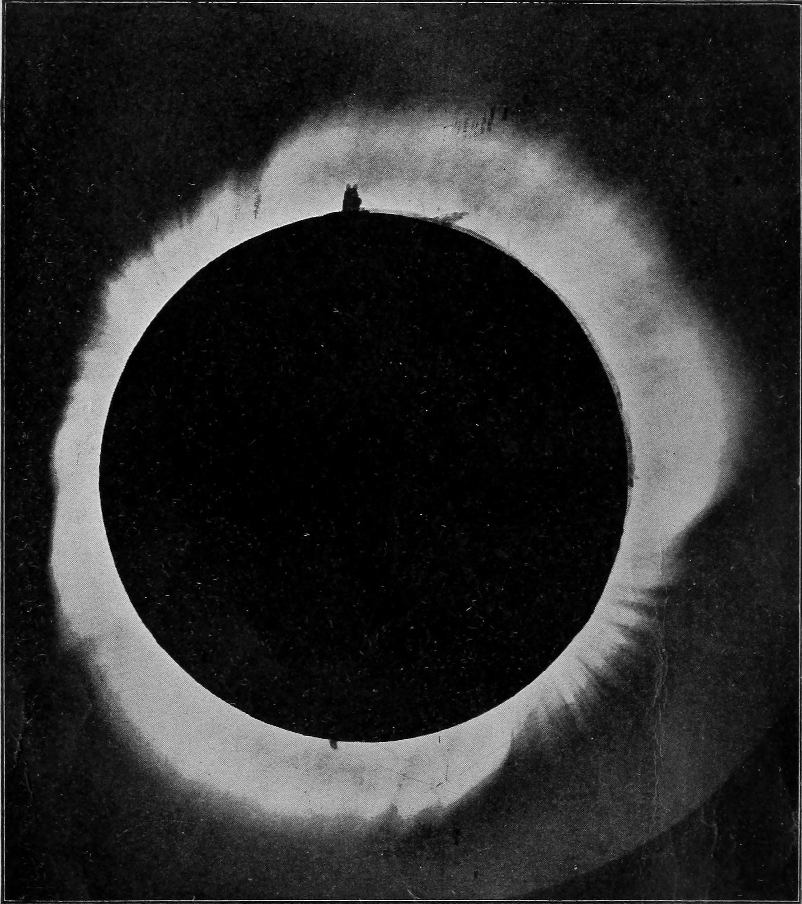
The present work grew out of articles contributed to McClure’s Magazine a few years since on the Unsolved Problems of Astronomy, Total Eclipses of the Sun, and other subjects. The interest shown in these articles suggested an exposition of the main facts of astronomy in the same style. The result of the attempt is now submitted to the courteous consideration of the reader.
The writer who attempts to set forth the facts of astronomy without any use of technical language finds himself in the dilemma of being obliged either to convey only a very imperfect idea of the subject, or to enter upon explanations of force and motion which his reader may find tedious. In grappling with this difficulty the author has followed a middle course, trying to present the subject in such a way as to be intelligible and interesting to every reader, and entering into technical explanations only when necessary to the clear understanding of such matters as the measure of time, the changes of the seasons, the varying positions of the constellations, and the aspects of the planets. It is hoped that the reader who does not wish to master these subjects will find enough to interest him in the descriptions and illustrations of celestial scenery to which the bulk of the work is devoted.
The author is indebted to Mr. Secretary Langley, of the Smithsonian Institution, for the use of the picture which forms the frontispiece.
Simon Newcomb.
Let us enter upon our subject by taking a general view of this universe in which we live, fancying ourselves looking at it from a point without its limits. Far away, indeed, is the point we must choose. To give a conception of the distance, let us measure it by the motion of light. This agent, darting through 186,000 miles in every second, would make the circuit of the earth several times between two ticks of a watch. The standpoint which we choose will probably be well situated if we take it at a distance through which light would travel in 100,000 years. So far as we know, we should at this point find ourselves in utter darkness, a black and starless sky surrounding us on all sides. But, in one direction, we should see a large patch of feeble light spreading over a considerable part of the heavens like a faint cloud or the first glimmer of a dawn. Possibly there might be other such patches in different directions, but of these we know nothing. The one which we have mentioned, and which we call the universe, is that which we are to inspect. We therefore fly toward it—how fast we need not say. To reach it in a month we should have to go a million times as fast as light. As we approach, it continually spreads out over more of the black sky, which it at length half covers, the region behind us being still entirely black.
Before reaching this stage we begin to see points of light glimmering here and there in the mass. Continuing our course, these points become more numerous, and seem to move past us and disappear behind us in the distance, while new ones continually come into view in front, as the passengers on a railway train see landscape and houses flit by them. These are stars, which, when we get well in among them, stud the whole heavens as we see them do at night. We might pass through the whole cloud at the enormous speed we have fancied, without seeing anything but stars and, perhaps, a few great nebulous masses of foggy light scattered here and there among them.
But instead of doing this, let us select one particular star and slacken our speed to make a closer inspection of it. This one is rather a small star; but as we approach it, it seems to our eyes to grow brighter. In time it shines like Venus. Then it casts a shadow; then we can read by its light; then it begins to dazzle our eyes. It looks like a little sun. It is the Sun!
Let us get into a position which, compared with the distances we have been travelling, is right alongside of the sun, though, expressed in our ordinary measure, it may be a thousand million miles away. Now, looking down and around us, we see eight star-like points scattered around the sun at different distances. If we watch them long enough we shall see them all in motion around the sun, completing their circuit in times ranging from three months to more than 160 years. They move at very different distances; the most distant is seventy times as far as the nearest.
These star-like bodies are the planets. By careful examination we see that they differ from the stars in being opaque bodies, shining only by light borrowed from the sun.
Let us pay one of them a visit. We select the third in order from the sun. Approaching it in a direction which we may call from above, that is to say from a direction at right angles to the line drawn from it to the sun, we see it grow larger and brighter as we get nearer. When we get very near, we see it looking like a half-moon — one hemisphere being in darkness and the other illuminated by the sun's rays. As we approach yet nearer, the illuminated part, always growing larger to our sight, assumes a mottled appearance. Still expanding, this appearance gradually resolves itself into oceans and continents, obscured over perhaps half their surface by clouds. The surface upon which we are looking continually spreads out before us, filling more and more of the sky, until we see it to be a world. We land upon it, and here we are upon the earth.
Thus, a point which was absolutely invisible while we were flying through the celestial spaces, which became a star when we got near the sun, and an opaque globe when yet nearer, now becomes the world on which we live.
This imaginary flight makes known to us a capital fact of astronomy: The great mass of stars which stud the heavens at night are suns. To express the idea in another way, the sun is merely one of the stars. Compared with its fellows it is rather a small one, for we know of stars that emit thousands or even tens of thousands of times the light and heat of the sun. Measuring things simply by their intrinsic importance, there is nothing special to distinguish our sun from the hundreds of millions of its companions. Its importance to us and its comparative greatness in our eyes arise simply from the accident of our relation to it.
The great universe of stars which we have described looks to us from the earth just as it looked to us during our imaginary flight through it. The stars which stud our sky are the same stars which we saw on our flight. The great difference between our view of the heavens and the view from a point in the starry distances is the prominent position occupied by the sun and planets. The former is so bright that during the daytime it completely obliterates the stars. If we could cut off the sun's rays from any very wide region, we should see the stars around the sun in the daytime as well as by night. These bodies surround us in all directions as if the earth were placed in the centre of the universe, as was supposed by the ancients.
We may connect what we have just learned about the the universe at large with what we see in the heavens. What we call the heavenly bodies are of two classes. One of these comprises the millions of stars the arrangement and appearance of which we have just described. The other comprises a single star, which is for us the most important of all, and the bodies connected with it. This collection of bodies, with the sun in its centre, forms a little colony all by itself, which we call the solar system. The feature of this system which I wish first to impress on the reader's mind is its very small dimensions when compared with the distances between the stars. All around it are spaces which, so far as we yet know, are quite void through enormous distances. If we could fly across the whole breadth of the system, we should not be able to see that we were any nearer the stars in front of us, nor would the constellations look in any way different from what they do from our earth. An astronomer armed with the finest instruments would be able to detect a change only by the most exact observations, and then only in the case of the nearer stars.
A conception of the respective magnitudes and distances of the heavenly bodies, which will help the reader in conceiving of the universe as it is, may be gained by supposing us to look at a little model of it. Let us imagine that, in this model of the universe, the earth on which we dwell is represented by a grain of mustard seed. The moon will then be a particle about one fourth the diameter of the grain, placed at a distance of an inch from the earth. The sun will be represented by a large apple, placed at a distance of forty feet. Other planets, ranging in size from an invisible particle to a pea, must be imagined at distances from the sun varying from ten feet to a quarter of a mile. We must then imagine all these little objects to be slowly moving around the sun at their respective distances, in times varying from three months to 160 years. As the mustard seed performs its revolution in the course of a year we must imagine the moon to accompany it, making a revolution around it every month.
On this scale a plan of the whole solar system can be laid down in a field half a mile square. Outside of this field we should find a tract broader than the whole continent of America without a visible object in it unless perhaps comets scattered around its border. Far beyond the limits of the American continent we should find the nearest star, which, like our sun, might be represented by a large apple. At still greater distances, in every direction, would be other stars, but, in the general average, they would be separated from each other as widely as the nearest star is from the sun. A region of the little model as large as the whole earth might contain only two or three stars.
We see from this how, in a flight through the universe, like the one we have imagined, we might overlook such an insignificant little body as our earth, even if we made a careful search for it. We should be like a person flying through the Mississippi Valley, looking for a grain of mustard seed which he knew was hidden somewhere on the American continent. Even the bright shining apple representing the sun might be overlooked unless we happened to pass quite near it.
The immensity of the distances which separate us from the heavenly bodies makes it impossible for us to form a distinct conception of the true scale of the universe, and very difficult to conceive of the heavenly bodies in their actual relations to us. If, on looking at a body in the sky, there were any way of estimating its distance, and if our eyes were so keen that we could see the minutest features on the surface of the planets and stars, the true structure of the universe would have been obvious from the time that men began to study the heavens. A little reflection will make it obvious that if we could mount above the earth to a distance of, say, ten thousand times its diameter, so that it would no longer have any perceptible size, it would look to us, in the light of the sun, like a star in the sky. The ancients had no conception of distances like this, and so supposed that the heavenly bodies were as they appeared, of a constitution totally different from that of the earth. We ourselves, looking at the heavens, are unable to conceive of the stars being millions of times farther than the planets. All look as if spread out on one sky at the same distance. We have to learn their actual arrangement and distances by reason.
It is from the impossibility of conceiving these enormous differences in the distances of objects on the earth and the heavens, that the real difficulty of forming a mental picture of them in their true relation arises. I shall ask the reader's careful attention in an attempt to present these relations in the simplest way, so as to connect things as they are with things as we see them.
Let us suppose the earth taken away from under our feet, leaving us hanging in mid space. We should then see the heavenly bodies —sun, moon, planets, and stars— surrounding us in every direction, up and down, east and west, north and south. The eye would rest on nothing else. As we have just explained, all these objects would seem to us to be at the same distance.
A great collection of points scattered in every direction at an equal distance from one central point, must all lie upon the inner surface of a hollow sphere. It follows that, in the case supposed, the heavenly bodies will appear to us as if set in a sphere in the centre of which we appear to be placed. Since one of the final objects of astronomy is to learn the directions of the heavenly bodies from us, this apparent sphere is talked about in astronomy as if it were a reality. It is called the celestial sphere. In the case we have supposed, with the earth out of the way, all the heavenly bodies on this sphere would at any moment seem at rest. The stars would remain apparently at rest day after day and week after week. It is true that, by watching the planets, we should in a few days or weeks, as the case might be, see their slow motion around the sun, but this would not be perceptible at once. Our first impression would be that the sphere was made of some solid, crystalline substance, and that the heavenly bodies were fastened to its inner surface. The ancients had this notion, which they brought yet nearer the truth by fancying a number of these spheres fitting inside of each other to represent the different distances of the heavenly bodies.
With this conception well in mind, let us bring the earth back under our feet. Now we have to make a draft upon the reader's power of conception. Considered in its relation to the magnitude of the heavens, the earth is a mere point; yet, when we bring it into place, its surface cuts off one half of the universe from our view, just as an apple would cut off the view of one side of a room from an insect crawling upon it. That half of the celestial sphere which, being above the horizon, remains visible is called the visible hemisphere; the half below, the view of which is cut off by the earth, is called the invisible hemisphere. Of course we could see the latter by travelling around the earth.
Having this state of things well in mind, we must make another draft on the reader's attention. We know that the earth is not at rest, but revolves unceasingly around an axis passing through its centre. The natural result of this is an apparent rotation of the celestial sphere in the opposite direction. The earth rotates from west toward east; hence the sphere seems to rotate from east toward west. This real revolution of the earth, with the apparent revolution of the stars which it causes, is called the diurnal motion, because it is completed in a day.
Our next problem is to show the connection between the very simple conception of the rotation of the earth and the more complicated appearance presented by the apparent diurnal motion of the heavenly bodies which it brings about. The latter varies with the latitude of the observer upon the earth's surface. Let us begin with its appearance in our middle northern latitudes.
For this purpose we may in imagination build a hollow globe representing the celestial sphere. We may make it as large as a Ferris wheel, but one of thirty or forty feet in diameter would answer our purpose. Let Figure 1 be an inside view of this globe, mounted on two pivots, P and Q, so that it can turn round on them diagonally. In the middle, at O, we have a horizontal platform, NS, on which we sit. The constellations are marked on the inside of the globe, covering the whole surface, but those on the lower half are hidden from view by the platform. This platform, as is evident, represents the horizon.
The globe is now made to turn on its pivots. What will happen? We shall see the stars near the pivot P revolving around the latter as the globe turns. The stars on a certain circle KN will graze the edges of the platform, as they pass below P. Those yet farther from P will dip below the platform to a greater or less extent, according to their distance from P. Stars near the circle EF, halfway between P and Q, will perform half their course above, and half below the platform. Finally, stars within the circle ST will never rise above the level of the platform at all, and will remain invisible to us.
To our eyes the celestial sphere is such a globe as this, of infinite dimensions. It seems to us to be continually revolving round a certain point in the sky as a pivot, making one revolution in nearly a day, and carrying the sun, moon, and stars with it. The stars preserve their relative positions as if fastened to the revolving celestial sphere. That is to say, if we take a photograph of them at any hour of the night, the same photograph will show their appearance at any other hour, if we only hold it in the right position.
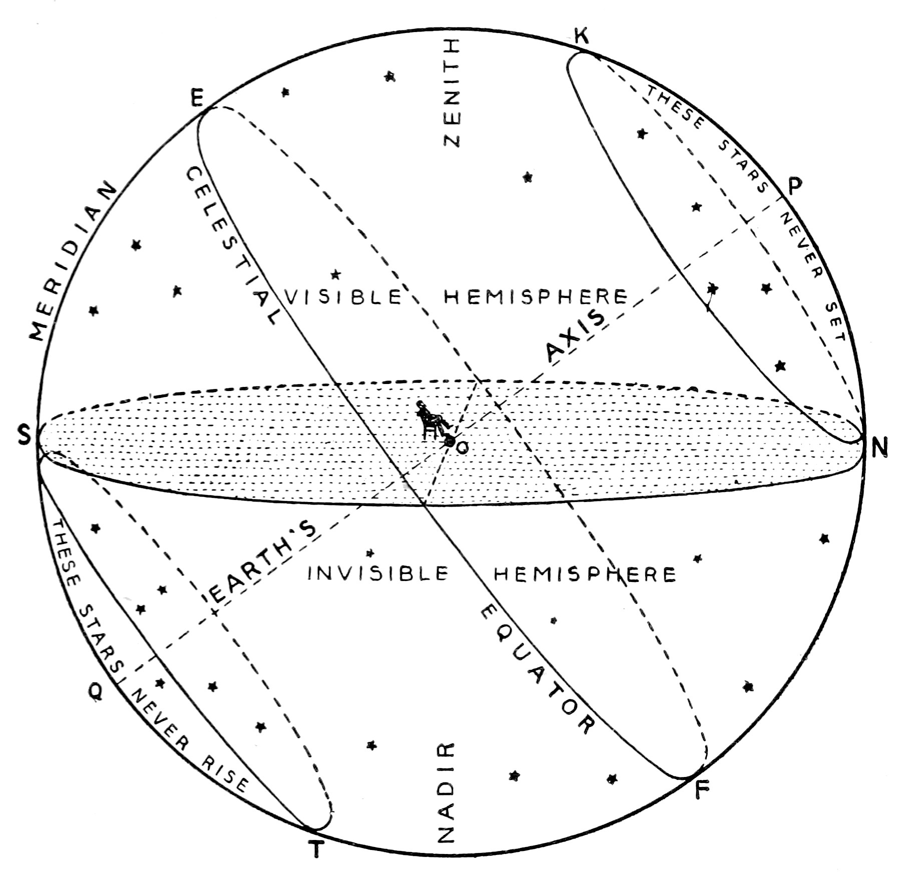
The pivot corresponding to P is called the north celestial pole. To dwellers in middle northern latitudes, where most of us live, it is in the northern sky, nearly midway between the zenith and the northern horizon. The farther south we live, the nearer it is to the horizon, its altitude above the latter being equal to the latitude of the place where the observer stands. Quite near it is the pole star, which we shall hereafter show how to locate. To ordinary observation, the pole star seems never to move from its position. In our time it is little more than a degree from the pole, a quantity with which we need not now concern ourselves.
Opposite the north celestial pole, and therefore as far below our horizon as the north one is above it, lies the south celestial pole.
An obvious fact is that the diurnal motion as we see it in our latitude is oblique. When the sun rises in the east it does not seem to go straight up from the horizon, but moves over toward the south at a more or less acute angle with the horizon. So when it sets, its motion relative to the horizon is again oblique.
Now, imagine that we take a pair of compasses long enough to reach the sky. We put one point on the sky at the north celestial pole, and the other point far enough from it to touch the horizon below the pole. Keeping the first point at the pole we draw a complete circle on the celestial sphere with the other point. This circle just touches the north horizon at its lowest point and, in our northern latitudes, extends to near the zenith at its highest point. The stars within this circle never set, but only seem to perform a daily course around the pole. For this reason this circle is called the circle of perpetual apparition.
The stars farther south rise and set, but perform less and less of their daily course above our horizon, till we reach the south point of it, where they barely show themselves.
Stars yet farther south never rise at all in our latitudes. They are contained within the circle of perpetual occultation, which surrounds and is centred on the south celestial pole, as the circle of perpetual apparition is centred on the north one.
Figure 2 shows the principal stars of the northern heavens within the circle of perpetual apparition for the Northern States. By holding it with the month on top we shall have a view of the constellations as they are seen about eight o'clock in the evening. It also shows how to find the pole star in the centre by the direction of the two outer stars or pointers in the Dipper, or Great Bear.
Now let us change our latitude and see what occurs. If we journey toward the equator, the direction of our horizon changes, and during our voyage we see the pole star constantly sinking lower and lower. As we approach the equator, it approaches the horizon, reaching it when we reach the equator. It is plain enough that the circle of perpetual apparition grows smaller until, at the equator, it ceases to exist, each pole being in our horizon. Now the diurnal motion seems to us quite different from what it is here. The sun, moon, and stars, when they rise, commence their motion directly upwards. If one of them rises exactly in the east, it will pass through the zenith; one rising south of the east will pass south of the zenith; one rising north of the east, north of the zenith.
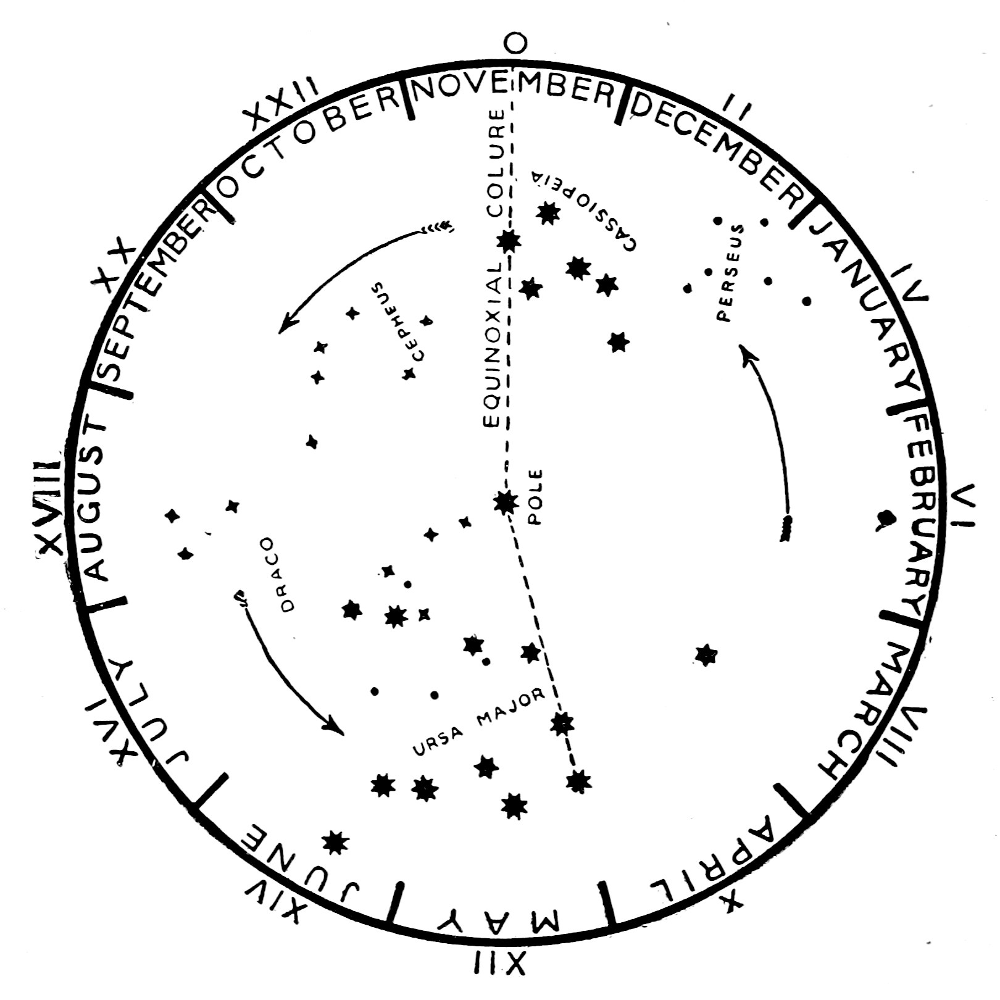
Continuing our course into the southern hemisphere, we find that the sun, while still rising in the east, generally passes the meridian to the north of the zenith. The main point of difference between the two hemispheres is that, as the sun now culminates in the north, its apparent motion is not in the direction of the hands of a watch, as with us, but in the opposite direction. In middle southern latitudes, the northern constellations, so familiar to us, are always below the horizon, but we see new ones in the south. Some of these are noted for their beauty, the Southern Cross, for example. Indeed, it has often been thought that the southern heavens were more brilliant and contained more stars than the northern ones. But this view is now found to be incorrect. Careful study and counts of the stars show the number to be about the same in one hemisphere as in the other. Probably the impression we have mentioned arose from the superior clearness of the sky in the southern regions. For some reason, perhaps because of the drier climate, the air is less filled with smoke and haze in the southern portions of the African and American continents than it is in our northern regions.
What we have said of the diurnal motion of the northern stars round and round the pole, applies to the stars in the southern heavens. But there is no southern pole star, and therefore nothing to distinguish the position of the southern celestial pole. The latter has a number of small stars around it, but they are no thicker than in any other region of the sky. Of course, the southern hemisphere has its circle of perpetual apparition, which is larger the farther south we travel. That is to say, the stars in a certain circle around the south celestial pole never set, but simply revolve around it, apparently in an opposite direction from what they do in the north. So, also, there is a circle of perpetual occultation containing those stars around the north pole which, in our latitudes, never set. After we go beyond 20° south latitude we can no longer see any part of the constellation Ursa Minor. Still farther south the Great Bear will only occasionally show itself to a greater or less extent above the horizon.
Could we continue our journey to the south pole we should no longer see any rising or setting of the stars. The latter would move around the sky in horizontal circles, the centre or pole being at the zenith. Of course, the same thing would be true at the north pole.
We all know that a line running through any place on the earth in a north and south direction, is called the meridian of that particular place. More exactly, a meridian of the earth's surface is a semicircle passing from the north to the south pole. Such semicircles pass in every direction from the north pole, and one may be drawn so as to pass through any place. The meridian of the Royal Observatory at Greenwich is now adopted by most nations, our own included, as the one from which longitudes are measured, and by which in the United States and a considerable part of Europe the clocks are set.
Corresponding to the terrestrial meridian of a place is a celestial meridian which passes from the north celestial pole through the zenith, intersects the horizon at its south point, and continues to the south pole. As the earth revolves on its axis it carries the celestial as well as the terrestrial meridian with it, so that the former, in the course of a day sweeps over the whole celestial sphere. The appearance to us is that every point of the celestial sphere crosses the meridian in the course of a day.
Noon is the moment at which the sun passes the meridian. Before the introduction of railways, people used to set their clocks by the sun. But owing to the obliquity of the ecliptic and the eccentricity of the earth's orbit around the sun, the intervals between successive passages of the sun are not exactly equal. The consequence is that, if a clock keeps exact time, the sun will sometimes pass the meridian before and sometimes after twelve by the clock. When this was understood, a distinction was made between apparent and mean time. Apparent time was the unequal time determined by the sun; mean time was that given by a clock keeping perfect time month after month. The difference between these two is called the equation of time. Its greatest amounts are reached every year about the first of November and the middle of February. At the former time, the sun passes the meridian sixteen minutes before the clock shows twelve; in February, fourteen or fifteen minutes after twelve.
To define mean time astronomers imagine a mean sun which always moves along the celestial equator so as to pass the meridian at exactly equal intervals of time, and which is sometimes ahead of the real sun and sometimes behind it. This imaginary or mean sun determines the time of day. The subject will perhaps be a little easier if we describe things as they appear, imagining the earth to be at rest while the mean sun revolves around it, crossing the meridian of every place in succession. We thus imagine noon to be constantly travelling around the world. In our latitudes, its speed is not far from a thousand feet per second; that is to say, if it is noon at a certain place where we stand, it will one second afterward be noon about one thousand feet farther west, in another second a thousand feet yet farther west, and so on through the twenty-four hours, until noon will once more get back where we are. The obvious result of this is that it is never the same time of day at the same moment at two places east or west of each other. As we travel west, we shall continually find our watches to be too fast for the places which we reach, while in travelling east, they will be too slow. This varying time is called local or astronomical time. The latter term is used because it is the time determined by astronomical observations at any place.
Formerly the use of local time caused great inconvenience to travellers. Every railway had its own meridian which it ran its trains by; and the traveller was frequently liable to miss his train by not knowing the relation between his watch or a clock and the railway time. So in 1883, our present system of standard time was introduced. Under this system, standard meridians are adopted fifteen degrees apart, this being the space over which the sun passes in one hour. The time at which noon passes a standard meridian is then used throughout a zone extending seven or eight degrees on each side. This is called standard time. The longitudes which mark the zones are reckoned from Greenwich. It happens that Philadelphia is about seventy-five degrees in longitude, or five hours in time from Greenwich. More exactly, it is about one minute of time more than this. Thus the standard meridian which we use for the Middle States passes a little east of Philadelphia. When mean noon reaches this meridian, it is considered as twelve o'clock throughout all our Eastern and Middle States as far west as Ohio. An hour later, it is considered twelve o'clock in the Mississippi Valley. An hour later, it is twelve o'clock for the region of the Rocky Mountains. In yet another hour, it is twelve o'clock on the Pacific coast. Thus we use four different kinds of time, Eastern time, Central time, Mountain time, and Pacific time, differing from each other by entire hours. Using this time, the traveller only has to set his watch forward or back one hour at a time, as he travels between the Pacific and the Atlantic coast, and he will always find it correct for the region in which he is at the time.
It is by this difference of time that the longitudes of places are determined. Imagine that an observer in New York makes a tap with a telegraph-key at the exact moment when a certain star crosses his meridian, and that this moment is recorded at Chicago as well as New York. When the star reaches the meridian of Chicago, the observer taps the time of its crossing over his meridian in the same way. The interval between the two taps shows the difference of longitude between the two cities.
Another method of getting the same result is for each observer to telegraph his local time to the other. The difference of the two times gives the longitude.
In this connection, it must be remembered that the heavenly bodies rise and set by local, not standard, time. Hence the time of rising and setting of the sun, given in the almanacs, will not answer to set our watches by for standard time, unless we are on one of the standard meridians. One difference between these two kinds of time is that local time varies continuously as we travel east or west, while standard time varies only by jumps of one hour when we cross the boundaries of any of the four zones just described.
Midnight, like noon, is continually travelling round the earth, crossing all the meridians in succession. At every crossing it inaugurates the beginning of another day on that meridian. If it is Monday at any crossing, it will be Tuesday when it gets back again. So there must be some meridian where Monday changes to Tuesday, and where every day changes into the day following. This dividing meridian, called the "date line," is determined only by custom and convenience. As colonization extended toward the east and the west men carried their count of days with them. The result was that whenever it extended so far that those going east met those going west they found their time differing by one day. What for the westward traveller was Monday was Tuesday for the eastern one. This was the case when we acquired Alaska. The Russians having reached that region by travelling east, it was found that, when we took possession by going west, our Saturday was their Sunday. This gave rise to the question whether the inhabitants, in celebrating the festivals of the Greek Church, should follow the old or the new reckoning of days. The subject was referred to the head of the church at St. Petersburg, and finally to Struve, the director of the Pulkowa Observatory, the national astronomical institution of the empire. Struve made a report in favor of the American reckoning, and the change to it was duly carried out.
At the present time custom prescribes for the date line the meridian opposite that of Greenwich. This passes through the Pacific Ocean, and in its course crosses very little land—only the northeastern corner of Asia and, perhaps, some of the Fiji Islands. This fortunate circumstance prevents a serious inconvenience which might arise if the date line passed through the interior of a country. In this case the people of one city might have their time a day different from those of a neighbouring city across the line. It is even conceivable that residents on two sides of the same street would have different days for Sunday. But being in the ocean, no such inconvenience follows. The date line is not necessarily a meridian of the earth, but may deviate from one side to the other in order to prevent the inconvenience we have described. Thus the inhabitants of Chatham Island have the same time as that of the neighbouring island of New Zealand, although the meridian of 180° from Greenwich runs between them.
In this chapter I have to use and explain some technical terms. The ideas conveyed by them are necessary to a complete understanding of the celestial motions, and of the positions of the stars at any hour when we may wish to observe them. To the reader who only desires a general idea of celestial phenomena, this chapter will not be necessary. I must invite one who wants a knowledge more thorough than this to make a close study of the celestial sphere as it was described in our second chapter. Turning back to our first figure, we see ourselves concerned with the relation of two spheres. One of these is the real globe of the earth, on the surface of which we dwell, and which is continually carrying us around by its daily rotation. The other is the apparent sphere of the heavens, which surrounds our globe on all sides at an enormous distance, and which, although it has no reality, we are obliged to imagine in order to know where to look for the heavenly bodies. Notice that we see this sphere from its centre, so that everything we see upon it appears upon its inside surface, while we see the surface of the earth from the outside.
There is a correspondence between points and circles on these two spheres. We have already shown how the axis of the earth, which marks our north and south poles, being continued in both directions through space, marks the north and south poles of the celestial sphere.
We know that the earth's equator passes around it at an equal distance from the two poles. In the same way we have an equator on the celestial sphere which passes around it at a distance of ninety degrees from either celestial pole. If it could be painted on the sky we should always see it, by day or night, in one fixed position. We can imagine exactly how it would look. It intersects the horizon in the east and west points, and is in fact the line which the sun seems to mark out in the sky by its diurnal course during the twelve hours that it is above the horizon, in March or September. In our northernmost States, it passes about halfway between the zenith and the south horizon, but passes nearer the zenith the farther south we are.
As we have circles of latitude parallel to the equator passing around the earth both north and south of the equator, so we have on the celestial sphere circles parallel to the celestial equator, and therefore having one or the other of the celestial poles as a centre. As the parallels of latitude on the earth grow smaller and smaller toward the pole, so do these celestial circles grow smaller toward the celestial poles.
We know that longitude on the earth is measured by the position of a meridian passing from the north to the south pole through the place whose position is to be defined. The angle which this meridian makes with that through the Greenwich Observatory is the longitude of the place.
We have the same system in the heavens. Circles are imagined to pass from one celestial pole to the other in every direction, but all intersecting the equator at right angles, as shown in Figure 3. These are called hour circles. One of them is called the first hour circle, and is so marked in the figure. It passes through the vernal equinox, a point to be defined in the next chapter. This takes a place in the sky corresponding to Greenwich on the earth's surface.
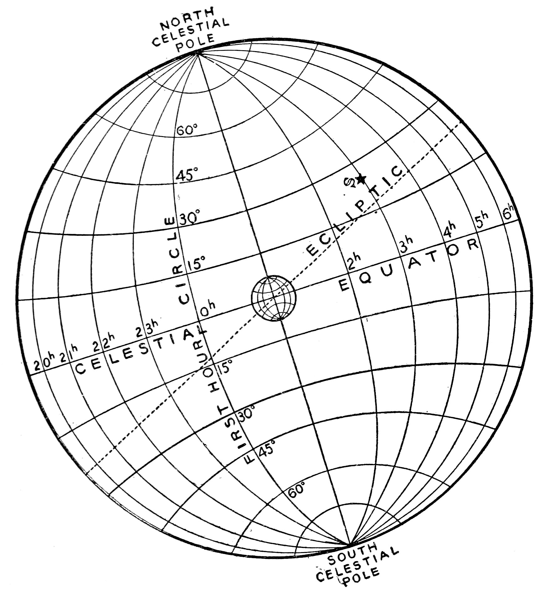
The position of a star on the celestial sphere is defined in the same way that the position of a city on the earth is defined, by its latitude and longitude. But different terms are used. In astronomy, the measure which corresponds to longitude is called right ascension; that which corresponds to latitude is called declination. We thus have the following definitions, which I must ask the reader to remember carefully.
The declination of a star is its apparent distance from the celestial equator north or south. In the figure the star is in declination twenty-five degrees north.
The right ascension of a star is the angle which the hour circle passing through it makes with the first hour circle which passes through the vernal equinox. In the figure the star is in three hours right ascension.
The right ascension of a star is, in astronomical usage, generally expresssed as so many hours, minutes, and seconds, in the way shown on Figure 3. But it may equally well be expressed in degrees as we express the longitude of places on the earth. The right ascension expressed in hours may be changed into degrees by the simple process of multiplication by 15. This is because the earth resolves 15° in an hour. Figure 3 also shows us that, while the degrees of latitude are nearly of the same length all over the earth, those of longitude continually diminish, slowly at first and more rapidly afterwards, from the equator toward the poles. At the equator the degree of longitude is about 69½ statute miles, but at the latitude of 45° it is only about 42 miles. At 60° it is less than 35 miles, at the pole it comes down to nothing, because there the meridians meet.
We may see that the speed of the rotation of the earth follows the same law of diminution. At the equator, 15° is about 1,000 miles. We may therefore see that, in that part of the earth, the latter revolves at the rate of 1,000 miles an hour. This is about 1,500 feet per second. But in latitude 45° the speed is diminished to little more than 1,000 feet per second. At 60°, north, it is only half that at the equator; at the poles it goes down to nothing.
In applying this system the only trouble arises from the earth's rotation. As long as we do not travel, we remain on the same circle of longitude on the earth. But by the rotation of the earth, the right ascension of any point in the sky which seems to us fixed, is continually changing. The only difference between the celestial meridian and an hour circle is that the former travels round with the earth, while the latter is fixed on the celestial sphere.
There is a strict resemblance in almost every point between the earth and the celestial sphere. As the former revolves on its axis from west to east, the latter seems to revolve from east to west. If we imagine the earth centred inside the celestial sphere with a common axis passing through them, as shown in the figure, we shall have a clear idea of the relations we wish to set forth.
If the sun, like the stars, seemed fixed on the celestial sphere from year to year, the problem of finding a star when we knew its right ascension and declination would be easier than it actually is. Owing to the annual revolution of the earth round the sun there is a continual change in the apparent position of the sphere at a given hour of the night. We must next point out the effect of this revolution.
It is well known that the earth not only turns on its axis, but makes an annual revolution round the sun. The result of this motion—in fact, the phenomenon by which it is shown—is that the sun appears to make an annual revolution around the celestial sphere among the stars. We have only to imagine ourselves moving round the sun and therefore seeing the latter in different directions, to see that it must appear to us to move among the stars, which are farther than it is. It is true that the motion is not at once evident because the stars are invisible in the daytime. But the fact of the motion will be made very clear if, day after day, we watch some particular fixed star in the west. We shall find that it sets earlier and earlier every day; in other words, it is getting continually nearer and nearer the sun. More exactly, since the real direction of the star is unchanged, the sun appears to be approaching the star.
If we could see the stars in the daytime, all round the sun, the case would be yet clearer. We should see that if the sun and a star rose together in the morning the sun would, during the day, gradually work past the star in an easterly direction. Between the rising and setting it would move nearly its own diameter relative to the star. Next morning we should see that it had gotten quite away from the star, being nearly two diameters distant from it. The figure shows how this would go on at the time of the spring equinox, after March twentieth. This motion would continue month after month. At the end of the year the sun would have made a complete circuit of the heavens relative to the star, and we should see the two once more together.
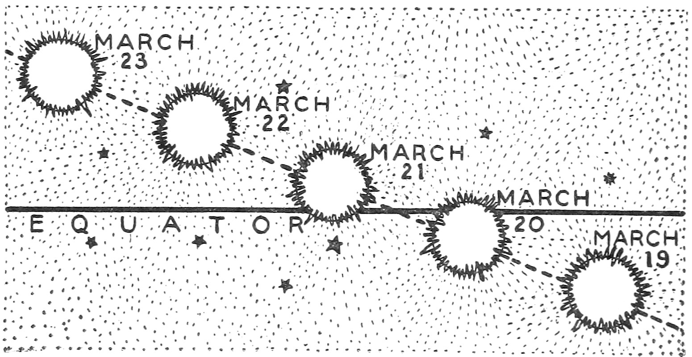
How the above effect is produced will be seen by Figure 5, which represents the earth's orbit round the sun, with the stars in the vast distance. When the earth is at A, we see the sun in the line AM, as if it were among the stars at M. As we are carried on the earth from A to B, the sun seems to move from M to N, and so on through the year. This apparent motion of the sun in one year around the celestial sphere, was noticed by the ancients, who seem to have taken much trouble to map it out. They imagined a line passing around the celestial sphere which the sun always followed in its annual course, and which was called the ecliptic. They noticed that the planets followed nearly but not exactly the same general course as the sun among the stars. A belt extending around on each side of the ecliptic, and broad enough to contain all the known planets, as well as the sun, was called the zodiac. It was divided into twelve signs, each marked by a constellation. The sun went through each sign in the course of a month and through all twelve signs in a year. Thus arose the familiar signs of the zodiac, which bore the same names as the constellations among which they were situated. This is not the case at present, owing to the slow motion of precession soon to be described.
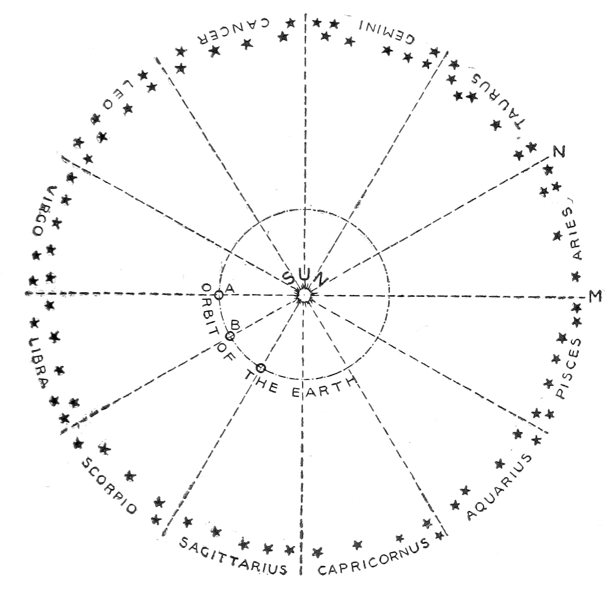
It will be seen that the two great circles we have described spanning the entire celestial sphere are fixed in entirely different ways. The equator is determined by the direction in which the axis of the earth points, and spans the sphere midway between the two celestial poles. The ecliptic is determined by the earth's motion around the sun.
These two circles do not coincide, but intersect each other at two opposite points, at an angle of twenty-three and a half degrees, or nearly one quarter of a right angle. This angle is called the obliquity of the ecliptic. To understand exactly how it arises we must mention a fact about the celestial poles; from what we have said of them it will be seen that they are not determined by anything in the heavens, but by the direction of the earth's axis only; they are nothing but the two opposite points in the heavens which lie exactly in the line of the earth's axis. The celestial equator, being the great circle halfway between the poles, is also fixed by the direction of the earth's axis and by nothing else.
Let us now suppose that the earth's orbit around the sun is horizontal. We may in imagination represent it by the circumference of a round level platform with the sun in its centre. We suppose the earth to move around the circumference of the platform with its centre on the level of the platform; then, if the earth's axis were vertical, its equator would be horizontal and on a level with the platform and therefore would always be directed toward the sun in its centre, as the earth made its annual course around the platform. Then, on the celestial sphere, the ecliptic determined by the course of the sun would be the same circle as the equator. The obliquity of the ecliptic arises from the fact that the earth's orbit is not vertical, as just supposed, but is inclined twenty-three and a half degrees. The ecliptic has the same inclination to the plane of the platform; thus the obliquity is the result of the inclination of the earth's axis. An important fact connected with the subject is that, as the earth makes its revolutions around the sun, the direction of its axis remains unchanged in space; hence its north pole is tipped away from the sun or toward it, according to its position in the orbit. This is shown in Figure 6, which represents the platform we have supposed, with the axis tipped toward the right hand. The north pole will always be tipped in this direction, whether the earth is east, west, north, or south from the sun.
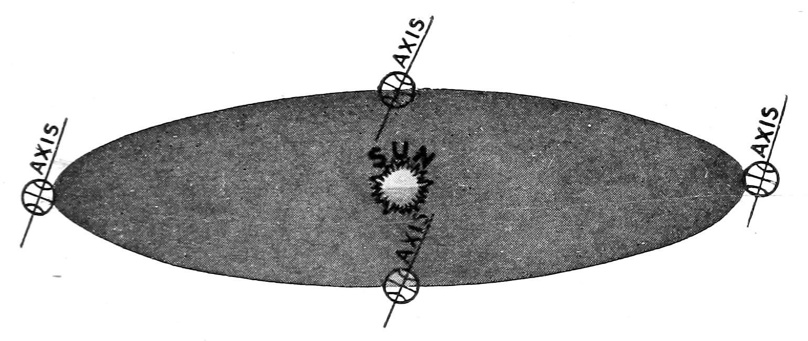
To see the effect of the inclination upon the ecliptic suppose that, at noon on some twenty-first day of March, the earth should suddenly stop turning on its axis, but continue its course around the sun. What we should then see during the next three months is represented in Figure 7, in which we are supposed to be looking at the southern sky. We see the sun on the meridian, where it will at first seem to remain immovable. The figure shows the celestial equator passing through the east and west points of the horizon as already described and also the ecliptic, intersecting it at the equinox. Watching the result for a time equal to three of our months we should see the sun slowly make its way along the ecliptic to the point marked "summer solstice," its farthest northern point, which it would reach about June twentieth.
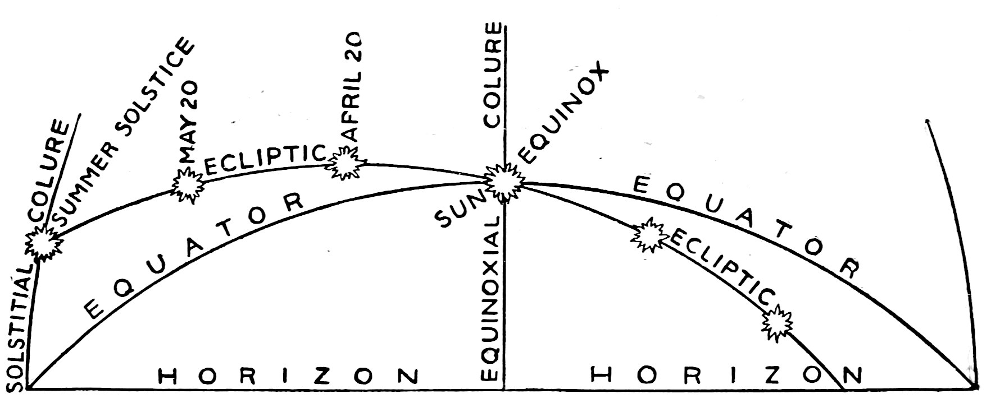
Figure 8 enables us to follow its course for three months longer. After passing the summer solstice, its course gradually carries it once more to the equator, which it again crosses about September twentieth. Its course during the rest of the year is the counterpart of that during the first six months. It is farthest south of the equator on December twentieth, and again crosses it on March twentieth.
We see that there are four cardinal points in this apparent annual course of the sun. (1) Where we have commenced our watch is the vernal equinox. (2) The point where the sun, having reached its northern limit, begins to again approach the equator. This is called the summer solstice. (3) Opposite the vernal equinox is the autumnal equinox, which the sun passes about September twentieth. (4) Opposite the summer solstice is the point where the sun is farthest south. This is called the winter solstice.
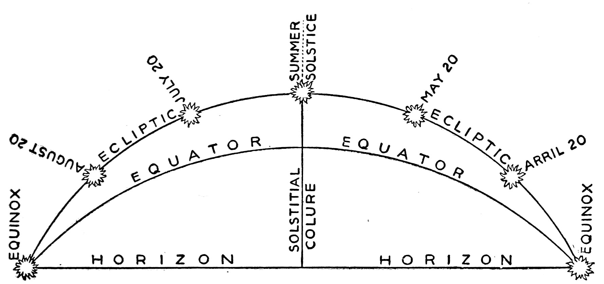
The hour circles which pass from one celestial pole to the other through these points at right angles to the equator are called colures. That which passes through the vernal equinox is the first meridian, from which right ascensions are counted as already described. The two at right angles to it are called the solstitial colures.
Let us now show the relation of the constellations to the seasons and the time of day. Suppose that to-day the sun and a star passed the meridian at the same moment; to-morrow the sun will be nearly a degree to the east of the star, which shows that the star will pass the meridian nearly four minutes sooner than the sun will. This will continue day after day throughout the entire year when the two will again pass the meridian at about the same moment. Thus the star will have passed once oftener than the sun. That is to say: In the course of a year while the sun has passed the meridian three hundred and sixty-five times, a star has passed it three hundred and sixty-six times. Of course if we take a star in the south it will have risen and set the same number of times.
Astronomers keep the reckoning of this different rising and setting of the stars by using a sidereal day, or star day, equal to the interval between two passages of a star, or of the vernal equinox, across the meridian. They divide this day into twenty-four sidereal hours, and these into minutes and seconds according to the usual plan. They also use sidereal clocks which gain about three minutes and fifty-six seconds per day on the ordinary clocks, and thus show sidereal time. Sidereal noon is the moment at which the vernal equinox crosses the meridian of the place. The clock is then set at 0 hours, 0 minutes, and 0 seconds. Thus set and regulated, the sidereal clock keeps time with the apparent rotation of the celestial sphere, so that the astronomer has only to look at his clock to see, by day or by night, what stars are on the meridian and what the positions of the constellations are.
If the earth's axis were perpendicular to the plane of the ecliptic, the latter would coincide with the equator, and we should have no difference of seasons the year round. The sun would always rise in the exact east and set in the exact west. There would be only a very slight change in the temperature arising from the fact that the earth is a little nearer the sun in January than in July. Owing to the obliquity of the ecliptic it follows that, while the sun is north of the equator, which is the case from March to September, the sun shines upon the northern hemisphere during a greater time of each day and at a greater angle, than on the southern hemisphere. In the southern hemisphere the opposite is the case. The sun shines longer from September till March than it does on the northern hemisphere. Thus we have winter in the northern hemisphere when it is summer in the southern, and vice versa.
Before going farther let us recapitulate the phenomena we have described from the two points of view: one that of the real motions of the earth; the other that of the apparent motions of the heavens, to which the real motions give rise.
The real diurnal motion is the turning of the earth on its axis.
The apparent diurnal motion is that which the stars appear to have in consequence of the earth's rotation.
The real annual motion is that of the earth round the sun.
The apparent annual motion is that of the sun around the celestial sphere among the stars.
By the real diurnal motion the plane of our horizon is carried past the sun or a star.
We then say that the sun or star rises or sets, as the case may be.
About March twenty-first of every year the plane of the earth's equator passes from the north to the south of the sun, and about September twenty-first it repasses toward the north.
We then say that the sun crosses to the north of the equator in March, and to the south in September.
In June of every year the plane of the earth's equator is at the greatest distance south of the sun, and in December at the greatest distance north.
We say in the first case that the sun is at the northern solstice, and in the second that it is at the southern solstice.
The earth's axis is tipped twenty-three and a half degrees from the perpendicular to the earth's orbit.
The apparent result is that the ecliptic is inclined twenty-three and a half degrees to the celestial equator.
During June and the other summer months the northern hemisphere of the earth is tipped toward the sun. Places in north latitude, as they are carried round by the turning of the earth, are then in sunlight during more than half their course; those in south latitude less.
The result as it appears to us is that the sun is more than half the time above the horizon, and that we have the hot weather of summer, while in the southern hemisphere the days are short, and the season is winter.
During our winter months the case is reversed. The southern hemisphere is then tipped toward the sun, and the northern hemisphere away from it. Consequently, summer and long days are the order in the southern, and the reverse in the northern hemisphere.
We most naturally define the year as the interval of time in which the earth revolves around the sun. From what we have said, there are two ways of ascertaining its length. One is to find the interval between two passages of the sun past the same star. The other is to find the interval between two passages of the sun past the same equinox, that is, across the equator. If the latter were fixed among the stars the two intervals would be equal. But it was found by the ancient astronomers, from observations extending through several centuries, that these two methods did not give the same length of year. It took the sun about eleven minutes longer to make the circuit of the stars than to make the circuit of the equinoxes. This shows that the equinoxes steadily shift their position among the stars from year to year. This shift is called the precession of the equinoxes. It does not arise from anything going on in the heavens, but only from a slow change in the direction of the earth's axis from year to year as it moves around the sun.
If we should suppose the platform in Figure 6 to last for six or seven thousand years, and the earth to make its six or seven thousand revolutions around it, we should find that, at the end of this time, the north end of the axis of the earth, instead of being tipped toward our right hand, as shown in the figure, would be tipped directly toward us. At the end of another six or seven thousand years it would be tipped toward our left; at the end of a third such period it would be tipped away from us, and at the end of a fourth, or about twenty-six thousand years in all, it would have gotten back to its original direction. Since the celestial poles are determined by the direction of the earth's axis, this change in the direction of the axis makes them slowly go around a circle in the heavens, having a radius of about twenty-three and a half degrees. At the present time the pole star is a little more than a degree from the pole. But the pole is gradually approaching it and will pass by it in about two hundred years. In twelve thousand years from now the pole will be in the constellation Lyra, about five degrees from the bright star Vega of that constellation. In the time of the ancient Greeks their navigators did not recognize any pole star at all, because what is now such was then ten or twelve degrees from the pole, the latter having been between it and the constellation of the Great Bear. It was the latter which they steered by, and which they called the Cynosure.
It follows from all this that, since the celestial equator is the circle midway between the two poles, there must be a corresponding shift in its position among the stars. The effect of this shift during the past two thousand years is shown in Figure 9. Since the equinoxes are the points of crossing of the ecliptic and the equator, they also change in consequence of this motion. It is thus that the precession of the equinoxes arises.
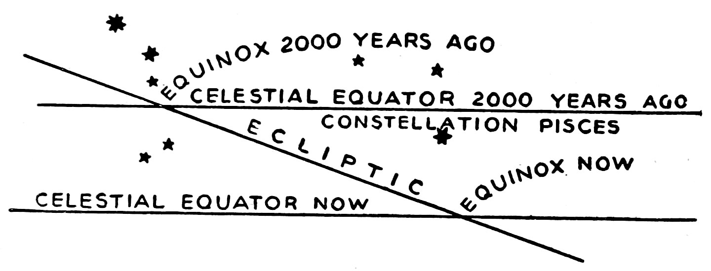
The two kinds of year we have described are called equinoctial and sidereal. The equinoctial year, also called the solar year, is the interval between two returns of the sun to the equinox. Its length is—
365 days 5 hours 48 minutes 46 seconds.
Since the seasons depend upon the sun's being north or south of the equator, the solar or equinoctial year is that used in the reckoning of time. The ancient astronomers found that its length was about three hundred and sixty-five and one quarter days. As far back as the time of Ptolemy the length of the year was known even more exactly than this, and found to be a few minutes less than three hundred and sixty-five and one quarter days. The Gregorian Calendar, which nearly all civilised nations now use, is based upon a close approximation to this length of the year.
The sidereal year is the interval between two passages of the sun past the same star. Its length is three hundred and sixty-five days six hours and nine minutes.
According to the Julian calendar, which was in use in Christendom until 1582, the year was considered to be exactly 365¼ days. This, it will be seen, was 11 minutes 14 seconds more than the true length of the solar year. Consequently, the seasons were slowly changing in the course of centuries. In order to obviate this, and have a year whose average length was as nearly as possible correct, a decree was passed by Pope Gregory XIII by which, in three centuries out of four, a day was dropped from the Julian calendar. According to the latter, the closing year of every century would be a leap year. In the Gregorian calendar 1600 was still to remain a leap year, but 1500, 1700, 1800, and 1900 were all common years.
The Gregorian calendar was adopted immediately by all Catholic countries, and from time to time by Protestant countries also, so that for the past 150 years it has been universal in both. But Russia has held on to the Julian calendar until this day. Consequently in that country the reckoning of time is now 13 days behind that in the other Christian countries. The Russian New Year of 1900 occurred on what we call January 13. In February of that year we only counted 28 days, but Russia counted 29. Hence, in 1901, the Russian New Year was carried still farther forward to our January 14.
There is no branch of science more interesting to the public than that with which the telescope is concerned. I assume that the reader wishes to have an intelligent idea as to what a telescope is and what can be seen with it. In its most complete form, as used by the astronomer in his observatory, the instrument is quite complex. But there are a few main points about it which can be mastered in a general way by a little close attention. After mastering these points, the visitor to an observatory will examine the instrument with much more satisfaction than he can when he knows nothing about it.
The one great function of a telescope, as we all know, is to make distant objects look nearer to us; to see an object miles away as if it were, perhaps, only as many yards. The optical appliances by which this is effected are extremely simple. They are made with large well-polished lenses, of the same kind as those used in a pair of spectacles, differing from the latter only in their size and general perfection. A telescope requires an appliance for collecting the light coming from the object so as to form an image of the latter. There are two ways in which the light may be collected, one by passing the light through a set of lenses, and one by reflecting it from a concave mirror. Thus we have two different kinds of telescope, one called refracting, the other reflecting. We begin with the former because it is the more usual.
The lenses of a refracting telescope comprise two combinations or systems; the one an object-glass—or "objective," as it is sometimes called for shortness—which forms the image of a distant object in the focus of the instrument; and the other an eyepiece, with which this image is viewed.
The objective is the really difficult and delicate part of the instrument. Its construction involves more refined skill than that of all the other parts together. How great is the natural aptitude required may be judged from the fact that a generation ago there was but one man in the world in whose ability to make a perfect object-glass of the largest size astronomers everywhere would have felt confidence. This man was Alvan Clark, of whom we shall soon speak.
The object-glass, as commonly made, consists of two large lenses. The power of the telescope depends altogether on the diameter of these lenses, which is called the aperture of the telescope. The aperture may vary from three or four inches, in the little telescope which one has in his house, to more than three feet in the great telescope of the Yerkes Observatory. One reason why the power of the telescope depends on the diameter of the object-glass is that, in order to see an object magnified a certain number of times, in its natural brightness, we need a quantity of light expressed by the square of the magnifying power. For example, if we have a magnifying power of one hundred, we should need ten thousand times the light. I do not mean that this quantity of light is always necessary; it is not so, because we can commonly see an object with less than its natural illumination. Still, we need a certain amount of light, or it will be too dim.
In order that distinct vision of a distant object may be secured in the telescope, the one great essential is that the object-glass should bring all the rays coming from any one point of the object observed to the same focus. If this is not brought about; if different rays come to slightly different foci, then the object will look blurred, as if it were seen through a pair of spectacles which did not suit our eyes. Now, a single lens, no matter of what sort of glass we make it, will not bring rays to the same focus. The reader is doubtless aware that ordinary light, whether coming from the sun or a star, is of a countless multitude of different colours, which can be separated by passing the light through a triangular prism. These colours range from red at one end of the scale, through yellow, green, and blue, to violet at the other. A single lens brings these different rays to different foci; the red farthest from the object-glass; the violet nearest to it. This separation of the rays is called dispersion.
The astronomers of two centuries ago found it impossible to avoid the dispersion of a lens. About 1750, Dollond, of London, found that it was possible to correct this defect by using two different kinds of glass, the one crown glass and the other flint glass. The principle by which this is done is very simple. Crown glass has nearly the same refracting power as flint, but it has nearly twice the dispersive power. So Dollond made an objective of two lenses, a section of which is shown in the figure. First there was a convex lens of crown glass, which is of the usual construction. Combined with this is a concave lens of flint glass. These two lenses, being of opposite curvatures, act on the light in opposite directions. The crown glass tends to bring the light to a focus, while the flint, being concave, would make the rays diverse. If it were used alone, we should find that the rays passing through it, instead of coming to a focus, diverge farther and farther from a focus, in different directions. Now, the flint glass is made with but little more than half the power of the crown. This half power is sufficient to neutralize the dispersion of the crown; but it does not neutralize much more than half the refraction. The combined result is that all the rays passing through the combination are brought nearly to one focus, which is about twice as far away as the focus of the crown alone.
I say brought nearly to one focus. It happens, unfortunately, that the combined action of the two glasses is such that it is impossible to bring all the rays of the various colours absolutely to the same focus. The divergence, in the case of the brighter rays, can be made very small indeed, but it cannot be cured entirely. The larger the telescope, the more serious the defect. If you look at a bright star through any large refracting telescope, you will see it surrounded by a blue or purple radiance. This is produced by the blue or violet light which the two lenses will not bring to one focus.
By the action of the objective, in thus bringing rays to a focus, the image of a distant object is formed in the focal plane. This is a plane passing through the focus at right angles to the axis or line of sight of the telescope.
What is meant by the image formed by a telescope can be seen by looking into the ground glass of a camera with the photographer, as he sets his instrument for a picture. You there see a face or a distant landscape pictured on the ground glass. To all intents and purposes the camera is a small telescope, and the ground glass, or the point where the sensitive plate is to be fixed to take a picture, is the focal plane. We may state the matter in the reverse direction by saying that the telescope is a large camera of long focus, with which we can take photographs of the heavens as the photographer takes ordinary pictures with the camera.
Sometimes we can better comprehend what an object is by understanding what it is not. In the celebrated moon hoax of half a century ago or more, there was a statement which illustrates what an image is not. The writer said that Sir John Herschel and his friend finding that, when they used enormous magnifying power, there was not light enough for the image to be visible, the friend suggested that the image should be illuminated by artificial light. This was done with such brilliant success that animals in the moon were made visible through the telescope. If many people, even those of the greatest intelligence, had not been deceived by this, I should hardly deem it necessary to say that the image of an object formed by a telescope is such that, in the very nature of things, extraneous light cannot aid in its formation. Its effectiveness does not proceed from its being a real image, but only from the fact that all the rays from any one point of a distant object meet in a corresponding point of the image, and there diverge again, just as if a picture of the object were placed in the focal plane. The fact is that the term picture is perhaps a little better one than image to apply to this representation of the object, only the picture is formed by light and nothing else.
If an image or picture of the object is thus formed so as to stand out before our eyes, one may ask why an eyepiece is necessary to view it; why the observer cannot stand behind the picture, look toward the objective and see the picture hanging in the air, as it were. He can really do so if he holds a ground glass in the focal plane, as the photographer does with the camera. He can thus see the image formed on the glass. If he looks into the object-glass he can see it without any eyepiece. But only a very small portion of it will be visible at any one point, and the advantage over looking directly at the object will be slight. To see it to advantage an eyepiece must be used. This is nothing more than a little eye glass, essentially of the same kind that the watchmaker uses to examine the works of a watch. The smaller the eyepiece, the more closely the examination can be made, and the greater the magnifying power.
The question is often asked, how great is the magnifying power of some celebrated telescope. The answer is that the magnifying power depends not only on the object-glass but on the eyepiece. The smaller the latter the greater the magnifying power. Astronomical telescopes are supplied with quite a large collection of eyepieces, varying from the lowest to the highest power, according to the needs of the observer.
So far as the geometric principle goes, we can get any magnifying power we please on any telescope, however small. By viewing the image with an ordinary microscope, such as is used by physicians, we might give a little four-inch telescope the magnification of Herschel's great reflectors. But there are many practical difficulties in carrying the magnification of any instrument above a certain point. First there is the want of light in seeing the surface of an object. If we looked at Saturn with a three-inch telescope, using a magnifying power of several hundred times, the planet would seem dim and indistinct. But this is not the only difficulty in using a high magnifying power with a small telescope. The effect of light having a wave length is such that as a general rule we can get no advantage in carrying the magnification above fifty, or one hundred at the most, for each inch of aperture. That is to say, with a three-inch telescope we should gain no advantage by using a power much above one hundred and fifty, and certainly none above three hundred.
But a large telescope also has its defects, owing to the impossibility of bringing all the light to absolutely the same focus. There is a limit to the magnification which can be used, rather difficult to define exactly, but of which the observer will be very sensible when he looks into the instrument and sees the blue aureole already mentioned.
But there is still another trouble, which annoys the astronomer more than all others, but which the public rarely understands.
We see a heavenly body through a thickness of atmosphere which, were it all compressed to the density that it has around us, would be equal to about six miles. We know that when we look at a body six miles away, we see its outlines softened and blurred. This is mainly because the atmosphere through which the rays have to pass is constantly in motion, thus producing an irregular refraction which makes the body look wavy and tremulous. The softened and blurred effect thus produced is magnified in a telescope as many times as the object itself. The result is that as we increase the magnifying power we increase a certain indistinctness in the vision in the same proportion. The amount of this indistinctness depends very much on the condition of the air. The astronomer having this in mind tries to find a perfectly clear air, or, rather, air which is very steady, so that the heavenly bodies will look sharp when seen through it.
We frequently see calculations showing how near the moon can be brought to us by using some high magnifing power. For example, with a power of one thousand we see it as if it were two hundred and forty miles away; with about five thousand, as if it were forty-eight miles away. This calculation is quite correct so far as the apparent size of any object on the moon is concerned, but it takes no account either of the imperfections of the telescope or the bad effect produced by the atmosphere. The result of both of these defects is that such calculations do not give a correct idea of the truth. I doubt whether any astronomer with any telescope now in existence could gain a great advantage, in the study of such an object as the moon or a planet, by carrying his magnification above a thousand, unless on very rare occasions in an atmosphere of unusual stillness.
Those who have never used a telescope are apt to think that the work of observing with it is simply to point it at a heavenly body and examine the latter through it. But let us try the experiment of pointing a great telescope at a star. A result which perhaps we have not thought of would be immediately presented to our sight. The star, instead of remaining in the field of view of the telescope, very soon passes out of it by the diurnal motion. This is because, as the earth revolves on its axis, the star seems to move in the opposite direction. This motion is multiplied as many times as the telescope magnifies. With a high power, the star is out of the field before we have time to examine it.
Footnote: The writer recalls that when Mr. James Lick was founding the observatory which has since become so celebrated, the great telescope was the only feature which seemed to interest him, and his plan was to devote nearly all the funds to making the largest lens possible. He did not see why such a complicated instrument as that used by astronomers was necessary. The troublesome problem of seeing a heavenly body through a telescope had to be explained to him.
Footnote: By this term is meant the small circular patch of the sky which we see by looking into the telescope.
Then it must also be remembered that the field of view is also magnified in the same way, so that it is smaller than it appears, in proportion to the magnifying power. For example, if a magnification of one thousand be used, the field of view of an ordinary telescope would be about two minutes in angular measure, a patch of the sky so small that to the naked eye it would look like a mere point. It would be as if we were looking at a star through a hole one eighth of an inch in diameter in the roof of a house eighteen feet high. If we imagine ourselves looking through such a hole and trying to see a star we shall readily realise how difficult will be the problem of finding it and of following it in its motion.
This difficulty is overcome by a suitable mounting of the telescope, so as to turn on two axes, at right angles to each other. By the mounting is meant the whole system of machinery by the aid of which a telescope is pointed at a star and made to follow it in its diurnal motion. In order not to distract the attention of the reader by beginning a study of the instrument with a view of all the details, we first give an outline, showing the relation of the axes on which the telescope turns. The principal axis, called the polar axis, is adjusted so as to be parallel to the axis of the earth, and therefore to point at the celestial pole. Then, as the earth turns from west toward east, a clockwork connected with this axis turns the instrument from east toward west, with an equal motion. Thus the rotation of the earth is neutralized, as it were, by the corresponding rotation of the telescope in the opposite direction. When the instrument is pointed at a star and the clockwork set going, the star when once found will remain in the field of view.
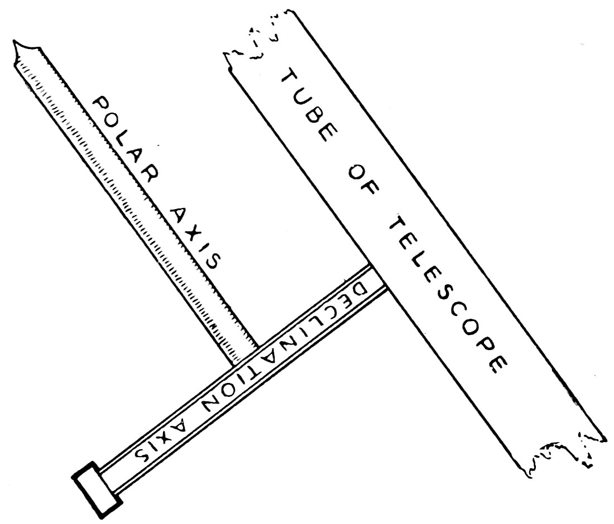
In order that a telescope may be directed at any point of the heavens at pleasure, there must be another axis, at right angles to the polar axis. This is called the declination axis. It passes through a sheath fixed to the upper end of the polar axis so as to form a cross like the letter T. By turning the telescope on the two axes, it can be pointed wherever we choose.
Owing to the polar axis being parallel to that of the earth, its inclination to the horizon is equal to the latitude of the place. In our latitudes, especially in the southern portions of the United States, it will be nearer horizontal than vertical. But in the observatories of northern Europe, it is more nearly vertical.
It will be seen that the contrivance we have described does not solve the problem of bringing a star into the field of view of the telescope, or as we commonly say, of finding it. We might grope round for minutes or even hours without succeeding in this. There are two processes by which a star may be found:
Every telescope for astronomical purposes is supplied with a smaller telescope fastened to the lower end of its tube, and called the finder. This finder is of low magnifying power, and therefore has a large field of view. By sighting along the outside of it, the observer, if he can see the star, can point the finder at it so nearly that it wdll be in the field of view of the latter. Having found it there, he moves the telescope so that the object shall be seen in the centre of the field. Having brought it there, it is in the field of view of the main telescope.
But most of the objects which the astronomer has to observe are totally invisible to the naked eye. He must, therefore, have a system by which a telescope can be pointed at a star, without any attempt on his part to see the latter. This is clone by graduated circles, one of which is attached to each axis. One of these circles has degrees and fractions of a degree marked upon it, so as to show the declination of that point in the heavens at which the telescope is pointed. The other, attached to the polar axis, and called the hour circle, is divided into twenty-four hours, and these again into sixty minutes each. When the astronomer wishes to find a star, he simply looks at the sidereal clock, subtracts the right ascension of the star from the sidereal time, and thus gets its "hour angle" at the moment, or its distance east or west of the meridian. He sets the declination circle at the declination of the star, that is, he turns the telescope until the degree on the circle seen through a magnifying aparatus is equal to the declination of the star; and then he turns the instrument on the polar axis until the hour circle reads its hour angle. Then, starting his clockwork, he has only to look into the telescope and there is the object.
If all this seems a complicated operation to the reader, he has only to visit an observatory and see how simply it is all done. He may thus in a few minutes gain a practical idea of sidereal time, hour angle, declination, etc., which will make the whole subject much clearer than any mere description.
Let us return to some interesting matters, mostly historical, connected with the making of telescopes. The great difficulty, which requires special native skill of the rarest kind, is, as we have already intimated, that of constructing the object-glass. The slightest deviation from the proper form—a defect consisting in some part of the object-glass being too thin by a hundred thousandth part of an inch—would spoil the image.
The skill of the optician who figures the glass, that is to say, who polishes it into the proper shape, is by no means all that is required. The making of large disks of glass of the necessary uniformity and purity is a practical problem of equal difficulty. Any deviation from perfect uniformity in the glass will be as injurious to its performance as a defect in its figure.
Footnote: It is frequently proposed by persons not acquainted with the delicate points of the problem to make a telescope of large size by putting together different pieces of glass, each of the proper shape, to form a lens. The idea, ingenious though it looks, is thoroughly impracticable, for the simple reason that it is impossible to make two pieces of glass of exactly the same refracting power.
A century ago it was found especially difficult to make flint glass of the necessary uniformity. This substance contains a considerable amount of lead, which, during the process of melting the glass, would sink toward the bottom of the pot, thus making the bottom portion of greater refracting power than the upper portion. The result was that, at that time, a telescope of four or five inches aperture was considered of great size. Quite early in the century, Guinand, a Swiss, found a process by which larger disks of flint glass could be made. He professed to have some secret process of doing this, but there is some reason to believe that his secret consisted only in the constant and vigorous stirring of the melted glass while it was being fused in the pot. However this may have been, he succeeded in making disks of larger and larger size.
To utilize these disks required an optician of corresponding skill to grind and polish them into proper shape. Such an artist was found in the person of Fraunhofer, of Munich, who, about 1820, made telescopes as large as nine inches aperture. He did not stop here, but, about 1840, succeeded in making two objectives, each of fourteen German inches, or about fifteen English inches in diameter. These, far exceeding any before made, were at the time regarded as marvellous. One of these instruments was acquired by the Pulkova Observatory in Russia; the other was acquired by the Harvard Observatory at Cambridge, Mass. The latter, after a lapse of more than half a century, is still in efficient use.
After Fraunhofer's death it was doubtful whether his skill had died with him, or had passed to a successor. The latter appeared where none would have thought of looking for him, in the person of an obscure portrait painter of Cambridgeport, Mass., named Alvan Clark. The fact that such a man, with scarcely the elements of technical education and without training in the use of optical instruments, should have done what he did, illustrates in a striking way what an important element native talent is in such a case. He seemed to have an intuitive conception of the nature of the problem, coupled with extraordinary acuteness of vision in solving it. Moved by that irrepressible impulse which is a mark of genius, he purchased in Europe the rough disks of optical glass necessary to make small telescopes. Having succeeded in making one of four inches aperture to his satisfaction, the problem was to make his skill known to astronomers. I regret to say that he found this a very difficult part of his task. The director of the Harvard Observatory would not believe that Mr. Clark could make a really good telescope. When the optician took his first instrument up to the observatory to be tested, the astronomer called his attention to the fact that it showed a little tail attached to the star, which, of course, had no real existence, and was supposed to arise from a serious defect in the figure of the glass. Mr. Clark saw it, but was sure it had not been there before. He could not explain it at the time, but afterwards found that it was caused by the unequal temperature of the air in the tube of the telescope when it was exposed under the sky at night.
Unable to secure any effective recognition at home, he determined to try abroad. He made a larger instrument, scanned the heavens with it and discovered several close and difficult double stars. He wrote out descriptions of these objects and sent them to Rev. W. R. Dawes, an amateur astronomer in England, devoted to this branch of the science. Mr. Dawes was a lovely character. He looked at the objects described by Clark and found great difficulty in making them out. Yet the descriptions were so accurate that it was evident to him that Mr. Clark's instrument must be of the highest class. He wrote asking him to look at some other objects and describe them. When the description was received it was found to be exact. No doubt could remain. The result was a further correspondence, the purchase by Mr. Dawes of the largest and best instrument that Mr. Clark could then make, and a friendship which continued as long as Mr. Dawes lived.
Mr. Clark now secured recognition in his own country and became ambitious to make the largest refracting telescope that had ever been known. This was one of eighteen inches diameter, which was completed about I860 for the University of Mississippi. While testing it at his workshop, a discovery of a most interesting character was made with it by Mr. George B. Clark, the son. This was a companion of Sirius, which had been known to exist by its attraction on Sirius, but had never been seen by human eye. The breaking out of the Civil War prevented the University of Mississippi from taking the telescope, and the latter was acquired by citizens of Chicago. It is now mounted at the Northwestern University in Evanston, Ill.
The making of disks of glass of larger and larger size was continued by the great glass works of Chance & Company, in England. But they found the work too delicate and too troublesome, and allowed it to pass into the hands of Feil of Paris, son-in-law of Guinand. With the glass supplied by these two parties, Mr. Clark made larger and larger telescopes. First was the twenty-six-inch telescope for the Naval Observatory at Washington and a similar one for the University of Virginia. Then followed a still larger instrument, thirty inches in diameter, for the Observatory of Pulkova, Russia. Next was completed the thirty-six-inch instrument of the Lick Observatory, which has done such splendid work.
After the death of Feil, the business was taken up by Mantois, who made optical glass of a purity and uniformity that no one before him had ever approached. He furnished the disks with which the Clarks figured the objective for the Yerkes telescope of the University of Chicago. This is about forty inches in diameter, and is the largest refracting telescope now in actual use for astronomical purposes.
Our readers have doubtless been interested in the great telescope of the Paris Exposition of 1900, which is yet larger than that of Chicago, being of forty-seven inches aperture. This instrument is of such immense size that it cannot be mounted and pointed at the heavens in the usual way. It is therefore fixed in a horizontal, north and south position, and the rays of the object to be observed are reflected into it by an immense plane mirror. The question whether this contrivance has been successful with so large an instrument is one that is not yet settled with astronomical precision. Nothing has yet been done with this instrument, which, it is feared, is so imperfect in make as to serve no better purpose than that of a toy.
The engineering problem of mounting a great telescope is by no means a simple one. It was one in which Mr. Clark was less successful than in the construction of his object-glasses. In the case of the later telescopes the mountings of the great instruments were made by other parties. That of the Pulkova telescope was made by the Repsolds of Hamburg, the most noted makers of fine astronomical instruments in Europe. The Lick and Chicago telescopes were mounted by Warner & Swazey, of Cleveland, Ohio, who are gaining the highest reputation in this class of work. In the case of the Chicago telescope, arrangements were devised by them which surpass all ever before thought of. The observer has only to touch electric buttons to have all the work of pointing and moving the telescope performed by electricity.
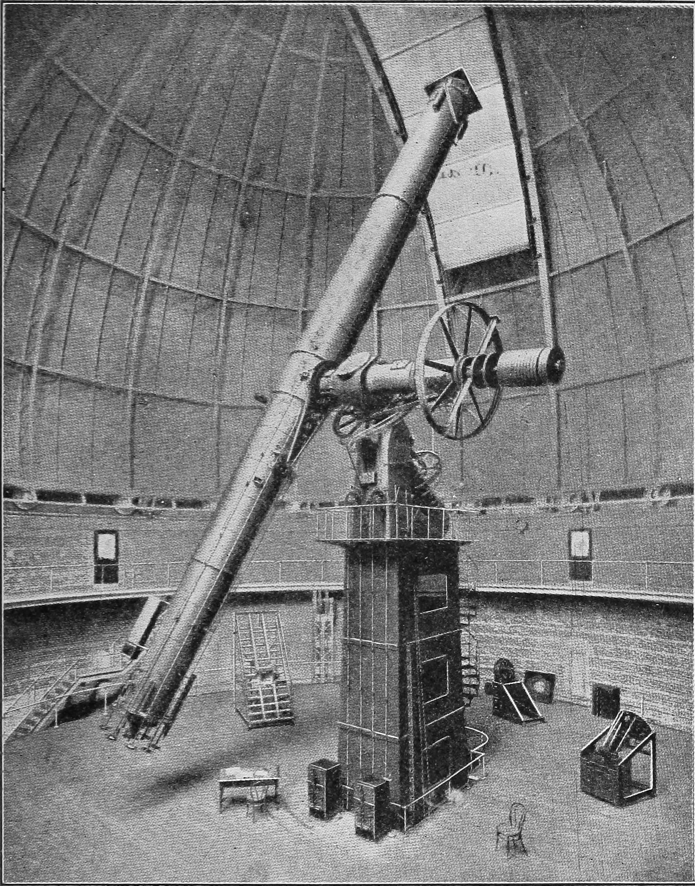
Although the refracting telescope is that in most general use, there is another form of instrument of radically different construction. Its main feature is that the functions of the object-glass are performed by a slightly concave mirror. That such a mirror reflects parallel rays falling upon it to a focus, is doubtless well known to our readers. The focus is situated about half-way between the mirror and its centre of curvature.
This form of instrument has an enormous advantage in its freedom from the "secondary aberration" which we have already described as inherent in the refracting telescope. Another advantage which it possesses is that it can be made of larger dimensions than the other. The extreme limit so far reached in the refractor, as we have already stated, is four feet; but the forty-inch aperture of the Yerkes telescope is, up to the present time, the limit in actual use for astronomical research. But, more than half a century ago. Lord Rosse constructed his great reflector of six feet diameter. Judging by its size alone, this instrument ought to give several times more light, and therefore show far minuter stars, than any refracting telescope yet made. But, for some reason, its performance—and, indeed, that of reflectors generally—has not corresponded to the size.
The practical difficulties in using a reflector are several in number. The first and most obvious one is that the rays are reflected back in the direction from which they came. To see the image the observer must look into the mirror as it were. If he does this directly, his head and shoulders will cut off the light that falls on at least the central regions of the mirror. Some contrivance for reflecting this light away is therefore necessary. Two ways of doing this are in use. In what is known as the Cassegranian reflector, a smaller, slightly convex mirror is interposed between the focus and the principal mirror. An opening is made in the centre of the latter, through which the rays are reflected back by the smaller mirror. The curvature and positions of the two are so adjusted that the image of the distant object shall be formed in this opening. The only telescope of this kind in actual use is the great Melbourne reflector, of four feet diameter, made by Sir Howard Grubb, of Dublin.
The contrivance most in use was designed by Sir Isaac Newton. It consists of a diagonal reflector, which may be a mere glass prism, placed just inside the focus. Its reflecting surface makes an angle of forty-five degrees with the axis of the telescope, and therefore reflects the rays laterally to the side of the tube. Here they are observed with an ordinary eyepiece. This instrument is known as the Newtonian reflector.
It is remarkable that, notwithstanding the immense improvement in the mechanical processes necessary in constructing and mounting a reflecting telescope, no attempt has ever been made to even equal Lord Rosse's great instrument in dimensions. The largest mirrors so far successfully made and used have been about four feet in diameter. About fifty years ago, Mr. Lassell made one of this size, with which he discovered two new satellites of Uranus. More recently, Mr. A. A. Common, F.R.S., has constructed a mirror of the same size. This has been used in taking photographs of nebulæ and other faint objects, for which this form of telescope seems well designed.
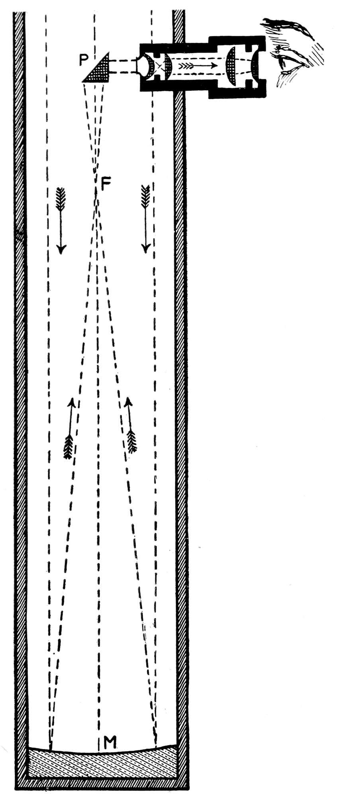
The great difficulty in using a large mirror is that it bends under the influence of its own weight. It would seem that when the diameter exceeds four feet, no way of completely avoiding this difficulty has yet been put into successful use. A mirror of five feet diameter is, however, being made at the Yerkes Observatory by Mr. Ritchie, in which, it is hoped, all the difficulties will be surmounted.
In the instruments of Lord Rosse and Mr. Lassell, the mirror was made of an alloy, known as speculum metal. Recently, however, the use of speculum metal has been superseded by another arrangement. The concave mirror is made of a large disk of glass, which is ground and polished into nearly spherical form, or to speak more accurately, a parabolic form, because the latter is necessary to bring all the rays to one focus. A thin coating of silver is then deposited on the surface of the glass, which is susceptible of a high polish, and reflects more light than polished metal.
One of the greatest advances in practical astronomy in our time has been brought about by photographing the heavenly bodies. This is so simple a process that the slowness of its introduction may seem curious. Back in the early '40's, Professor Draper, of New York, the well-known chemist, succeeded in making a daguerreotype of the moon. When the system of photography by our present process on a glass negative was invented, Professor Bond, of the Harvard Observatory, and Mr. L. M. Rutherford, an eminent astronomer of New York, both began to apply the art to the moon and stars. Mr. Rutherford brought his work to such perfection that his photographs of the Pleiades and other clusters of stars are still of great value in astronomy.
A photograph of the stars can be made by an ordinary camera if we only mount it like an equatorial telescope so that it shall follow the star in its diurnal motion. A very few minutes exposure will suffice to take a picture of more stars than can be seen by the naked eye; in fact, with a large camera, this will not require a minute. But what is generally used by the astronomer is a photographic telescope. Any ordinary telescope will serve the purpose, but in order to get the best results the object-glass of the telescope must be especially made to bring to a focus those rays of light to which the photographic film is most sensitive. So rapid has been the progress during the past few years that the greater part of the astronomical work of the future seems likely to be done by photography. The great advantage of the method is that when a picture either of some heavenly body or of the stars in the sky is taken, it can be studied and measured at leisure with all the care the astronomer chooses to bestow upon it, while the observation in the heavens is nearly always more or less hurried, and made difficult by the diurnal motion of the star.
Formerly the spots on the sun were investigated by watching that luminary through the telescope, recording the number of spots, and measuring their position on the solar disk. Now, at the Greenwich Observatory and elsewhere, a photograph of the sun is taken almost every day, and the position of the spots is found by measuring the photograph. Thus a study of the sun and the changes going on on its surface is kept up from year to year.
Formerly the astronomer studied the physical constitution of a comet by making a drawing of it. This was a rather uncertain process, and as a general rule no two men would quite agree in the minute details. Now the comet is photographed and a study is made upon the negative. The same remark applies to nebulae. Drawings of them are no longer made—only photographs which show a great deal more than any drawing will.
The spectroscope is an instrument for analysing light. It is a much more recent instrument than the telescope, having first been applied to astronomical observation about 1864. To convey an intelligent idea of its use we must say something about the heat and light radiated by the heavenly bodies.
We know that the sun, a gas light, or other bright body gives us heat as well as light. A very simple observation will show that the rays of heat proceed in straight lines like those of light, and that they can pass through air and other transparent bodies without warming them, just as light does. If we make a large fire on the hearth in a perfectly cold room, we shall feel the heat on our faces although the air may be frosty. A striking experiment is that of making a lens out of ice and using it as a burning glass. The rays of the sun passing through the ice may be concentrated so as to burn the hand, and that without the ice melting.
It was formerly supposed that heat and light were two distinct agents; now it is known that such is not the case. As emitted by a hot body both may be called by the general name of radiance. All radiance, when it falls on a surface, produces heat, just as the blaze of the fire produces heat on the walls of a room. But not all radiance affects the optic nerve of the eye so as to produce a sensation of light and enable us to see bodies.
It is now known that radiance consists of something in the nature of waves in an ethereal medium which fills all space, even to the most distant star. These waves are exceedingly short. To form an idea of their length we must measure by the micron, which is one thousandth of a millimetre. Those which produce the sensation of light on the optic nerve mostly range between four and seven tenths of a micron. This allows between forty and eighty thousand waves to the inch. We represent these waves by the little wave line in the figure. The distance between the dotted lines is the wave lengths. The peculiar feature of the radiance emitted by the sun, or any other body that is not transparent, is that it is not all of the same wave length, but of a very wide range of wave lengths all mixed together. We must imagine that between the rays which we represent in the figure there are an infinity of others, all varying in their wave lengths. In this respect radiance is like the waves of the ocean, which range in length from several hundred yards to a few inches, all piled upon each other.
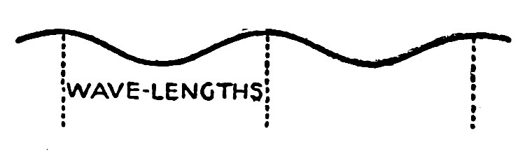
When the radiance passes through a glass prism it is refracted from its course. Different wave lengths are refracted differently, but waves of the same length are always refracted by the same amount. This is shown by the familiar experiment of forming a spectrum of the sun with a triangular prism. Arranging the light to be thrown on a screen, we see red light at the bottom then yellow above it, then in succession, green, blue, and violet. This arrangement of colours on a surface is called a spectrum. The colour of the light in the spectrum depends on the wave length. If the wave length is greater than about seventy-five one-hundredths of a micron, that is, one forty-four-thousandth of an inch, the eye does not see it, and, for us, it passes simply as heat. From this length to one fifty-thousandth it looks red, when a little shorter it looks scarlet, then yellow, and so on. Shorter than forty-three one-hundredths of a micron it is difficult to see it at all. But the violet light affects the photographic plate even more strongly than the light which looks brightest to the eye. The light which is most easily photographed is the blue and violet, and as we go toward the red the photographic effect diminishes.
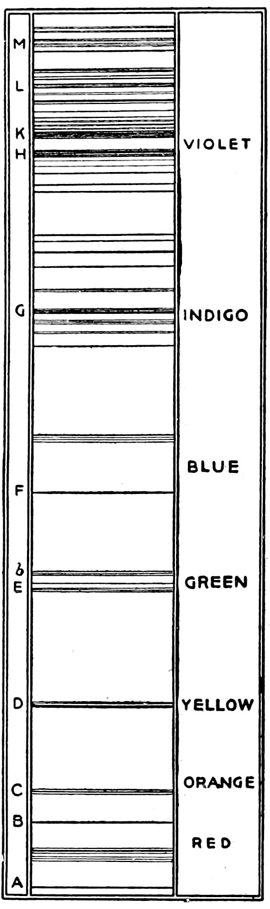
All bodies emit radiance, but, at ordinary temperatures, the wave lengths of this radiance are too long to be visible to the eye. Not until we heat a body red hot does it emit radiance of wave length short enough to form light. As we make it hotter it still emits more and more waves of long wave lengths, and also waves of shorter and shorter wave lengths. Thus as we heat up a piece of iron, it appears first as red hot, and afterward as white hot.
The possibility of reaching conclusions about the constitution of a hot body from the light which it emits arises from the fact that different bodies emit light of different wave lengths. If the body is solid, it emits light of all wave lengths, and we cannot tell much about it. But if it is a mass of transparent gas, it only emits light of certain wave lengths, depending on the nature of the gas.
The easiest way of making a gas emit its peculiar light is by passing an electric spark or current through it. Then, if we analyse the light produced by the spark with a prism, we find that the spectrum is composed of one or more bright lines, varying in position according to the nature of the gas. Thus we have a spectrum of hydrogen, another of oxygen, and others of almost all the bodies which we know. Solid bodies, including all the metals, can be made to give their spectrum by being heated so intensely by the electric spark that a small quantity of the body is changed into a gas. Thus we may even form a spectrum of iron, which the practised observer can immediately detect as iron by the position and arrangement of the lines of the spectrum.
The fundamental principle of spectrum analysis is that if the light of an incandescent body passes through a gas which is cooler than the body, the latter will cull out and absorb from the light those wave lengths which it would emit if it were itself incandescent. The result is that the spectrum from the solid body will be seen crossed by certain dark lines, depending on the nature of the gas through which the light has passed. Thus, if we observe an electric light through a prism in its immediate neighbourhood, the spectrum will be unbroken from one end to the other. But if the light is at a great distance, we shall see it crossed by a great number of dark lines. These lines are produced by the air through which the light has passed culling out the light which has certain wave lengths. It is of interest that the aqueous vapour in the air is the most powerful agent in this, and culls out great groups of lines, by which its presence in the air can be immediately detected. The darkest of the lines found in the spectrum of the sun are designated by the letters A, B, C, etc., as shown in the preceding figure.
We may describe the spectroscope in the most comprehensive way by saying that it is an instrument for studying the spectra of bodies, whether in the heavens or on the earth.
The studies of the heavenly bodies with the spectroscope have two objects. One is to determine the nature of the bodies; the other their motions to or from us. The possibility of the latter is one of the most wonderful achievements of modern science. If a star is coming toward us, the wave length of the light which it emits is slightly shorter in consequence of the motion; if it is going away from us, it is longer. Thus, by measuring the positions of its lines in the spectrum, it is possible to determine whether a star is approaching us or moving away from us.
In recent years the studies of the spectra of stars have been made almost entirely by photography. It is found that, as in other cases, the sensitive plates now used in that art will take impressions of objects which the eye cannot see in the telescope. So the astronomer photographs the spectrum of a star, which will show all the lines he can see with the naked eye, and perhaps a great many more. The positions of these lines are measured and studied, and the astronomer's conclusions are drawn from these studies.
It is commonly supposed that the principal work of an astronomer is to study the stars as he sees them in his telescope. This is true only in the sense that a telescope is a necessary part of almost every astronomical instrument. But the mere studying of a star with a telescope is a very small part of the astronomer's work. The most important practical use of astronomy to our race consists in the determination of the latitudes and longitudes of points on the earth's surface, so that we may know where towns and cities are situated and be able to make a map of a state or country. This requires a knowledge of the exact positions of the stars in the heavens, that is to say, of their right ascension and declination. We have shown in a former chapter how these quantities correspond to longitude and latitude on the earth's surface. Through that correspondence an observer may determine his latitude by the star's declination and his longitude by its right ascension, combined with a knowledge of the sidereal time at a place of known longitude.
The figures and dimensions of the planets, the motions of the satellites, the orbits of planets and comets, the structure of nebulae and clusters of stars—all these offer fields of astronomical investigation to which there is no end, and in order to make these investigations other instruments besides the telescope are necessary.
The problem which demands most attention from the working astronomer in an observatory is the determination of the positions of the heavenly bodies. The principal instrument for making these determinations is the meridian circle, called also a meridian instrument. This consists of a telescope supported on a horizontal east and west axis, at right angles to its length, so that its line of sight can move only along the meridian. If it points exactly south you can turn it on the axis until the line of sight passes through the zenith, and still farther until it passes through the pole on the north horizon; but you cannot turn it east or west. This might seem to restrict its usefulness, but it is on this restriction of its motion that its usefulness depends. The great value of this instrument is that it enables us to determine the right ascension of a star without taking any measurement but one of time. In a former chapter we described sidereal time, the units of which are slightly shorter than those of our ordinary time, so that a sidereal clock gains about two hours every month on an ordinary clock. The sidereal time at which a star crosses the meridian is the same as its right ascension; the problem of determining the latter, therefore, is the simplest in the world. We start our sidereal clock, set it on the exact sidereal time, point the telescope of the meridian circle to various stars as they are about to cross the meridian, and note the exact moment at which each star passes. In the instrument the meridian is shown by a very fine fibre or spider’s web fixed in the focus of the telescope. The moment when the image of the star as seen in the telescope crosses this spider line is that of passing the meridian. The time by the sidereal clock then shows the star’s right ascension. If the clock could be set with perfect exactness and the instrument revolved exactly in the plane of the meridian, right ascensions would be determined in the very simple way we have described.
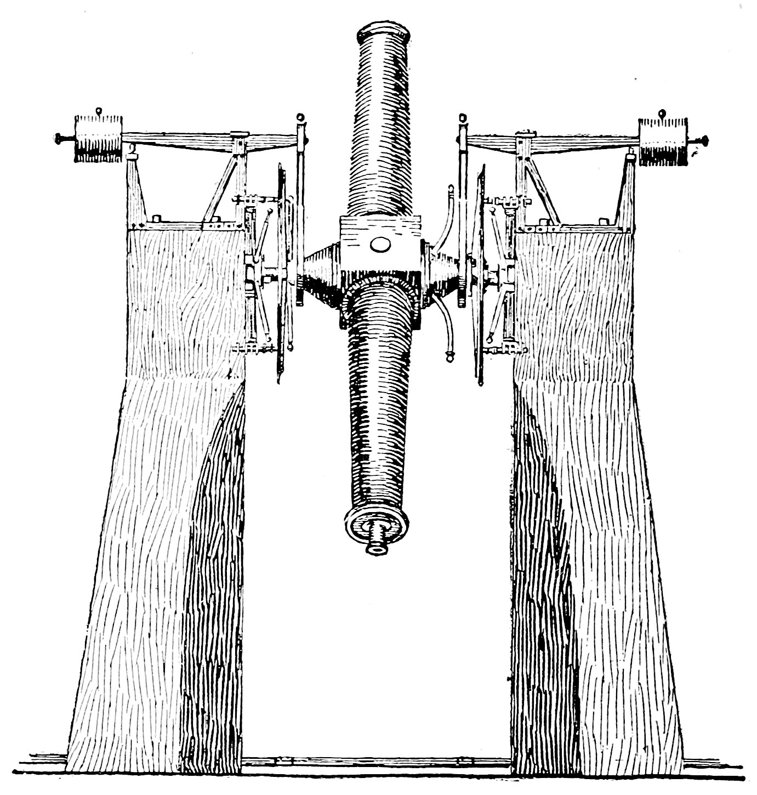
It unfortunately happens, however, that no clock can be set with such exactness as to satisfy the requirements of the astronomer, who wants to know the time down to the tenth or even to the hundredth of a second. Moreover, no meridian circle can have its axis set so exactly east and west that the instrument shall not deviate a little from the meridian. The astronomer must therefore make allowances for the error of his clock and for the deviation of his instrument; and these require much careful observation and calculation. Even when he does the best he can, a single observation will always be liable to little errors which he wishes to make as small as possible. He does this by repeatedly determining the position of every star which he puts upon his list. He generally has to be satisfied with three or four observations on the great mass of the stars, but on the more important stars he makes them by scores or hundreds.
To determine the declination of a star, a graduated circle is necessary. This consists of a brass or steel circle, much like a carriage wheel, of which the axis is the same as that on which the telescope of the meridian instrument turns. The circle is firmly attached to the axis so that it must turn with the telescope as the latter sweeps along the celestial meridian. The graduations of the circle consist of very fine marks or lines all round its circumference. The latter being divided into three hundred and sixty degrees, every degree is marked by such a line. Between these it is common to mark thirty intermediate lines, which are therefore two minutes apart. Attached to one or both the stone piers which support the instrument are four microscopes, so fixed that the graduations on the circle are seen through them. When the instrument is turned on its axis, all these graduations pass successively under each microscope, so that they can be seen by the observer looking through the latter. The position of the star is determined by measures with the microscope on the graduation which happens to be under it when the telescope is pointed at a star.
The equatorial telescope and the meridian circle are the two principal instruments in the astronomical outfit of an observatory. Many other instruments are more or less in use for special purposes, but they are not of great interest, save to one who is making a special study of astronomy and who must therefore refer to books specially written for the professional student of the subject.
The precision with which a practised observer can note the time of transit of a star over the thread of his instrument is remarkable. One method of doing this consists in listening to and counting the beats of the clock as the star approaches and crosses the thread. He watches the exact position of the star at the beat before the transit, and again at the beat following. By comparing in his mind the opposite distances of the star from the thread at the two clock beats, he estimates the number of tenths of the second at which the transit took place, and records the time in his notebook.
This method is now superseded in most observatories by that of registration on a chronograph. This instrument consists of a revolving cylinder, covered with paper, having a pen-point resting upon it, so that, as the cylinder revolves, the pen leaves a trace on the paper. The pen is so connected with an electric current passing through the clock, and through a key held by the observer, that every beat of the clock and every pressure of the key by the observer makes a notch in the trace left by the pen. When the observer sees that a star has reached the thread of his instrument he presses the key, and the position of the notch thus made in the pen-trace between two notches made by the clock gives the moment at which the key was pressed.
The astronomer's clock must be of the highest attainable perfection, running for a whole day or more without a deviation of one tenth of a second. With a common house clock, the change in the length of the pendulum produced by changes of temperature between the day and night would cause deviations of several seconds. Hence in the astronomical clock these changes must be neutralised. This is done by making the pendulum of such a combination of different materials that the unequal expansions of the latter shall neutralise each other. The most common combination is that of a steel rod bearing at its lower end a steel or glass jar of quicksilver, which serves as the bob of the pendulum. Then, when the temperature rises, the upward expansion of the quicksilver compensates the downward expansion of the steel.
We have shown how this comparatively small family of bodies, on one of which we dwell, forms as it were a little colony by itself. Small though it be when compared with the whole universe as a standard, it is for us the most important part of the universe. Before proceeding to a description of its various bodies in detail we must take a general view to show of what kind of bodies it is formed and how it is made up.
First of all we have the sun, the great shining central body, shedding warmth and light on all the others and keeping the whole system together by virtue of its powerful attraction.
Next we have the planets, which revolve round the sun in their regular orbits, and of which our earth is one. The word planet means wanderer, a term applied in ancient times because these bodies, instead of keeping their places among the fixed stars, seemed to wander about among them. The planets are divided into two quite distinct classes, termed major and minor.
The major planets are eight in number and are, next to the sun, the largest bodies of the system. For the most part their distances from the sun are arranged in a close approach to a certain regular order, ranging from nearly forty millions of miles in the case of Mercury, the nearest one, to three thousand millions in the case of Neptune. The latter is therefore seventy times as far from the sun as Mercury. Still wider is the range of their times of revolution. Mercury performs its circuit round the sun in less than three of our months—Neptune takes more than one hundred and sixty years for his long journey. It has not yet made half a revolution since its discovery in 1846.
The major planets are separated into two groups of four planets each, with quite a broad gap between the groups. The inner group is composed of much smaller planets than the outer one; all four together would not make a body one quarter the size of the smallest of the outer group.
In the gap between the two groups revolve the minor planets, or asteroids as they are commonly called. They are very small as compared with the major planets. So far as we know they are all situated in a quite wide belt ranging between a little more than the distance of the earth out to four times that distance. For the most part they are about three or four times as far from the sun as the earth is. They are also distinguished from the major planets by their indefinite number; some five hundred are now known, and new discoveries are continually being made at such a rate that no one can set any exact limit to them.
A third class of bodies in the solar system comprises the satellites, or moons. Several of the major planets have one or more of these small bodies revolving round them, and therefore accompanying them in their revolution around the sun. The two innermost planets, Mercury and Venus, have no satellites, so far as we yet know. In the case of the other planets their number ranges from one (our moon) to eight, which form the retinue of the planet Saturn. Each major planet, Mercury and Venus excepted, is therefore the centre of a system bearing a certain resemblance to the solar system. These systems are sometimes designated by names derived from those of their central bodies. Thus we have the Martian System, composed of Mars and its satellites; the Jovian System, composed of Jupiter and its five satellites; the Saturnian System, comprising the planet Saturn, its rings, and satellites.
A fourth class of bodies consists of the comets. These move round the sun in very eccentric orbits. We see them only on their approach to the sun, which, in the case of most of these bodies, occurs only at intervals of centuries, or even thousands of years. Even then a comet may fail to be seen unless under favourable conditions.
Besides the preceding bodies we have a countless number of meteoric particles revolving round the sun in regular orbits. These are probably related in some way to the comets. They are completely invisible except as they strike our atmosphere, when we see them as shooting stars.
The following is the arrangement of the planets in the order of their distance from the sun and with the number of satellites of each:
I. Inner Group of Major Planets: Mercury. Venus. Earth, with one satellite. Mars, with two satellites. II. Group of Minor Planets, or Asteroids. III. Outer Group of Major Planets: Jupiter, with five satellites. Saturn, with eight satellites. Uranus, with four satellites. Neptune, with one satellite.
Instead of taking up these bodies in the order of their distance from the sun, we shall, after describing the latter, pass over Mercury and Venus to consider the earth and moon. Then we shall return to the other planets and describe them in order.
In a description of the solar system its great central body is naturally the first to claim our attention. We see that the sun is a shining globe. The first questions to present themselves to us are about the size and distance of this globe. It is easy to state its size when we know its distance. We know by measurement, the angle subtended by the sun's diameter. If we draw two lines making this angle with each other, and continue them indefinitely through the celestial spaces, the diameter of the sun must be equal to the distance apart of the lines at the distance of the sun. The exact determination is a very simple problem of trigonometry. It will suffice at present to say that the measure of the apparent diameter of the sun, or the angle which it subtends to our eye, is thirty-two minutes, making this angle such that the distance of the sun is about 107.5 times its diameter in miles. If, then, we know the distance of the sun, we have only to divide it by 107.5 to get the sun's diameter.
The various methods of determining the distance of the sun will be described in our chapter stating how distances in the heavens are measured. The result of all the determinations is that the distance is very nearly ninety-three million miles, perhaps one or two hundred thousand miles more. Taking the round number, and dividing by 107.5, we find the diameter to be about 865,000 miles. This is about one hundred and ten times the diameter of the earth. It follows that the volume or bulk of the sun is more than one million three hundred thousand times that of the earth.
The sun's importance to us arises from its being our great source of heat and light. Were these withdrawn, not only would the world be enveloped in unending night, but, in the course of a short time, in eternal frost. We all know that during a clear night the surface of the earth grows colder through the radiation into space of the heat received from the sun during the day. Without our daily supply, the loss of heat would go on until the cold around us would far exceed that which we now experience in the polar regions. Vegetation would be impossible. The oceans would freeze over, and all life on the earth would soon be extinct.
The surface of the sun, which is all we can see of it, is called the photosphere. This term is used to distinguish the visible surface from the vast invisible interior of the sun. To the naked eye, the photosphere looks entirely uniform. But through a telescope we see that the whole surface has a mottled appearance, which has been aptly compared to that of a plate of rice soup. Examination under the best conditions shows that this appearance is due to minute and very irregular grains which are scattered all over the photosphere.
When we carefully compare the brightness of different regions of the photosphere, we find that the apparent centre of the disk is brighter than the edge. The difference can be seen even without a telescope, if we look at the sun through a dark glass, or when it is setting in a dense haze. The falling off in the light is especially rapid as we approach the extreme edge of the disk, where it is little more than half as bright as at the centre. There is also a difference of colour, the light of the edge having a lurid appearance as compared with that of the centre.
All this shows that the light of the sun is absorbed by an atmosphere surrounding the sun. We readily see that, the sun being a globe, the light which we receive from the edge of its disk leaves it obliquely, while that from the centre leaves it perpendicularly. The more obliquely the light comes from the surface, the greater the thickness of the sun's atmosphere through which it must pass, and hence the greater the portion lost by the absorption of that atmosphere. The sun's atmosphere, like our own, absorbs the green and blue rays more than the red. For this reason the light has a redder tint when it comes from near the edge of the disk.
Careful observations show that the sun, like the planets, rotates on an axis passing through its centre. Using the same terms as in the case of the earth, we call the points in which the axis intersects the surface the poles of the sun, and the circle around it halfway between the poles the sun's equator. The period of rotation is about twenty-six days. As the distance around the sun is more than one hundred and ten times that round the earth, the speed of rotation must be more than four times that of the earth's rotation to make it complete the circuit in the time that it does. At the sun's equator the speed is more than a mile a second.
The most curious feature of this rotation is that it is completed in less time at the equator than at a distance on each side of the equator. Were the sun a solid body, like the earth, all its parts would have to rotate at the same time. Hence the sun is not a solid body, but must be either liquid or gaseous, at least at its surface.
The equator of the sun is inclined six degrees to the plane of the earth's orbit. Its direction is such that in our spring months the north pole is turned six degrees away from us and the central point of the apparent disk is about that amount south of the sun's equator. In our summer and autumn months this is reversed.
By the mean density of the sun we refer to the average specific gravity of the matter composing it, or the ratio of its weight to that of an equal volume of water. It is known that the density is only about one fourth that of the earth, and about four tenths greater than that of water. Stated with more exactness, the figures are:
Density of sun ∶ Density of earth = 0.2554.
Density of sun: Density of water =: 1.4115.
The mass or weight of the sun is about 334,000 times that of the earth.
The force of gravity at the sun's surface is 27 times that of the earth. If it were possible for a human being to be placed there, an ordinary man would weigh two tons, and be crushed by his own weight.
When the sun is carefully examined with a telescope, one or more seemingly dark spots will generally, though not always, be seen on its surface. These are, of course, carried around by the rotation of the sun, and it is by means of them that the time of rotation is most easily determined. If a spot appears at the centre of the disk it will, in six days, be carried to the western edge, and there disappear. At the end of about two weeks it will reappear at the eastern edge unless it has, in the meantime, died away, which is frequently the case.
The spots have a wide range in size. Some are very minute points, barely visible in a good telescope, while on rare occasions one is large enough to be seen with the naked eye through a dark glass. They frequently appear in groups, and a group may sometimes be made out with the naked eye as a minute patch when the individual spots cannot be seen.
When the air is steady, and a good-sized spot is carefully examined with a telescope, it will be seen to be composed of a dark central region or nucleus, surrounded by a shaded border. If all the conditions are favourable, this border will appear striated, like the edge of a thatched roof. The appearance is represented in the cut, which also shows the mottling of the photosphere.
The spots are of the most varied and irregular forms, frequently broken up in many ways. The shaded border. or the thatched lines which form it, frequently encroaches on the nucleus or may, in places, extend quite across it.
A most remarkable law connected with the spots, which has been established by nearly three centuries of observation, is that their frequency varies in a regular period of eleven years and about forty days. During a certain year no spots will be visible for about half of the time.
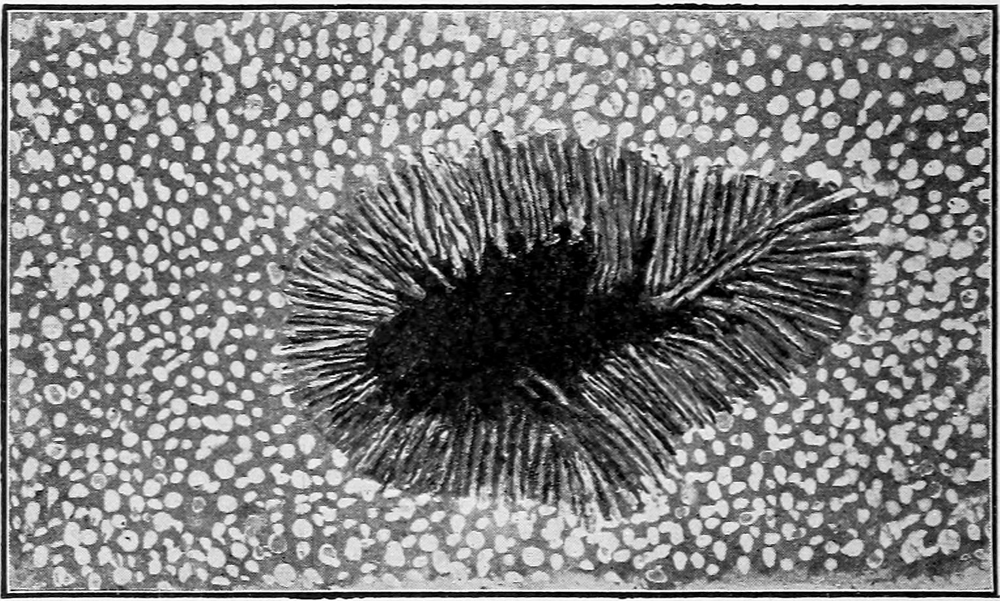
This was the case in 1889 and again in 1900. The year following a slightly greater number will show themselves; and they will increase year after year for about five years. Then the frequency will begin to diminish, year after year, until the cycle is completed, when it will again begin to increase. These mutations have been traced back to the time of Galileo, although it was not till about 1825 that they were found by Schwabe to take place in a regular period.
Years of greatest and least frequency, past and future are as follows:
Greatest | Least 1871 | 1878 1882 | 1889 1893 | 1900 1904 | 1911 1916 | 1922 1927 | 1933
Another noteworthy law connected with the sun's spots is that they are not found all over the sun; but only in certain regions of solar latitude. They are rather rare on the sun's equator, but become more frequent as we go north or south of the equator till we get to fifteen degrees of latitude, north or south. From this region to twenty degrees the frequency is greatest; then it falls off, so that beyond thirty degrees a spot is rarely seen. These regions are shown in the accompanying figure, where the shading is darker the more frequent the spots. If we made a white globe to represent the sun, and made a black dot on it for every spot during a number of years, the dotting would make the globe look as represented in the figure.
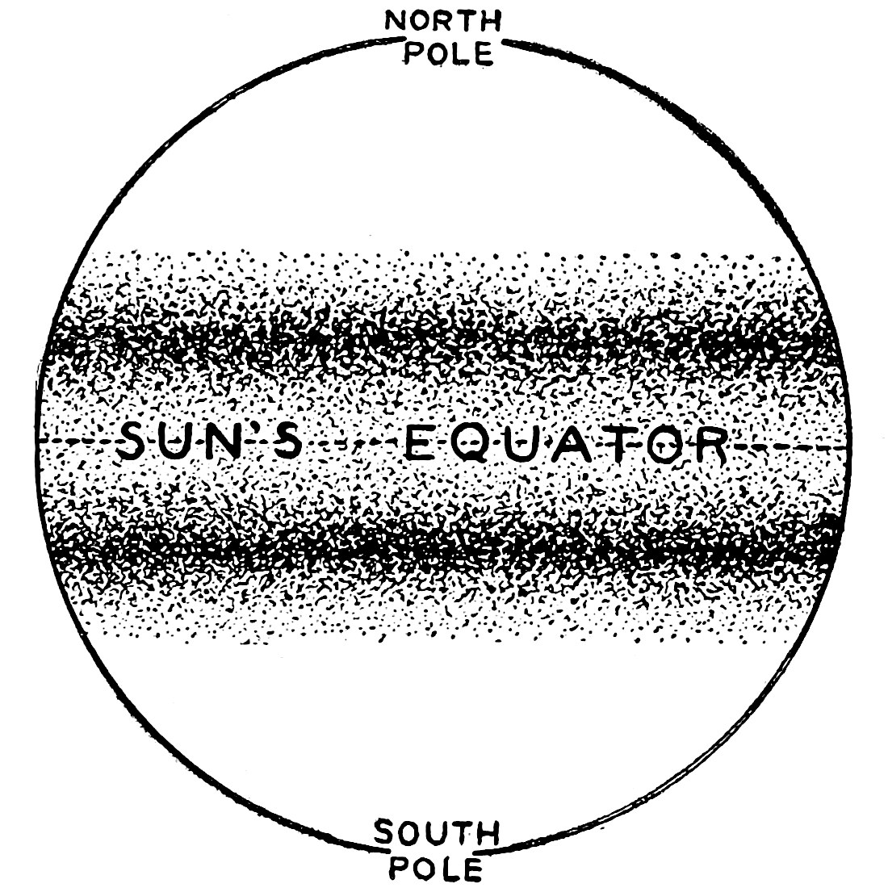
Collections of numerous small spots brighter than the photosphere in general are frequently seen on the sun. These are often seen in the neighbourhood of a spot, and occur most frequently in the regions of greater spot frequency, but are not entirely confined to those regions. They are, however, rare near the poles of the sun.
That the spots and faculæ proceed from some one general cause has been brought out by the spectro-heliograph, an instrument devised by Professor George E. Hale for taking photographs of the sun by the light of a single ray of the spectrum, that emitted by calcium, for example. The effect is the same as if we should look at the sun through a glass which would allow the rays of calcium vapour to pass, but would absorb all the others. We should then see the calcium light of the sun and no other.
When the sun is photographed by calcium light with this instrument, the result is wonderful. The sun-spot regions are now seen to be brighter than the others, and faculæ are found on every part of the sun. We thus learn that eruptions of gas, of which calcium is the best marked ingredient, are taking place all the time; but they are more numerous in the sun-spot zones than elsewhere. The sun-spots are therefore the effect of operations going on all the time, all over the sun, but giving rise to a spot only in the exceptional cases when they are very intense.
It was formerly supposed that the spots were openings or depressions in the photosphere, showing a darker region within. This view was based on the belief that, when a spot was near the edge of the sun's disk, the shaded border next the edge looked broader than the other. But this view is now abandoned. We cannot certainly say that a spot is either above or below the photosphere. We shall hereafter see that the latter is not a mere surface as it seems to us, but a shell or covering many miles, perhaps a hundred or more, in thickness. The spots doubtless belong to this shell, being cooler portions of it, but lying neither above nor below it.
The next remarkable feature of the sun to be described consists in the prominences. Our knowledge of these objects has an interesting history—which will be mentioned in describing eclipses of the sun. The spectroscope shows us that large masses of incandescent vapour burst forth from every part of the sun. They are of such extent that the earth, if immersed in them, would be as a grain of sand in the flame of a candle. They are thrown up with enormous velocity, sometimes hundreds of miles a second. Like the faculæ, they are more numerous in the sun-spot zones, but are not confined to those zones. The glare around the sun caused by the reflection of light by the air renders them entirely invisible to vision, even with the telescope, except when, during total eclipses of the sun, the glare is cut off by the intervention of the moon. They may then be seen, even with the naked eye, rising up as if from the black disk of the moon.
The prominences seem to be of two forms, the eruptive and the cloud-like. The first rise from the sun like immense sheets of flame; the latter seem to be at rest above it, like clouds floating in the air. But there is no air around the sun for these objects to float in, and we cannot certainly say what supports them. Very likely, however, it is a repulsive force of the sun's rays, which will be mentioned in a later chapter.
Spectrum analysis shows that these prominences are composed mostly of hydrogen gas, mixed with the vapours of calcium and magnesium. It is to the hydrogen that they owe their red colour. Continued study of the prominences shows them to be connected with a thin layer of gases which surrounds and rests upon the photosphere. This layer is called the chromosphere, from its deep red colour, similar to that of the prominences. As in the case of the latter, most of its light seems to be that of hydrogen; but it contains many other substances in seemingly varying proportions.
The last appendage of the sun to be considered is the corona. This is seen only during total eclipses as a soft effulgence surrounding the sun, and extending from it in long rays, sometimes exceeding the diameter of the sun in length. Its exact nature is still in doubt. It will be described in the chapter on eclipses.
Let us now recapitulate what makes up the sun as we see and know it.
We have first the vast interior of the globe which, of course, we can never see.
What we see when we look at the sun is the shining surface of this globe, the photosphere. It is not a real surface, but more likely a gaseous layer several hundred miles deep which we cannot distinguish from a surface. This layer is variegated by spots, and in or over it rise the faculæ.
On the top of the photosphere rests the layer of gases called the chromosphere, which can be observed at any time with a powerful spectroscope, but can be seen by direct vision only during total eclipses.
Through or from the red chromosphere are thrown up the equally red flames called the prominences.
Surrounding the whole is the corona.
Such is the sun as we see it. What can we say about what it really is? First, is it solid, liquid, or gaseous?
That it is not solid we have already shown by the law of rotation. It cannot be a liquid like molten metal, because it sends off from its surface such a flood of heat as would cool off and solidify molten metal in a very short time. For more than thirty years it has been understood that the interior of the sun must be a mass of gas, compressed to the density of a liquid by the enormous pressure of its superincumbent portions. But it was still supposed that the photosphere might be in the nature of a crust and the whole sun hke an immense bubble. This view, however, seems no longer tenable. It does not seem likely that there is any solid matter on the sun.
Attempts have sometimes been made to learn the temperature of the photosphere. It probably exceeds any that we can produce on earth, even that of the electric furnace, else how could calcium, the metallic base of lime, one of the most refractory of substances, exist there in a state of vapour? We all know that the air around us becomes cooler and rarer as we ascend above the surface of the earth, owing to the action of gravity and the consequent weight of the atmosphere, which gives rise to a constantly increasing pressure as we descend. Now, gravity at the sun is twenty-seven times as powerful as on the earth. Hence, going downward, temperature and pressure increase at a far more rapid rate on the sun than on the earth. Even in the photosphere the temperature is such that "the elements melt with fervent heat." And, as we go below the surface, the heat must increase by hundreds of degrees for every mile that we descend. The result is that in the interior the gases of the sun are subjected to two opposing forces which grow more and more intense. These are the expansive force of the heat and the compressing force of the gases above, produced by the enormous force of gravity of the sun.
The forces thus set in play merely in the outer portions of the sun's globe are simply inconceivable. Perhaps the explosion of the powder when a thirteen-inch cannon is fired is as striking an example of the force of ignited gases as we are familiar with. Now suppose every foot of space in a whole county covered with such cannon, all pointed upward and all being discharged at once. The result would compare with what is going on inside the photosphere about as a boy's popgun compares with the cannon.
Perhaps, from a practical point of view, the most comprehensive and important problem of science is: How is the sun's heat kept up? Before the laws of heat were fully apprehended this question was not supposed to offer any difficulties. Even to this day it is supposed by those not acquainted with the subject, that the heat which we receive from the sun may arise in some way from the passage of its rays through our atmosphere, and that, as a matter of fact, the sun may not radiate any actual heat at all—may not be an extremely hot body. But, modern science shows that heat cannot be produced except by the expenditure of some form of energy. The energy of the sun is necessarily limited in quantity and is continually being lost through radiation.
It is very easy to imagine the sun as being something like a white-hot cannon ball, which is cooling off by sending its heat in all directions, as such a ball does. We know by actual observation how much heat the sun sends to us. It may be expressed in the following way:
Imagine a shallow basin with a flat bottom, and a depth of one centimetre, that is, about four tenths of an inch. Let the basin be filled with water, the latter then being one centimetre deep. Expose such a basin to the rays of the vertical sun. The heat which the sun will radiate to them will be sufficient to warm the water about three and a half or four degrees Centigrade, or not very far from seven degrees Fahrenheit, in one minute. It follows that if we suppose a thin spherical shell of water, one centimetre thick, of the same radius as the earth's orbit, and having the sun in its centre, that shell of water will be heated with the rapidity just mentioned. The heat which it receives will be the total amount radiated by the sun. We can thus define how much heat the sun loses every minute, day and year.
A very simple calculation will show that if the sun were of the nature of a white-hot ball it would cool off so rapidly that its heat could not last more than a few centuries. But it has in all probability lasted millions of years. Whence, then, comes the supply? The answer of modern science to this question is that the heat radiated from the sun is supplied by the contraction of size as heat is lost. We all know that in many cases when motion is destroyed heat is produced. When a cannon shot is fired at the armour plate of a ship of war, the mere stroke of the shot makes both plate and shot hot. The blacksmith can make iron hot by hammering it.
These facts have been generalized into the statement that whenever a body falls and is stopped in its fall by friction, or by a stroke of any sort, heat is produced. From the law governing the case, we know that the water of Niagara, after it strikes the bottom of the falls, must be about one quarter of a degree warmer than it was during the fall. We also know that a hot body contracts in volume when cooled. The contraction of a gaseous body, such as we believe the sun to be, is greater than that of a solid or liquid. The heat of the sun is radiated from streams of matter constantly rising from the interior, which radiate their heat when they reach the surface. Being cooled they fall back again, and the heat caused by this fall is what keeps the sun hot.
It may seem almost impossible that heat sufficient to last for millions of years could be generated in this way; but the known force of gravity at the surface of the sun enables us to make exact computations on the subject. It is thus found that in order to keep up the supply of heat it is only necessary that the diameter of the sun should contract about a mile in twenty-five years—or four miles in a century. This amount would not be perceptible until after thousands of years. Yet the process of contraction must come to an end some time. Therefore, if this view is correct, the life of the sun must have a limit. What its limit may be we cannot say with exactness, we only know that it is several millions of years, but not many millions.
The same theory implies that the sun was larger in former times than it is now, and must have been larger and larger every year that we go back into its history. There was a time when it must have been as large as the whole solar system. In this case it could have been nothing but a nebula. We thus have the theory that the sun and solar system have resulted from the contraction of a nebula—through millions of years. This view is familiarly known as the nebular hypothesis.
The question whether the nebular hypothesis is to be accepted as a proved result of science is one on which opinions differ. There are many facts which support it—such as the interior heat of the earth and the revolution and rotation of the planets all in the same direction. But cautious and conservative minds will want some further proof of the theory before they regard it as absolutely established. Even if we accept it, we still have open the question: How did the nebula itself originate, and how did it begin to contract? This brings us to the boundary where science can propound a question but cannot answer it.
The globe on which we live, being one of the planets, would be entitled to a place among the heavenly bodies even if it had no other claims on our attention. Insignificant though it is in size when compared with the great bodies of the universe, or even with the four giant planets of our system, it is the largest of the group to which it belongs. Of the rank which it might claim as the abode of man we need not speak.
What is the earth? We may describe it in the most comprehensive way as a globe of matter nearly eight thousand miles in diameter, bound together by the mutual gravitation of its parts. We all know that it is not exactly spherical, but bulges out very slightly at the equator. The problem of determining its exact shape and size is an extremely difficult one, and we cannot say that an entirely satisfactory result is yet reached. The difficulty is obvious enough. There is no way of measuring distances across the great oceans. The measurements are necessarily limited to such islands as are visible from the coasts of the continents or from each other. Of course, the measures cannot be extended to either pole. The size and shape must therefore be inferred from the measures across or along the continents. Owing to the importance of such work, the leading nations have from time to time entered into it. Quite recently our Coast and Geodetic Survey has completed the measurement of a line of triangles extending from the Atlantic to the Pacific Oceans. North and south measurements both on the Atlantic and Pacific coasts have been executed or are in progress. The English have from time to time made measures of the same sort in Africa, and the Russians and Germans on their respective territories. Nearly all these measures are now being combined in a work carried on by the International Geodetic Association, of which the geodetic authorities of the principal countries are members.
The latest conclusions on the subject may be summed up thus. We remark in the first place that by the figure of the earth geodetists do not mean the figure of the continents, but of the ocean level as it would be if canals admitting the water of the oceans were dug through the continents. The earth thus defined is approximately an ellipsoid, of which the smaller diameter is that through the poles, and which has about the following dimensions:
Polar diameter, 7,899.6 miles, or 12,713.0 kilometres.
Equatorial diameter, 7,926.6 miles, or 12,756.5 kilometres.
It will be seen that the equatorial diameter is twenty-seven miles or forty-three kilometres greater than the polar.
What we know of the earth by direct observation is confined almost entirely to its surface. The greatest depth to which man has ever been able to penetrate compares with the size of the globe only as the skin of an apple does to the body of the fruit itself.
I shall first invite the reader's attention to some facts about weight, pressure, and gravity in the earth. Let us consider a cubic foot of soil forming part of the outer surface of the earth. This upper cubic foot presses upon its bottom with its own weight, perhaps one hundred and fifty pounds. The cubic foot below it weighs an equal amount, and therefore presses on its bottom with a force equal to its own weight with the weight of the other foot added to it. This continual increase of pressure goes on as we descend. Every square foot in the earth's interior sustains a pressure equal to the weight of a column of the earth a foot square extending to the surface. Not many yards below the surface this pressure will be measured in tons; at the depth of a mile it may be thirty or forty tons; at the depth of one hundred miles, thousands of tons; continually increasing to the centre. Under this enormous pressure the matter composing the inner portion of the earth is compressed to the density of a metal. By a process which we will hereafter describe, the mean density of the earth is known to be five and one half times that of water, while the superficial density is only two or three times that of water.
One of the most remarkable facts about the earth is that the temperature continually increases as we penetrate below the surface in deep mines. The rate of increase is different in different latitudes and regions. The general average is one degree Fahrenheit in fifty or sixty feet.
The first question to suggest itself is, how far toward the earth's centre does this increase of temperature extend? The most that we can say is that it cannot be merely superficial, because, in that case, the exterior portions would have cooled off long ago, so that we should have no considerable increase of heat as we went down. The fact that the heat has been kept up during the whole of the earth's existence shows that it must still be very intense toward the centre, and that the rate of increase near the surface must go on for many miles into the interior.
At this rate the material of the earth would be red hot at a depth of ten or fifteen miles, while at one or two hundred miles the heat would be sufficient to melt all the substances which form the earth's crust. This fact suggested to geologists the idea that our globe is really a molten mass, like a mass of melted iron, covered by a cool crust a few miles thick, on which we dwell. The existence of volcanoes and the occurrence of earthquakes gave additional weight to this view, as did also other geological evidence, showing changes in the earth's surface which appeared to be the result of a liquid interior.
But in recent years the astronomer and physicist have collected evidence, which is as conclusive as such evidence can be, that the earth is solid from centre to surface, and even more rigid than a similar mass of steel. The subject was first developed most fully by Lord Kelvin, who showed that, if the earth were a fluid, surrounded by a crust, the action of the moon would not cause tides in the ocean, but would merely tend to stretch out the entire earth in the direction of the moon, leaving the relative positions of the crust and the water unchanged.
Equally conclusive is the curious phenomenon which we shall describe presently of the variation of latitudes on the earth's surface. Not only a globe of which the interior is soft, but even a globe no more rigid than steel could not rotate as the earth does.
How, then, are we to reconcile the enormous temperature and the solidity? There seems to be only one solution possible. The matter of the interior of the earth is kept solid by the enormous pressure. It is found experimentally that when masses of matter like the rocks of the earth are raised to the melting point, and then subjected to heavy pressure, the effect of the pressure is to make them solid again. Thus, as we increase the temperature we have only to increase the pressure also to keep the material of the earth solid. And thus it is that, as we descend into the earth, the increase of pressure more than keeps pace with the rise of temperature, and thus keeps the whole mass solid.
Another interesting question connected with the earth is that of its density, or specific gravity. We all know that a lump of lead is heavier than an equal lump of iron, and the latter heavier than an equal lump of wood. Is there any way of determining what a cubic foot of earth would weigh if taken out from a great depth of its vast interior? If there is, then we can determine what the actual weight of the whole earth is. The solution depends on the gravitation of matter.
Every child is familiar with gravitation from the time it begins to walk, but the profoundest philosopher knows nothing of its cause, and science has not discovered anything respecting it except a few general facts. The widest and most general of these facts, which may be said to include the whole subject, is Sir Isaac Newton's theory of gravitation. According to this theory, the mysterious force by which all bodies on the surface of the earth tend to fall toward its centre does not reside merely in the centre of the earth, but is due to an attraction exerted by every particle of matter composing our globe. Whether this was the case was at first an open question. Even so great a philosopher and physicist as Huyghens believed that the power resided in the earth's centre, and not in every particle, as Newton supposed. But the latter extended his theory yet farther by showing that every particle of matter in the universe, so far as we have yet ascertained, attracts every other particle with a force that diminishes as the square of the distance increases. This means that at twice the distance the attraction will be divided by four; at three times by nine; at four times by sixteen, and so on.
Granting this, it follows that all objects around us have their own gravitating power, and the question arises: Can we show this power by experiment, and measure its amount? The mathematical theory shows that globes should attract small bodies at their surfaces with a force proportioned to their diameter. A globe two feet in diameter, of the same specific gravity as the earth, should attract with a force one twenty-millionth of the earth's gravity.
In recent times several physicists have succeeded in measuring the attraction of globes of lead having a diameter of a foot, more or less. This measurement is the most delicate and difficult that has ever been made, and the accuracy which seems to have been reached would have been incredible a few years ago. The apparatus used is, in its principle, of the simplest kind. A very light horizontal rod is suspended at its centre by a thread of the finest and most flexible material that can be obtained. This rod is balanced by having a small ball attached to each end. What is measured is the attraction of the globes of lead upon these two balls. The former are placed in such a position as to unite their attraction in giving the rod a slight twisting motion in the horizontal plane. To appreciate the difficulties of the case, we must call to mind that the attraction may not amount to the ten-millionth part of the weight of the little balls. It would be difficult to find any object so light that its weight would not exceed this force. To compare the weight of a fly with it would be like comparing the weight of an ox with that of a dose of medicine. Not only the weight of a mosquito but even of its finest limb might exceed the quantity to be measured. If a mosquito were placed under a microscope an expert operator could cut off from one antenna a piece small enough to express the force measured.
Yet the determination of this force has been made with such precision that the results of the two latest investigators do not differ by a thousandth part. These were Professor Boys, F.R.S., of Oxford, England, and Dr. Karl Braun, S.J., of Marienschein, in Bohemia. They worked independently at the problem, meeting and overcoming innumerable difficulties one after another, getting greater and greater delicacy and precision in their apparatus, and finally published their results almost at the same time, the one in England, the other in Austria. The outcome of their experiments is that the mean density of the earth is slightly more than five and a half times that of water. This is a little less than the density of iron, but much more than that of any ordinary stone. As the mean density of the materials which compose the earth's crust is scarcely more than one half of this amount, it follows that near the centre the matter composing the earth must be compressed to a density not only far exceeding that of iron, but probably that of lead.
The attraction of mountains has been known for more than a hundred years. It was first demonstrated by Maskelyne about 1775 in the case of Blount Schehallion, in Scotland. In all mountain regions where very accurate surveys are made the attraction of mountains upon the plumb line is very evident.
We know that the earth rotates on an axis passing through the centre and intersecting the earth's surface at either pole. If we imagine ourselves standing exactly on a pole of the earth, with a flagstaff fastened in the ground, we should be carried round the flagstaff by the earth's rotation once in twenty-four hours. We should become aware of the motion by seeing the sun and stars apparently moving in the opposite direction in horizontal circles by virtue of the diurnal motion. Now, the great discovery of the variation of latitude is this: The point in which the axis of rotation intersects the surface is not fixed, but moves around in a somewhat variable and irregular curve, contained within a circle nearly sixty feet in diameter. That is to say, if standing at the north pole we should observe its position day by day, we should find it moving one, two, or three inches every day, describing in the course of time a curve around one central point, from which it would sometimes be farther away and sometimes nearer. It would make a complete revolution in this irregular way in about fourteen months.
Since we have never been at the pole, the question may arise: How is this known? The answer is that by astronomical observations we can, on any night, determine the exact angle between the plumb line at the place where we stand and the axis on which the earth is rotating on that particular day. Four or five stations for making these observations were established around the earth in 1900 by the International Geodetic Association. One of these stations is near Gaithersburg, Md., another is on the Pacific coast, a third is in Japan, and a fourth in Italy. Before these were established observations having the same object were made in various parts of Europe and America. The two most important stations in the latter region were those of Professor Rees of Columbia University, New York, and of Professor Doolittle, first at Lehigh, and later at the Flower Observatory, near Philadelphia.
The variation which we have described was originally demonstrated by S. C. Chandler, of Cambridge, in 1890 by means of a great mass of astronomical observations not made for this special purpose. Since then investigation has been going on with the view of determining the exact curve described. What has been shown thus far is that the variation is much wider some years than others, being quite considerable in 1891, and very small in 1894. It appears that in the course of seven years there will be one in which the pole describes the greater part of a comparatively wide circle, while three or four years later it will for several months scarcely move from its central position.
If the earth were composed of a fluid, or even of a substance which would bend no more than the hardest steel, such a motion of the axis as this would be impossible. Our globe must therefore, in the general average, be more rigid than steel.
The atmosphere is astronomically, as well as physically, a most important appendage of the earth. Necessary though it is to our life it constitutes one of the greatest obstructions with which the astronomer has to deal. It absorbs more or less of all the light that passes through it, and thus slightly changes the colour of the heavenly objects as we see them, and renders them somewhat dimmer, even in the clearest sky. It also refracts the light passing through it, causing it to describe a slightly curved line, concave toward the earth, instead of passing straight to the astronomer's eye. The result of this is that the stars appear slightly higher above the horizon than they actually are. The light coming directly down from a star in the zenith suffers no refraction. The latter increases as the star is farther from the zenith, but even forty-five degrees away it is only one minute of arc, about the smallest amount that the unaided eye can plainly perceive; yet this is a very important quantity to the astronomer. The nearer the object is to the horizon the greater the rate at which the refraction increases; twenty-eight degrees above the horizon it is about twice as great as at forty-five degrees; at the horizon it is more than one half a degree, that is more than the whole diameter of the sun or moon. The result is that when we see the sun just about to touch the horizon at sunset or sunrise its whole body is in reality below the horizon. We see it only in consequence of the refraction of its light. Another result of the rapid increase near the horizon is that, in this position, the sun looks decidedly flattened to the eye, its vertical diameter being shorter than the horizontal one. Anyone may notice this who has an opportunity to look at the sun as it is setting in the ocean. It arises from the fact that the lower edge of the sun is refracted more than the upper edge.
When the sun sets in the ocean in the clear air of the tropics a beautiful effect may be noticed, which can rarely or never be seen in the thicker air of our latitudes. It arises from the unequal refraction of the rays of light by the atmosphere. Like a prism of glass the atmosphere refracts the red rays the least and the successive spectral colours, yellow, green, blue, and violet, more and more. The result is that, as the edge of the sun is disappearing in the ocean, these successive rays are lost sight of in the same order. Two or three seconds before the sun has disappeared, the little spark of its limb which still remains visible is seen to change colour and rapidly grow paler. This tint changes to green and blue, and finally the last glimpse which we see is that of a disappearing flash of blue or violet light.
About one hundred years ago there was an unpopular professor in the Government Polytechnique School of Paris, still the great school of mathematics for the French public service, who loved to get his students into difficulties. One morning he addressed one of them the question:
"Monsieur, have you ever seen the moon?"
"No, sir," replied the student, suspecting a trap.
The professor was nonplussed. "Gentlemen," said he, "see Mr. ———, who professes never to have seen the moon!"
The class all smiled.
"I admit that I have heard it spoken of," said the student, "but I have never seen it."
I take it for granted that the reader has been more observant than the French student professed to be, and that he has not only seen the moon, but knows the phases through which it goes and is familiar with the fact that it describes a monthly course around the earth. I also suppose that he knows the moon to be a globe, although, to the naked eye, it seems like a flat disk. The globular form is, however, very evident when we look at it with a small telescope.
Various methods and systems of measurement all agree in placing the moon at an average distance of a little less than two hundred and forty thousand miles. This distance is obtained by direct measure of the parallax, as will be explained hereafter, and also by calculating how far off the moon must be in order that, being projected into space, it may describe an orbit around the earth in the time that it actually does perform its round. The orbit is elliptic, so that the actual distance varies. Sometimes it is ten or fifteen thousand miles less, at other times as much more, than the average.
The diameter of the moon's globe is a little more than one fourth that of the earth; more exactly, it is two thousand one hundred and sixty miles. The most careful measures show no deviation from the globular form except that the surface is very irregular.
The moon accompanies the earth in its revolution round the sun. To some the combination of the two motions seems a little complex; but it need not offer any real difficulty. Imagine a chair standing in the centre of a railway car in rapid motion, while a person is walking around it at a distance of three feet. He can go round and round without varying his distance from the chair and without any difficulty arising from the motion of the car. Thus the earth moves forward in its orbit, and the moon continually revolves around it without greatly varying its distance from us.
The actual time of the moon's revolution around the earth is twenty-seven days eight hours; but the time from one new moon to another is twenty-nine days thirteen hours. The difference arises from the earth's motion around the sun; or, which amounts to the same thing, the apparent motion of the sun along the ecliptic. To show this, let AC be a small arc of the earth's orbit around the sun. Suppose that at a certain time the earth is at the point E, and the moon at the point M, between the earth and the sun. At the end of twenty-seven days eight hours the earth will have moved from E to F. While the earth is making this motion the moon will have moved around the orbit in the direction of the arrows, so as to have reached the point N. At the moment when the lines EM and FN are parallel to each other, the moon will have completed her actual revolution, and will seem to be in the same place among the stars as before. But the sun is now in the direction FS. The moon therefore has to continue its motion before it catches up to the sun. This requires a little more than two days, and makes the whole time between two new moons twenty-nine and a half days.
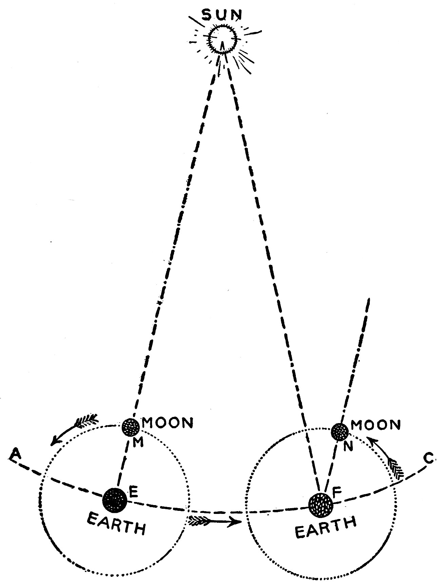
The varying phases of the moon depend upon its position with respect to the sun. Being an opaque globe, without light of its own, we see it only as the light of the sun illuminates it. When it is between us and the sun its dark hemisphere is turned toward us, and it is entirely invisible. The time of this position in the almanacs is called "new moon," but we cannot commonly see the moon for nearly two days after this time, because it is lost in the bright twilight of evening. On the second and third day, however, we see a small portion of the illuminated globe, having the familiar form of a thin crescent. This crescent we commonly call the new moon, although the time given in the almanac is several days earlier.
In this position, and for several days longer, we may, if the sky is clear, see the entire face of the moon, the dark parts shining with a faint gray light. This light is that which is reflected from the earth to the moon. An inhabitant of the moon, if there were such, would then see the earth in the sky like a full moon, looking much larger than the moon looks to us. As the moon advances in its orbit day after day, this light diminishes, and about the time of first quarter disappears from our sight owing to the brightness of the illuminated portion of the moon.
Seven or eight days after the almanac time of new moon, the moon reaches its first quarter. We then see half of the illuminated disk. During the week following, the moon has the form called gibbous. At the end of the second week the moon is opposite the sun, and we see its entire hemisphere like a round disk. This we call full moon. During the remainder of its course the phases recur in reverse order, as we all know.
We might regard all these recurrences as too well known to need description, yet, in the Ancient Mariner, a star is described as seen between the two horns of the moon as though there were no dark body there to intercept our view of the star. Probably more than one poet has described the new moon as seen in the eastern sky, or the evening full moon as seen in the west.
We can see with the naked eye that the moon's surface is variegated by bright and dark regions. The latter are sometimes conceived to have a vague resemblance to the human face, the nose and eyes being especially prominent. Hence the "man in the moon." Through even the smallest telescopes we see that the surface has an immense variety of detail; and the more powerful the tele scope the more details we see. The first thing to strike us on a telescopic examination will be the elevations, or mountains as they are commonly called. These are best seen about the time of the first quarter, because they then cast shadows. At full moon they cannot be so well made out, because we are looking straight down and see everything illuminated. Although these elevations and depressions are called mountains they are different in form from the ordinary mountains of the earth. There is, however, an almost exact resemblance between them and the craters of our great volcanoes. A very common form is that of a circular fort, one or more miles in diameter, with walls which may be thousands of feet high. The inside of this fort may be saucer shaped, a large portion of the surface being flat. At first quarter we can see the shadow of the walls cast upon the interior flat surface. In the centre a little cone is frequently seen. The interior surface is by no means perfectly flat and smooth. The higher power the more details we shall see. Just what these consist of it is impossible to say; they may be solid rock or they may be piles of loose stone. As we can see no object on the moon, even with the most powerful telescope, unless it is more than a hundred feet in diameter, we cannot say what the exact nature of the surface is in its minutest portions.
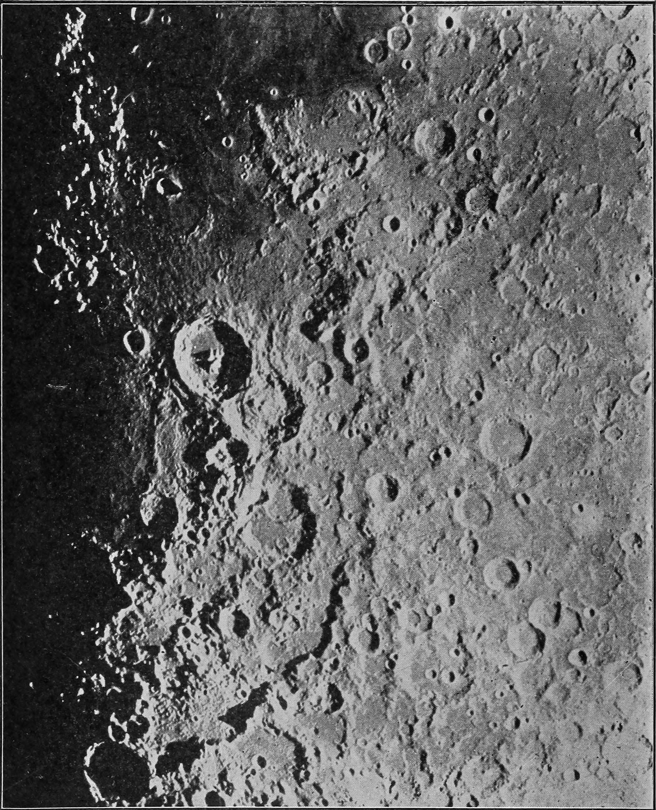
The early observers with the telescope supposed that the dark portions were seas and the brighter portions continents. This notion was founded on the fact that the darker portions looked smoother than the others. Names were therefore given to these supposed oceans, such as Mare Procellarum, the Sea of Storms; Mare Serenitatis, the Sea of Calms, etc. These names, fanciful though they be, are still retained to designate the large dark regions on the moon. A very slight improvement in the telescope, however, showed that the idea of these dark regions being oceans was an illusion. They are all covered with inequalities, proving that they must be composed of solid matter. The difference of aspect arises from the lighter or darker shade of the materials which compose the lunar surface. These are distributed over the surface of the moon in a very curious way. One of the most remarkable features are the long bright lines which radiate from certain points on the moon. A very low telescopic power will show the most remarkable of these; a good eye might even perceive it without a telescope. On the southern part of the moon's hemisphere, as we see it, is a large spot or region known as Tycho, and from this radiate a number of these bright streaks. The appearance is as if the moon had been cracked and the cracks filled up with melted white matter.
Whether we accept this view or not, it is impossible to examine the surface of the moon without the conviction that in some former age it was the seat of great volcanic activity. In the centre of all the great circular mountains we have described are craters which, it would seem, must have been those of volcanoes. Indeed, a hundred years ago it was supposed by Sir William Herschel that there was an active volcano on the moon, but it is now known that this appearance is due to the light of the earth reflected from a very bright spot on the moon's surface. It can be easily seen about the time of the new moon with a telescope of moderate size.
One of the most important questions connected with the moon is whether there is any air or water on its surface. To these the answer of science up to the present time is in the negative. Of course this does not mean that there can absolutely not be a drop of moisture nor the smallest trace of an atmosphere on our satellite; all we can say is that if any atmosphere surrounds the moon it is so rare that we have never been able to get any evidence of its existence. If the latter had such an appendage of even one hundredth of the density of the earth's atmosphere, its existence would be made known to us by refraction of the light from a star seen alongside the moon. But not the slightest trace of any such refraction can be discovered. If there is any such liquid as water, it must be concealed in invisible crevices, or diffused fused through the interior. Were there any large sheets of water in the equatorial regions they would reflect the light of the sun day by day, and would thus become clearly visible. The water would also evaporate and form more or less of an atmosphere of watery vapour.
All this seems to settle another important question; namely, that of the habitability of the moon. Life, in the form in which it exists on our earth, requires water at least for its support, and in all its higher forms air also. We can hardly conceive of a living thing made of mere sand or other dry matter such as forms the lunar surface. If we supposed animals to walk about on the moon, it is difficult to imagine what they could eat. Our general conclusion must be that there is no life on the moon subject to the laws which govern life on the surface of this earth.
The total absence of air and water results in a state of things on the moon such as we never experience on the earth. So far as can be ascertained by the most careful examination, not the slightest change ever takes place on its surface. A stone lying on the surface of the earth is continually attacked by the weather and in the course of years is gradually disintegrated or washed away by the wind and water. But there is no weather on the moon, and a stone lying on its surface might rest there for unknown ages undisturbed by any cause whatever. The lunar surface is heated up when the sun shines on it and it cools off when the sun has set. Except for these changes of temperature there is absolutely nothing going on over the whole surface of the moon, so far as we can see. A world which has no weather and on which nothing ever happens—such is the moon.
The rotation of the moon on its axis is a subject on which some are frequently so perplexed that we shall explain it. Anyone who has carefully examined this body knows that it always presents the same face to us. This shows that it rotates on its axis in the same time that it revolves around the earth. An idea frequently entertained is that this shows that it does not rotate at all, and many chapters have been written on this subject. The whole difficulty arises from the different ideas which people have of motion. In physics we say that a body does not rotate when, if a rod were passed through it, that rod always maintained the same direction when the body moved about. Now let us suppose such a rod passed through the moon; then, if the latter did not rotate on its axis the rod would maintain its same direction while the moon, revolving around the earth, would appear at different points in its orbit as we see it in Figure 21. A very little study of this figure will show that as the moon went around we should successively see every part of its surface in succession if it did not rotate on its axis.
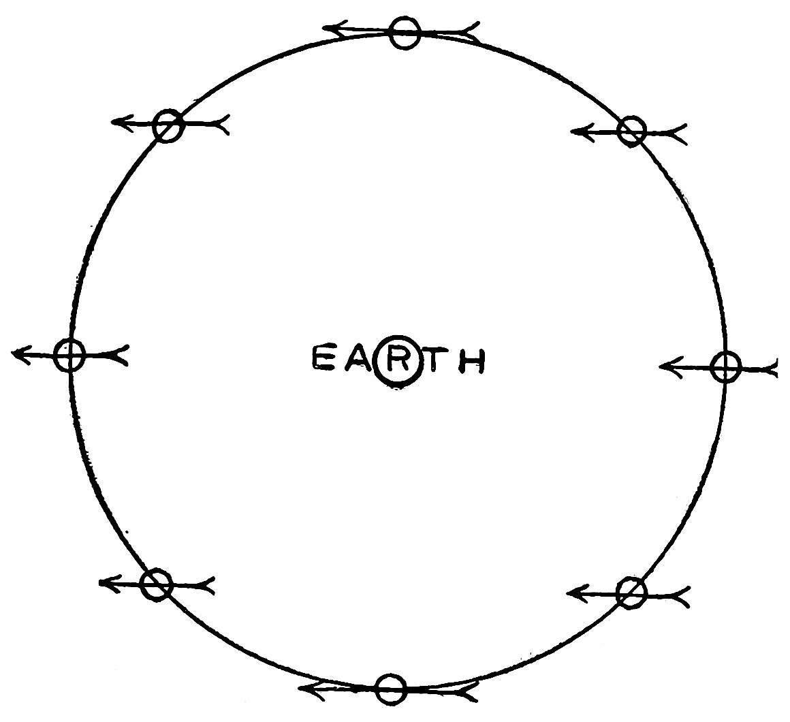
All of us who live on the seashore know that there is a rise and fall of the ocean which in the general average occurs about three quarters of an hour later every day, and which keeps pace with the apparent diurnal motion of the moon. That is to say, if it is high tide to-day when the moon is in a certain position in the heavens, it will be high tide when the moon is in or near that position day after day, month after month, and year after year. We have all heard that the moon produces these tides by its attraction on the ocean. We readily understand that when the moon is above any region its attraction tends to raise the waters in that region; but the circumstance that most perplexes those who are not expert in the subject is that there are two tides a day, high tide occurring not only under the moon, but on the side of the earth opposite the moon. The explanation of this is that the moon really attracts the earth itself as well as it does the water. It continually draws the entire earth and everything upon it toward itself. As it goes round the earth in its monthly course, it thus keeps up a continual motion of the latter. If it attracted every part of the earth equally, the ocean included, there would then be no tides, and everything would go on on the earth's surface as if there were no attraction at all. But as the attraction is as the inverse square of the distance, the moon attracts the regions of the earth and oceans which are nearest to it more than the average, and those that are farthest from it less than the average.
To show the effect of these changes let A, C, and H be the three points on the earth attracted by the moon. Since the moon attracts C more than A, it tends to pull C away from A and increase the distance between A and C. At the same time pulling H more than C it tends to increase the distance between H and C. If the whole earth was a fluid, the attraction of the moon would be simply to draw this fluid out into the form of an ellipsoid, of which the long diameter would be turned toward the moon. But the earth itself, being solid, cannot be drawn out into this shape, while the ocean, being fluid, is thus drawn out. The result is that we have high tides at the two ends of the ellipse into which the ocean is drawn, and low tides in the mid-region.
The complete explanation of the subject requires a statement of the laws of motion which cannot be made here. I will, however, remark that if the attraction of the moon on the earth were always in the same direction, the two bodies would be drawn together in a few days. But owing to the revolution of the moon round the earth the direction of the pull is always changing, so that the earth is, in the course of a month, only drawn about three thousand miles from its mean position by the moon's pull.
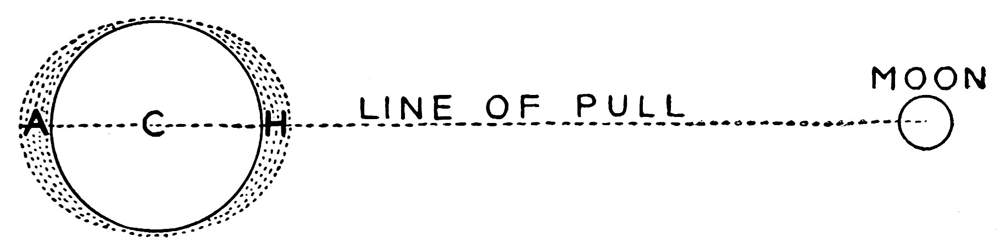
It might be supposed that if the moon produces the tides in this way we should always have high tide when the moon is on the meridian and low tide when the moon is in the horizon. But such is not the case, for two reasons. In the first place it takes time for the moon to draw the waters out into the form of an ellipsoid, and when it once gives them the motion necessary to keep this form, that motion keeps up after the moon has passed the meridian, just as a stone continues to rise after it has left the hand or a wave goes forward by the momentum of the water. The other cause is found in the interruption of the motion by the great continents. The tidal wave, as it is called, meeting a continent, spreads out in one direction or the other, according to the lay of the land, and may be a long time in passing from one point to another. Thus arise all sorts of irregularities in the tides when we compare those in different places.
The sun produces a tide as well as the moon, but a smaller one. At the times of new and full moon the two bodies unite their forces and cause the highest and lowest tides. These are familiar to all dwellers on the seacoast and are called spring tides. About the time of the first and last quarters the attraction of the sun opposes that of the moon and the tides do not rise so high or fall so low, and these are called neap tides.
The reader is doubtless aware that an eclipse of the moon is caused by that body entering the shadow of the earth, and that an eclipse of the sun is caused by the moon passing between us and the sun. Taking this knowledge for granted, we shall explain the more interesting features of these phenomena and the laws of their recurrence.
The first question to be considered is: Why is there not an eclipse of the moon at every full moon, since the earth's shadow must always be in its place opposite the sun? The answer is that the moon commonly passes either above or below the shadow of the earth, and so fails to be eclipsed. This, again, arises from the fact that the orbit of the moon has a small inclination, about five degrees, to the plane of the ecliptic, in which the earth moves, and in which the centre of the shadow always lies. Returning to our former thought of the ecliptic being marked out on the celestial sphere, let us suppose that we also mark out the orbit of the moon during the course of its monthly period. We should then find the orbit of the moon crossing that of the sun in two opposite points, at the very small angle of five degrees. These points of crossing are called nodes. At one node the moon passes from below, or south of the ecliptic, to the north of it. This is called the ascending node. At the other the moon passes from north to south of the ecliptic. This is called the descending node. The terms ascending and descending are applied to the node, because to us in the northern hemisphere, the north side of the ecliptic and equator seem to be above the south side.
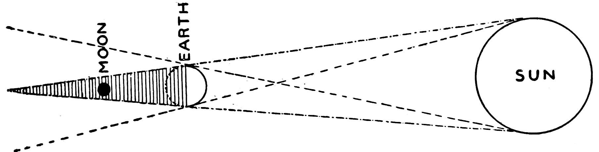
At the points halfway between the nodes the centre of the moon is above the ecliptic by about one twelfth its distance from us, that is, by about twenty thousand miles. The sun being larger than the earth, the shadow of the latter gradually grows smaller away from the earth. At the distance of the moon its diameter is about three fourths that of the earth, that is about six thousand miles. Its centre being in the plane of the ecliptic, it extends only about three thousand miles above and below that plane. Hence it is that the moon will pass through it only when near the nodes.
The line joining the sun and moon of course turns round as the earth moves around the sun. It therefore crosses the moon's nodes twice in the course of a year. That is to say if we supose the nodes to be marked in the sky, the ascending node at one point, and the descending node at the opposite point, then the sun will appear to us to pass each of these points in the course of a year. While the sun is passing one node the shadow of the earth will seem to be passing the other. It is only near these two times of the year that an eclipse of the sun or moon can occur. We may therefore call them eclipse seasons. They commonly last about a month; that is to say it is generally about a month from the time when the sun gets near enough to a node to allow of an eclipse until the time when it is too far past for an eclipse to occur. In 1901 the seasons were May and November.
If the moon's node stayed in the same place in the sky, eclipses would occur only some time during these two months. But, owing to the attraction of the sun on the earth and moon, the position of the nodes is continually changing in a direction opposite that of the motion of the two bodies. Each node makes a complete revolution around the celestial sphere in eighteen years and seven months. Hence in this same period the eclipse seasons will course all through the year. On an average they occur about nineteen days earlier every year than they did the year before. Thus it happens that in 1903 one season occurs in March and April and the other season in September and October. The change will keep going on until, in the year 1910, the season which in 1901 was in May will have gotten back to November, while the November one will have gotten back to May, each having passed through all the intermediate months, and the two having changed places. By 1919 each will have made an entire revolution through the year.
Let us imagine ourselves to be looking at the sun and earth from the moon when the latter is about to enter the earth's shadow. The earth, looking much larger than the sun, will be seen to approach it, and at length will begin to impinge on its disk and cut off a part of its light. The region within which this will occur is called the penumbra, and it is shown outside the shadow in the figure. So long as the moon is only in this region, an ordinary observer would not notice any diminution in its light, although such a diminution could be detected by exact photometric measurements. The moon is not said to be eclipsed until it begins to enter into the actual shadow, where the whole direct light of the sun is cut off.
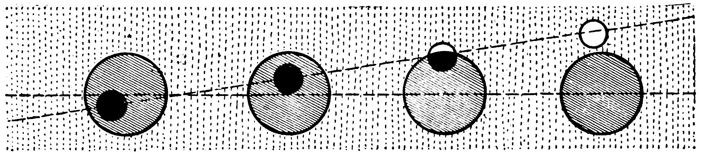
If we watch the moon when an eclipse is about to begin, we shall see a small portion of her eastern edge gradually grow dim and finally disappear. As the moon advances in her orbit, more and more of her face thus disappears from view by entering into the shadow. If, however, we look very carefully, we shall see that the part immersed in the shadow has not entirely disappeared, but shines with a very faint light. If the whole body of the moon enters into the shadow, the eclipse is said to be total; if only a portion of her body dips into the shadow, it is called partial. If the eclipse is total, the light which illuminates the eclipsed moon will be very plainly seen, because it is not drowned out by the dazzling light of the uneclipsed portion. This light is of a dingy red colour, and arises from the refraction of the earth's atmosphere, which was described in a former chapter. In consequence of this, those rays of the sun which just graze the earth, or pass within a short distance of its surface, are bent out of their course and thrown into the shadow by refraction. Thus they fill the shadow and fall on the moon. The red colour is due to the same cause that makes the sun appear red at sunset, namely, the absorption of the green and blue rays by the atmosphere, which lets the red rays pass.
Two or three eclipses of the moon occur every year, of which one, at least, is nearly always total. But, of course, the eclipse will be visible only in that hemisphere of the earth on which the moon is shining at the time.
When the moon is eclipsed an observer on that body would see an eclipse of the sun by the earth. The cause of the phenomenon we have described would then be plain enough to him. The apparent size of the earth would be much larger than that of the moon as we see it. Its diameter would be between three and four times that of the sun. At first this immense body would be invisible when it approached the sun. What the observer would see would be the cutting off of the light of the sun by the advancing but invisible earth. When the latter had nearly covered the sun, its whole outline would be shown to him by a red light surrounding it, caused by the refraction of the earth's atmosphere. Finally, when the last trace of true sunlight had disappeared, nothing would be visible but this ring of bright red light having inside of it the black but otherwise invisible body of the earth.
The circumstances of an eclipse of the moon are quite different from those of a solar eclipse, to be described in the next chapter. It can aways be seen at the same instant over the whole hemisphere of the earth on which the moon is shining at the time. A curious phenomenon occurs when the moon rises totally eclipsed. Then we may see it on one horizon, say the eastern one, while the sun is still visible on the western horizon. The explanation of this seeming paradox is that both bodies are really below the horizon, but are so elevated by refraction that we can see them at the same time.
If the moon moved exactly in the plane of the ecliptic she would pass over the face of the sun at every new moon. But, owing to the inclination of her orbit, as described in the preceding chapter, she will actually do so only when the direction of the sun happens to be near one of the moon's nodes. When this is the case we may see an eclipse of the sun if we are only on the right part of the earth.
Supposing the moon to pass over the sun, the first question is whether it can wholly hide the sun from our eyes. This depends not on the actual size of the two bodies but on their apparent size. We know that the sun has about four hundred times the diameter of the moon. But it is also four hundred times as far from us as the moon. The curious result of this Is that the two bodies appear of nearly the same size to our eyes. Sometimes the moon appears a little the larger, and sometimes the sun. In the former case the moon may entirely hide the sun; in the latter case she cannot do so.
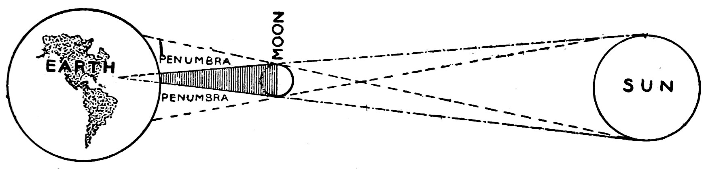
One important difference between an eclipse of the moon and of the sun is that the former is always the same wherever it is visible, while an eclipse of the sun depends upon the position of the observer. The most interesting eclipses are those in which the centre of the moon passes exactly over that of the sun. These are called central eclipses. To see one, the observer must station himself at a point through which the line joining the centres shall pass. Then if the apparent size of the moon exceeds that of the sun, the former will completely hide the sun from view. The eclipse is then said to be total.
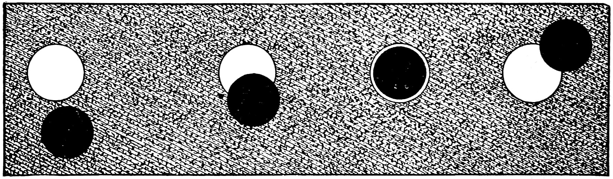
If the sun appears the larger, a ring of its light will surround the dark body of the moon at the moment of central eclipse. The latter is then called annular (Latin annulus, a ring).
The line of centres of the two bodies sweeps along the surface of the earth, and its course may be shown by a line marked on a map. Such maps, showing the regions and lines of eclipses are published in the astronomical ephemerides. An eclipse may be total or annular in a region a few miles north or south of this central line, but never for so far as one hundred miles. Outside this limit an observer will see only a partial eclipse, that is, one in which the moon partly covers the sun. In yet more distant regions of the earth there will be no eclipse at all.
A total eclipse is one of the most impressive sights that nature offers to the eye of man. To see it to the best advantage one should be in an elevated position commanding the widest possible view of the surrounding country, especially in the direction from which the shadow of the moon is to come. The first indication of anything unusual is to be seen, not on the earth or in the air, but on the disk of the sun. At the predicted moment a little notch will be seen to form somewhere on the western edge of the sun's outline. It increases minute by minute, gradually eating away, as it were, the visible sun. No wonder that imperfectly civilised people, when they saw the great luminary thus diminishing in size, fancied that a dragon was devouring its substance.
For some time, perhaps an hour, nothing will be noticed but the continued progress of the advancing moon. It will be interesting if, during this time, the observer is in the neighbourhood of a tree that will permit the sun's rays to reach the ground through the small openings in its foliage. The little images of the sun which form here and there on the ground will then have the form of the partially eclipsed sun. Soon the latter appears as the new moon, only instead of increasing, the crescent form grows thinner minute by minute. Even then, so well has the eye accommodated itself to the diminishing light, there may be little noticeable darkness until the crescent has grown very thin. If the observer has a telescope with a dark glass for viewing the sun, he will now have an excellent opportunity of seeing the mountains on the moon. The unbroken limb of the sun will keep its usual soft and uniform outline. But the inside of the crescent, the edge of which is formed by the surface of the moon, will be rough and jagged in outline.
As the crescent is about to disappear the advancing mountains on the rugged surface of the moon will reach the sun's edge, leaving nothing of the latter but a row of broken fragments or points of light, shining between the hollows on the lunar surface. They last but a second or two and then vanish.
Now is seen the glory of the spectacle. The sky is clear and the sun in mid-heaven, and yet no sun is visible. Where the latter ought to be the densely black globe of the moon hangs, as it were, in mid-air. It is surrounded by an effulgence radiating a saintly glory. This is the sun's corona, already mentioned in our chapter on the sun. Though bright enough to the unaided vision, it is seen to the best advantage with a telescope of very low magnifying power. Even a common opera glass may suffice. With a telescope of high power only a portion of the corona is visible, and thus the finest part of the effect is lost. A common spy-glass, magnifying ten or twelve times, is better, so far as effect is concerned, than the largest telescope. Such an instrument will show not only the corona itself but the so-called "prominences"—fantastic cloud-like forms of rosy colour rising here and there, seemingly from the dark body of the moon.
It is remarkable that though the ancients were familiar with the fact of eclipses, and the more enlightened of them perfectly understood their causes, some even the laws of their recurrence, there are very few actual accounts of these phenomena in the writings of the ancient historians. The old Chinese annals now and then record the fact that an eclipse of the sun occurred at a certain time in some province or near some city of the empire. But no particulars are given. Quite recently the Assyriologists have deciphered from ancient tablets a statement that an eclipse of the sun was seen at Nineveh, B. C. 768, June 15. Our astronomical tables show that there actually was a total eclipse of the sun on this day, during which the shadow passed a hundred miles or so north of Nineveh.
Perhaps the most celebrated of the ancient eclipses, and the one that has given rise to most discussion, is that known as the eclipse of Thales. Its principal historical basis is a statement of Herodotus that in a battle between the Lydians and the Medes the day was suddenly turned into night. The armies thereupon ceased battle and were more eager to come to terms of peace with each other. It is added that Thales, the Milesian, had predicted to the Ionians this change of day, even the very year in which it should occur. Our astronomical tables show that there actually was a total eclipse of the sun in the year B. C. 585, which was near enough to the time of the battle to be the one alluded to, but it is now known that the path of the shadow did not quite reach the seat of hostilities till after sunset. Some doubt therefore still rests on the subject.
There is a curious law of the recurrence of eclipses which has been known from ancient times. It is based on the fact that the sun and moon return to nearly the same positions, relative to the node and perigee of the moon's orbit, after a period of six thousand five hundred and eighty-five days eight hours, or eighteen years and twelve days. This period is called the Saros. Eclipses of every sort repeat themselves at the end of a Saros. For example, the eclipse of May, 1900, may be regarded as a repetition of those which occurred in the years 1846, 1864, and 1882. But when such an eclipse recurs it is not visible in the same part of the earth, because of the excess of eight hours in the period. During this eight hours the earth performs one third of a rotation on its axis, which brings a different region under the sun. Each eclipse is visible in a region about one third of the way round the world, or one hundred and twenty degrees of longitude, west of where it occurred before. Only after three periods will the recurrence be near the same region. But in the meantime the moon's line of motion will have changed so that the path of its shadow will pass farther north or south than before.
There are two series of eclipses remarkable for the long duration of the total phase. To one of these the eclipse of 1868, hereafter mentioned, belongs. This recurred in 1886, and will recur again in 1904. Unfortunately, at the first recurrence, the shadow was cast almost entirely on the Atlantic and Pacific Oceans, so that it was not favourable for observation by astronomers. That of 1904, September 9, will be yet more unfortunate for us, because the shadow will pass only over the Pacific Ocean. Possibly, however, it may touch some island where observations may be made. The recurrence of 1922, September 1, will be visible in northern Australia, where the duration of totality will be about four minutes.
To the other and yet more remarkable series belonged the eclipse of May 7, 1883, and that of May 11, 1901. At the successive recurrences of this eclipse the duration of totality will be longer and longer through the twentieth century. In 1937, 1955, and 1978 it will exceed seven minutes, so that so far as duration is concerned, our successors will see eclipses more remarkable than any their ancestors have enjoyed for many centuries.
About 1863-64 the spectroscope began to be applied to researches on the heavenly bodies. Mr. (now Sir William) Huggins, of London, was a pioneer in observing the spectra of the stars and nebulæ. For several years it did not seem that much was to be learned in this way about the sun. The year 1868 at length arrived. On August eighteenth there was to be a remarkable total eclipse of the sun, visible in India. The shadow was one hundred and forty miles broad; the duration of the total phase was more than six minutes. The French sent Mr. Janssen, one of their leading spectroscopists, to observe the eclipse in India and see what he could find out. Wonderful was his report. The red prominences which had perplexed scientists for two centuries were found to be immense masses of glowing hydrogen, rising here and there from various parts of the sun, of a size compared with which our earth was a mere speck. This was not all. After the sunlight reappeared, Janssen began to watch these objects in his spectroscope. He followed them as more and more of the sun came out, and continued to see them until after the eclipse was over. They could be observed at any time when the air was sufficiently clear and the sun high in the sky.
By a singular coincidence this same discovery was made independently in London without any eclipse. Mr. J. Norman Lockyer was then rising into prominence as an enthusiastic worker with the spectroscope. It occurred independently to him and to Mr. Huggins that the heat in the neighbourhood of the sun was so intense that any matter that existed there would probably take the form of a gas shining by its own light. Both of these investigators endeavoured to get a sight of the prominences in this way; but it was not until October twentieth, two months after the Indian eclipse, that Mr. Lockyer succeeded in having an instrument of sufficient power completed. Then, at the first opportunity, he found that he could see the prominences without an eclipse!
At that time communication with India was by mail, so that for the news of Mr. Janssen's discovery astronomers had to wait until a ship arrived. By a singular coincidence his report and Mr. Lockyer's communication announcing his own discovery reached the French Academy of Sciences at the same meeting. This eminent body, with pardonable enthusiasm, caused a medal to be struck in commemoration of the new method of research, in which the profiles of Lockyer and Janssen appeared together as co-discoverers. Since that time the prominences are regularly mapped out from day to day by spectroscopic observers in various parts of the world.
The greatest beauty of a total eclipse is due to the sun's corona. The exact nature of this appendage is still in doubt. Indeed, until photography was called to the aid of the astronomer its structure was unknown. It was described by observers simply as a soft light surrounding the sun; but when it is photographed and carefully examined it is found to be of a radial, hairy structure which the reader can easily see from the frontispiece of the book. It extends out farthest in the direction of the sun's equator and least at the poles. The rays which chance to be exactly at the poles go straight out from the sun. But those on each side are found to curve toward the equator, while farther from the equator they are lost in the more powerful effulgence going out from the region of the solar spots. Near the poles the forms are remarkably like those which iron filings assume when scattered on paper above a magnet. It is therefore a question whether there is not here something in the nature of a magnetic force. But in the region called the sun's equator this analogy ceases to hold. In describing the sun we mentioned the much greater activity in the regions of greater spottedness than elsewhere. It now seems as if the forces which throw out the corona are also greatest where the sun's activity is greatest.
The probability now seems to be that the corona is composed of matter thrown up from the sun, and kept from falling back again by the repulsion of the solar rays, and that it bears a certain resemblance to the tail of a comet.
A very important question is whether the corona shines mostly by reflected light, or by its own light, due to the high temperature which it must have so near the sun. No doubt its light arises from both sources, but it is not yet known in what proportion. The fact is that its spectrum shows some bright lines. These can be due only to the light of the matter itself. Some observers have supposed that they also saw dark lines in the spectrum. This, however, has not been proved. On the whole the probability seems to be that the corona shines mostly by its own light.
The orbits in which the planets revolve around their central luminary are in strictness ellipses, or slightly flattened circles. But the flattening is so slight that the eye would not notice it without measurement. The sun is not in the centre of the ellipse but in a focus, which in some cases is displaced from the centre by an amount that the eye can readily perceive. This displacement measures the eccentricity of the ellipse, which is much greater than the flattening. For example, in the case of Mercury, which moves in a very eccentric orbit, the flattening is only one fiftieth; that is, if we represent the greatest diameter of the orbit by fifty, the least diameter will be forty-nine. But the distance of the sun from the centre of the orbit is ten on the same scale.
To show this we give a diagram of the orbits of the inner group of planets showing quite nearly their forms and respective locations. A simple glance will show that the orbits are much nearer together at some points than at others.
In explaining the various aspects and motions, real and apparent, of the planets a number of technical expressions are used which we shall explain.
Inferior planets are those whose orbits lie within the orbit of the earth. This class comprises only Mercury and Venus.
Superior planets are those whose orbits lie without that of the earth. These comprise Mars, the minor planets or asteroids, and all four of the outer group of major planets.
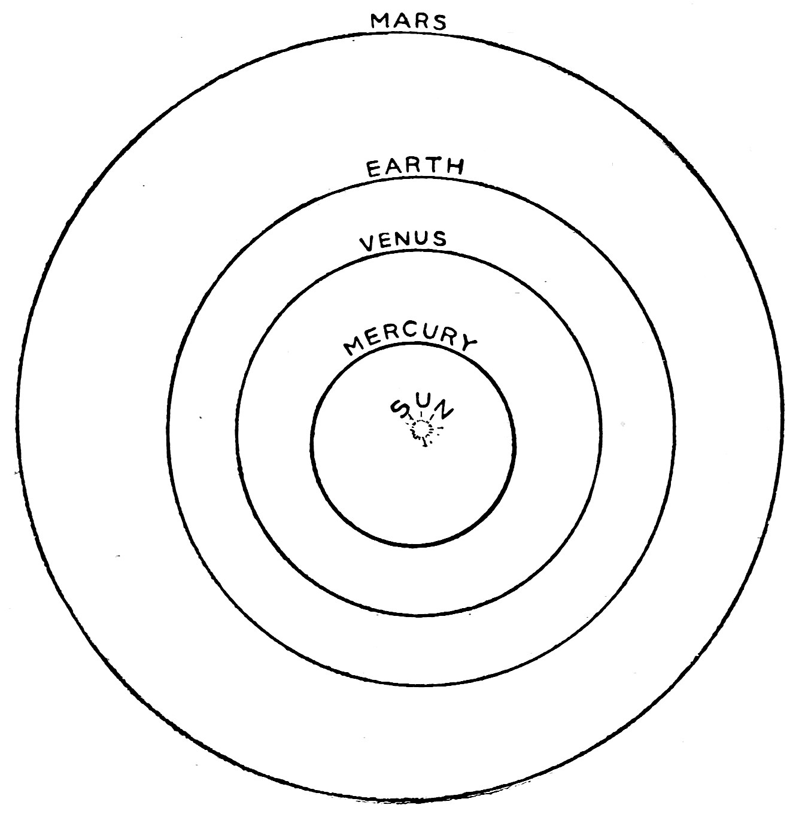
When a planet seems to us to pass by the sun, and so is seen as if alongside of it, it is said to be in conjunction with the sun.
An inferior conjunction is one in which the planet is between us and the sun.
A superior conjunction is one in which the planet is beyond the sun.
A little consideration will show that a superior planet can never be in inferior conjuction, but an inferior planet has both kinds of conjunction.
A planet is said to be in opposition when it is in the opposite direction from the sun. It then rises at sunset, and vice versa. Of course, an inferior planet can never be in opposition.
The perihelion of an orbit is that point of it which is nearest the sun; the aphelion its most distant point from the sun.
As the inferior planets, Mercury and Venus, perform their revolutions they seem to us to swing from one side of the sun to the other. Their apparent distance from the sun at any time is called their elongation.
The greatest elongation of Mercury is generally about twenty-five degrees, being sometimes more and sometimes less, owing to the great eccentricity of the orbit of this planet. The greatest elongation of Venus is almost forty-five degrees.
When the elongation of one of these planets is east from the sun we may see it in the west after sunset; when west we may see it in the east in the morning sky. As neither of them ever wanders from the sun farther than the distances we have stated, it follows that a planet seen in the east in the evening, or in the west in the morning, cannot be either Mercury or Venus.
No two orbits of the planets lie exactly in the same plane. That is, if we regard any one orbit as horizontal, all the others will be tipped by small amounts toward one side or the other. Astronomers find it convenient to take the orbit of the earth, or the ecliptic, as the horizontal or standard one. As each orbit is centred on the sun it will have two opposite points which lie on the same horizontal plane as the earth's orbit. More exactly, these are the points at which the orbit intersects the plane of the ecliptic. They are called nodes.
The angle by which an orbit is tipped from the plane of the ecliptic is called its inclination. The orbit of Mercury has the greatest inclination, more than 6°. The orbit of Venus is inclined 3° 24′; those of all the superior planets less, ranging from 0° 46′ in the case of Uranus to 2° 30′ in the case of Saturn.
Leaving out Neptune, the distances of the planets follow very closely a rule known as Bode's Law, after the astronomer who first pointed it out. It is this: Take the numbers 0, 3, 6, 12, etc., doubling each as we go along. Then add 4 to each number, and we shall hit very nearly on the scale of distances of all the planets except Neptune, thus:
Mercury, | 0 + 4 = | 4; | actual distance | 4 to 40 Venus, | 3 + 4 = | 7; | actual distance | 7 to 40 Earth, | 6 + 4 = | 10; | actual distance | 10 to 40 Mars, | 12 + 4 = | 16; | actual distance | 15 to 40 Asteroids, | 24 + 4 = | 28; | actual distance | 20 to 40 Jupiter, | 48 + 4 = | 52; | actual distance | 52 to 40 Saturn, | 96 + 4 = | 100; | actual distance | 95 to 40 Uranus, | 192 + 4 = | 196; | actual distance | 192 to 40 Neptune, | 384 + 4 = | 388; | actual distance | 300 to 40
On these actual distances we remark that astronomers do not use miles or other terrestrial measures to express distances between the heavenly bodies, for two reasons. In the first place, they are too short; to use them would be like stating the distance between two cities in centimetres. In the next place, distances in the heavens cannot be fixed with the necessary exactness in our measures, whereas, if we take the sun's distance from the earth as the unit of measure, we can determine other distances between the planets with great precision in terms of this measure. So, to get the distances of the planets from the sun in astronomical measure, we have to divide the last numbers of the preceding table by ten, or insert a decimal point before the last figure of each.
We have not in this table distracted the attention of the reader by using unnecessary decimals. Actually, the distance of Mercury is 0.387, etc.; we have simply called it 0.4 and multiplied it by 10 to get the proportion for comparing with Bode's Law.
The motions of the planets in their orbits take place in accordance with certain laws laid down by Kepler, and therefore known as Kepler's laws. The first of these has already been mentioned; the orbits of the planets are ellipses, of which the sun is in one focus.
The second law is that the nearer the planet is to the sun the faster it moves. With more mathematical exactness, the areas swept over by the line joining the planet and sun in equal times are all equal.
The third law is that the cubes of the mean distances of the planets from the sun are proportional to the squares of their times of revolution. This law requires some illustration. Suppose one planet to be four times as far from the sun as another. It will then be eight times as long going around it. This number is reached by taking the cube of four, which is sixty-four, and then extracting the square root, which is eight.
The unit of measure which the astronomer uses to express distances in the solar system being the mean distance of the earth from the sun, it follows that the mean distances of the inferior planets will be decimal fractions, as we have just shown, while those of the outer ones will vary from 1.5 in the case of Mars to 30 in the case of Neptune. If we take the cubes of all these distances and extract their square roots we shall have the times of the revolution of the planets, expressed in years.
It will be seen that the outer planets are longer in getting around their orbits, not only because they have farther to go, but because they actually move more slowly. If, as in the case first supposed, the outer planet is four times as far from the sun, it will move only half as fast. This is why it takes eight times as long to get around. The speed of the earth in its orbit is about 18.6 miles per second. But that of Neptune is only about 3.5 miles per second, although it has thirty times as far to go. This is why it takes more than one hundred and sixty years to complete a revolution.
To set forth what is known of the major planets we shall take them up in the order of their distance from the sun. The first planet reached will then be Mercury. It is not only the nearest planet to the sun, but much the smallest of the eight; so small, indeed, that, but for its situation, it would hardly be called a major planet. Its diameter is about two fifths greater than that of the moon, but, the volumes of bodies being proportional to the cubes of their diameters, it has about three times the volume of the moon.
It has far the most eccentric orbit of all the major planets, though, in this respect, it is exceeded by some of the minor planets to be hereafter described. In consequence, its distance from the sun varies between wide limits. At perihelion it is less than twenty-nine millions of miles from the sun; at aphelion it goes out to a distance of more than forty-three millions of miles. It performs its revolution around the sun in a little less than three months; to speak more exactly, in eighty-eight days. It therefore makes more than four revolutions in a year.
Performing more than four revolutions around the sun while the earth is performing one, we readily see that it must pass conjunction with the sun at certain regular though somewhat unequal intervals. To show the exact nature of its apparent motion let the inner circle of the diagram represent the orbit of Mercury and the outer one that of the earth. When the earth is at E, and Mercury at M, the latter is in inferior conjunction with the sun. At the end of three months it will have returned to the point M, but it will not yet be in conjunction, because, in the meantime, the earth has moved forward in its orbit. When the earth reaches a certain point F, Mercury will have reached the point N and will again be in inferior conjunction. This revolution from one inferior conjunction to another is called the synodic revolution of the planet. In the case of Mercury this is somewhat less than one third more than the time of actual revolution; that is to say, the arc MN is a little less than one third of the circle.
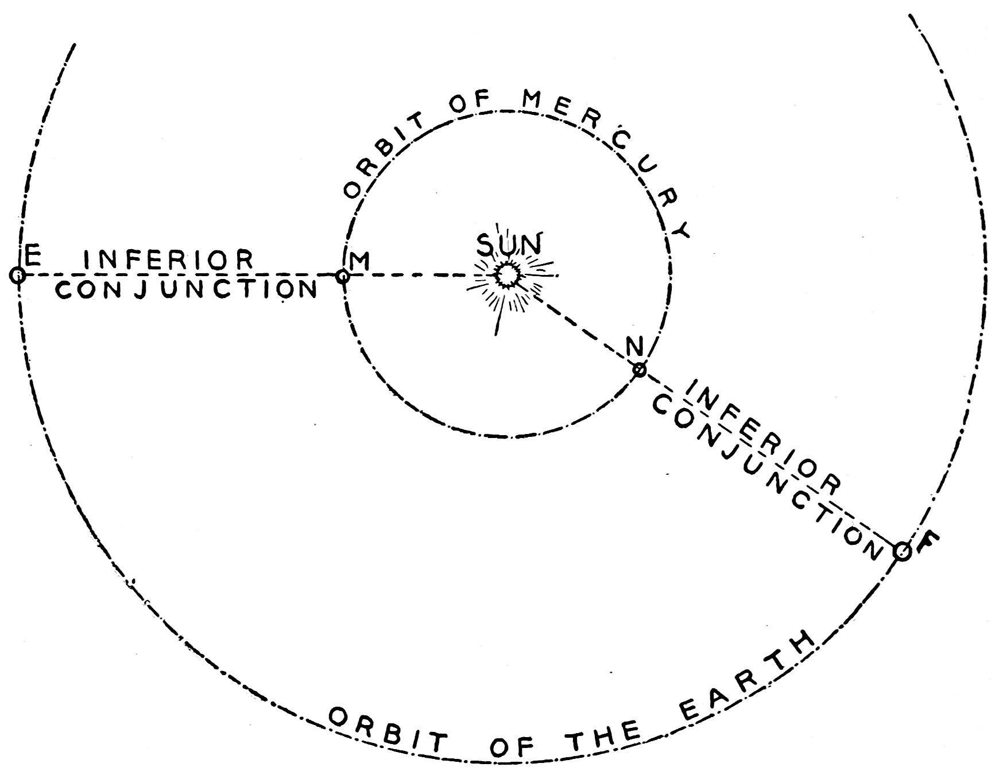
Now suppose that when the earth is at E, Mercury, instead of being at M is near the highest point A of the orbit as represented in the figure. It will then be at its greatest apparent distance from the sun as we see it from the earth; or, in technical language, at its greatest east elongation. Being east of the sun it will then set after the sun, by a time generally between an hour and a quarter and an hour and a half. This is the most convenient time for seeing it. If the sky is clear, it will readily be seen in the twilight from half an hour to an hour after sunset. At the opposite elongation, near C, it is west of the sun; then it rises before the sun and may be seen in the morning twilight.
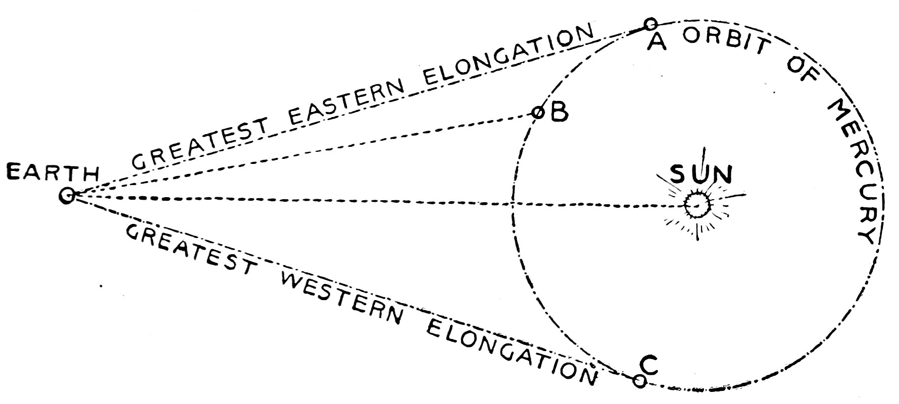
The best time to make a telescopic study of Mercury is late in the afternoon, when it is near east elongation. or shortly after sunrise, if it rises before the sun. Supposing it east of the sun, it will probably be visible in the telescope at any time after noon, but the air is generally disturbed by the sun's rays so that it is hardly possible to make a good observation at that time. Late in the afternoon the air grows steadier, so that the planet can be better observed. But, after sunset, the planet is seen through a continually increasing extent of atmosphere, so that the seeming disturbance again begins to increase. Owing to these circumstances it is the most difficult of all the planets to study in a satisfactory way, and observers differ very much as to what can be seen on its surface.
The first observer who thought he could see any features on the surface of this planet was Schröter, a German. When Mercury presented the form of a crescent he fancied that its south horn seemed blunted at intervals. He attributed this to the shadow of a lofty mountain; and by observing the intervals between the blunted appearance he concluded that the planet revolved on its axis in twenty-four hours and five minutes. But Sir William Herschel, who observed at the same time with much more powerful instruments, could not see anything of the kind.
Until quite recently nearly all observers agreed with Herschel that no time of rotation could be certainly determined. But a few years since, Schiaparelli, observing with a fine telescope in the beautiful sky of northern Italy, noticed that the aspect of the planet seemed unchanged day after day. He was thus led to the conclusion that it always presents the same face to the sun, as the moon presents the same face to the earth. This view was shared by Mr. Lowell, observing at the Flagstaff Observatory. But the observation is too difficult to permit us to regard the fact as established. All that a conservative astronomer would be willing to say is that as yet we know nothing of the revolution of Mercury on its axis.
Drawings showing the face of Mercury have been made by several astronomers. As it is seen under all ordinary conditions no special features are well marked. Very different is the case at the Lowell Observatory in Flagstaff, Ariz. The most singular feature of its surface in the latter picture consists in the dark lines which cross it. These have not been seen by other observers, and, until they are established by independent evidence, astronomers will be sceptical as to their reality. The reason of this will be stated later in connection with the planet Mars.
Owing to the various positions of Mercury relative to the sun it presents phases like those of the moon. These depend upon the relation of the dark and the illuminated hemispheres relative to the direction in which we see the planet. The hemisphere which is turned away from the sun, being in darkness, is always invisible to us. At superior conjunction the illuminated hemisphere is turned toward us and the planet seems round, like a full moon. As it moves from east elongation to inferior conjunction, more and more of the dark hemisphere is turned toward us, and less and less of the illuminated one. But this disadvantage is counterbalanced by the fact that the planet continually comes nearer during the interval, so that we get a better view of whatever portion of the illuminated hemisphere may be visible to us. Its apparent form and size at different times during its synodic revolution go through a series of changes similar to those shown in the next chapter in the case of Venus.
The question whether Mercury has an atmosphere is also one on which opinions differ, the prevailing opinion being in the negative. It seems quite certain that, if it has one, it is too rare to reflect the light of the sun.
It will be readily seen that, if an inferior planet revolved around the sun in the same plane as the earth, we should see it pass over the sun's disk at every inferior conjunction. But no two planets revolve in the same plane. Of all the major planets the orbit of Mercury has the largest inclination to that of the earth. In consequence, when in inferior conjunction, it commonly passes a greater or less distance to the north or to the south of the sun. If, however, it chances to be near one of its nodes at the time in question, we shall see it as a black spot passing across the sun's disk. This phenomenon is called a transit of Mercury. Such transits occur at intervals ranging between three and thirteen years. They are observed with much interest by astronomers because it is possible to determine with great precision the time at which the planet enters upon the solar disk, and leaves it again. Knowing these times, valuable information is afforded respecting the exact law of motion of the planet.
The first observation of a transit of Mercury was made by Gassendi on November 7, 1631. His observation is not, however, of any scientific value at the present time, owing to the imperfection of his instruments. A somewhat better but not good observation was made by Halley, of England, in 1677, during a visit to the island of St. Helena. Since that time the transits have been observed with a fair degree of regularity. The following table shows the transits that will be visible during the next fifty years, with the regions of the earth in which each may be seen:
1907, November 14, visible in Europe and eastern United States.
1914, November 7, visible in the same regions.
1924, May 7, the beginning will be visible on the Pacific coast, but the whole transit only on the Pacific Ocean and in eastern Asia.
1927, November 9, visible in Asia and eastern Europe.
1937, May 11, Mercury will graze the south limb of the sun. The phenomenon will be visible in Europe, but will occur before the sun rises in America.
1940, November 10, visible in the Western and Pacific States.
1953, November 14, visible throughout the United States.
Observations of transits of Mercury since 1677 have brought out one of the most perplexing facts of astronomy. The orbit of this planet is found to be slowly changing its position, its perihelion moving forward by about forty-three seconds per century farther than it ought to move in consequence of the attraction of all the known planets. This deviation was discovered in 1845 by Le Verrier, celebrated as having computed the position of Neptune before it had ever been recognised in the telescope. He attributed it to the attraction of a planet, or group of planets, between Mercury and the sun. His announcement set people to looking for the supposed planet. About 1860, a Dr. Lescarbault, a country physician of France, who possessed a small telescope, thought he had seen this planet passing over the disk of the sun. But it was soon proved that he must have been mistaken. Another more experienced astronomer, who was looking at the sun on the same day, failed to see anything except an ordinary spot. It was probably this which misled the physician-astronomer. Now, for forty years, the sun has been carefully scrutinised and photographed from day to day at several stations without anything of the sort being seen.
Still, it is possible that little planets so minute as to escape detection in passing over the sun's disk may revolve in the region in question. If so, their light would be completely obscured by that of the sky, so that they might not ordinarily be visible. But there is still a chance that, during a total eclipse of the sun, when the light is cut off from the sky, they could be seen. Observers have, from time to time, looked for them during total eclipses. In one instance something of the sort was supposed to be found. During the eclipse of 1878, Professor Watson, of Ann Arbor, and Professor Lewis Swift, both able and experienced observers, thought that they had detected some such bodies. But critical examination left no doubt that what Watson saw was a pair of fixed stars which had always been in that place. How it was with the observations of Professor Swift has never been certainly ascertained, because he was not able to lay down the position with such certainty that positive conclusions could be drawn.
Notwithstanding such failures, observers have repeated the search during several of the principal total eclipses. The writer did so during the eclipse of 1869, and again during that of 1878, the search being made with a small telescope. In recent times the powerful agency of photography has been invoked by Professors Pickering and Campbell during the eclipses of 1900 and 1901. Campbell's results during the latter eclipse were the most decisive yet reached. With his photographic telescope some fifty stars were photographed, some as faint as the eighth magnitude, but they were all found to be known objects. It therefore seems certain that there can be no intramercurial much brighter than the eighth magnitude. It would take hundreds of thousands of such planets as this to produce the observed motion of Mercury. So great a number of these bodies would produce a far brighter illumination of the sky than any that we see. The result therefore seems to be conclusive against the view that the motion of the perihelion of Mercury can be produced by intramercurial planets. In addition to all these difficulties in supposing the planet to exist we have the difficulty that, if it did exist, it would produce a similar though smaller change in the position of the nodes of either Mercury or Venus, or both.
Altogether, the evidence seems conclusive against the reality of any bodies whose attraction could produce the observed deviation, which still remains unexplained. The most recent supposition on the subject is that the force of gravitation deviates slightly from the law of the inverse square. But this requires farther investigation.
Of all the star-like objects in the heavens the planet Venus is the most brilliant. The sun and moon are the only heavenly bodies outshining it. In a clear and moonless evening it may be seen to cast a shadow. If an observer knows exactly where to look for it, and has a well-focused eye, it can be seen in the daytime when near the meridian, provided that the sun is not in its immediate neighbourhood. When it is east of the sun it may be seen in the west, faintly before sunset and growing continually brighter as the light diminishes. When west of the sun it rises in the morning before the sun, and may then be seen in the east. Under these circumstances it has been called the evening and morning star respectively. The ancients called it Hesperus when an evening star, and Phosphorus when a morning star. It is said that, in the early history of our race, Hesperus and Phosphorus were not known to be the same body.
If Venus is examined with the telescope, even one of low power, it will be seen to exhibit phases like those of the moon. This fact was ascertained by Galileo when he first directed his telescope toward the planet, and afforded him strong evidence of the truth of the Copernican System. In accordance with a custom of the time he published this discovery in the form of an anagram—a collection of letters which, when subsequently put together would state the discovery. Translated Into English the anagram read, "The mother of the loves emulates the phases of Cynthia."
What we have said of the synodic motion of Mercury applies in principle to Venus, and need not therefore be repeated. In the following cut the apparent size of the planet is shown in various parts of its synodic orbit. As the planet passes from superior to inferior conjunction its globe continually grows larger in apparent size, though we cannot see its entire outline. But the fraction of the disk illuminated continually becomes smaller, first having the shape of a half moon, and then the shape of a crescent, which grows thinner and thinner up to the time of inferior conjunction. In the latter position the dark hemisphere is turned toward us and the planet is invisible. Venus Is at its greatest brightness about halfway between Inferior conjunction and greatest elongation. It then sets about two hours after the sun, if east of it, and rises about two hours before the sun, if west of it.
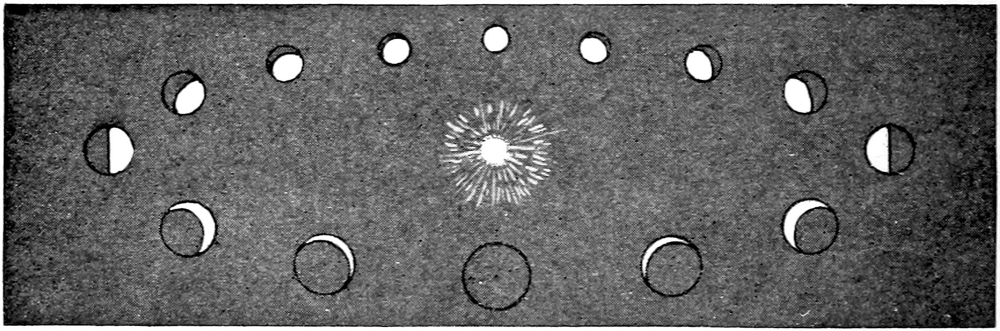
The question of the rotation of Venus has interested astronomers and the public ever since the time of Galileo. But the difficulty of learning anything certain on the subject is very great, owing to the peculiar glare of the planet. When seen through a telescope no sharp and well-defined markings are visible. Instead of this there is a glare on the surface, varying by gentle gradations from one region to another, as if we were looking upon a globe of polished but slightly tarnished metal. Nevertheless, various observers have supposed that they could distinguish bright or dark spots. As far back as 1667 Cassini concluded from these seeming spots that the planet revolved on its axis in a little less than twenty-four hours. During the next century Blanchini, an Italian observer, published an extensive treatise on the subject, illustrated with many drawings of the planet. His conclusion was that Venus required more than twenty-four days to revolve on its axis. Cassini, the son, defended his father's conclusion by claiming that the planet had always made one revolution and a little more between the times of Blanchini's observations on successive evenings. Thus the Italian astronomer would naturally see the spots on successive evenings a little farther advanced, and estimated the motion by this advance, not being aware that a whole revolution had been made during the interval. At the end of twenty-four days the same hemisphere of the planet would be presented to the earth as before, the number of revolutions in the meantime being twenty-five. Schröter tried to decide the question for Venus in the same way that he supposed himself to have decided it for Mercury. He directed his attention especially to the fine sharp horns of the crescent, when the planet was nearly between the earth and the sun. At certain intervals he supposed one of them to be a little blunted. Ascribing this appearance to the shadow of a high mountain, he concluded that the time of rotation was twenty-three hours twenty-one minutes.
From the time of Schröter no one professed to throw any more light on the question until 1832. Then De Vico, of Rome, announced that he had rediscovered the markings found by Blanchini. He concluded that the planet rotated in twenty-three hours twenty-one minutes, in agreement with Schröter's result.
This close agreement between the results of observations by four distinguished observers led to the very general acceptance of twenty-three hours twenty-one minutes as the time of rotation of the planet. But there was much to be said on the other side. The great Herschel, with the most powerful telescopes that had ever been made, was never able to make out any permanent markings on Venus. If anything like a spot appeared, it varied and disappeared again so rapidly that no evidence of rotation could be afforded by it. This negative result has always been reached by the large majority of observers.
But a new and surprising theory has been recently put forth by Schiaparelli, and maintained by Lowell. This is that Venus rotates on its axis in the same period that it revolves around the sun; in other words both Mercury and Venus always present the same face to the sun, as the moon presents the same face to the earth. Schiaparelli reached this conclusion by noticing that a number of exceedingly faint spots could be seen on the southern hemisphere of Venus for several days in succession in the same position day after day. He could observe the planet through several hours on each day, and the constancy of the spots precluded the idea that the planet made one rotation and a little more in the course of a day. Lowell was led to the same conclusion by careful study of the planet at his Arizona observatory.
The latest conclusion has been reached by the spectroscope. We have already explained how, with this instrument, it can be determined whether a heavenly body is moving toward us or from us. The principle applies to a planet which we see by the reflected light of the sun as well as to a star. Hence, if Venus rotates, one part of its disk will be moving toward us, and the other from us. By comparing the dark lines of the spectrum shown by the two edges of the disk of Venus it can then be determined how various points of the disk are moving with respect to the earth. It was thus found by Belopolsky that the planet was affected by a quite rapid rotation. The observation is so difficult, and the displacement of the lines so small, that it was not possible to state a very certain result, although the general fact was made very probable. On the whole we must regard this conclusion as the most likely that has yet been reached, although it is at variance with the observations of Schiaparelli, as well as those of the Lowell Observatory. But the spectroscopic observations have not yet been made with sufficient precision to teach us the exact time of revolution. Recent discoveries as to the nature of the atmosphere of Venus make it almost certain that all the observers who supposed that they saw markings on the planet were mistaken.
It is now well established that Venus is surrounded by an atmosphere which is probably denser than that of the earth. This was shown in a remarkable and interesting way during the transit of Venus over the sun's disk in 1882, which was observed by the writer at the Cape of Good Hope. When the planet was a little more than halfway on the disk, its outer edge appeared illuminated, as shown on the figure. This illumination, however, did not commence at the middle point of the arc, as it should have done had it been caused by regular refraction, but commenced at a point quite near one end of the arc. This appearance was explained by Russell, of Princeton, who showed that the atmosphere is so full of vapour that we cannot see the light of the sun by direct refraction through it. What we see is an illuminated stratum of clouds or vapour floating in an atmosphere. Such being the case, it is not at all likely that astronomers on the earth can ever see the solid body of the planet through these clouds. Hence the supposed spots could only have been temporary clouds, continually changing.
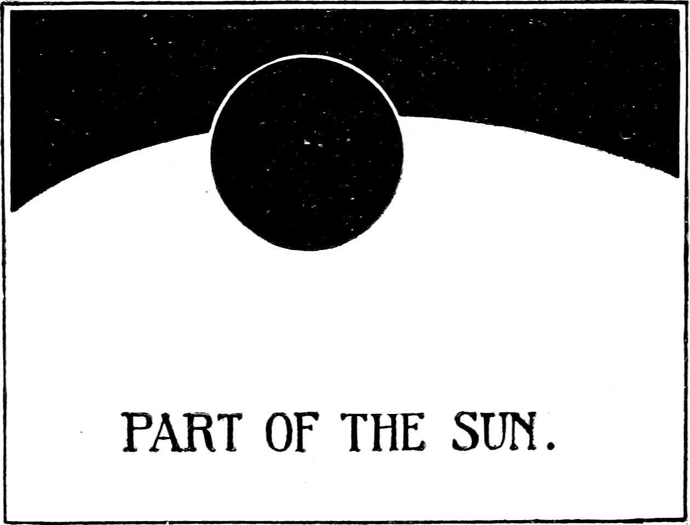
To illustrate the illusions to which the sight of even good observers may be subject, we may mention the fact that several such observers have supposed the whole hemisphere of Venus to be visible when the planet was near inferior conjunction. It then had the appearance familiarly known as "the new moon in the old moon's arms," with which everyone who observes our satellite when a narrow crescent is familiar. In the case of the moon it is well known that we thus see the dark hemisphere by the light reflected from the earth. But in the case of Venus there is no possibility of a sufficient reflection of light from the earth, or any other body. The appearance has sometimes been explained by a possible phosphorescence covering the whole hemisphere of Venus. But it is more likely due to an optical illusion. It has generally been seen in the daytime, when the sky is brightly illuminated, and when any faint light like that of phosphorescence would be completely invisible. To whatever we might attribute the light, it ought to be seen far better after the end of twilight in the evening than during the daytime. The fact that it is not seen then seems to be conclusive against its reality.
The appearance illustrates a well-known psychological law, that the imagination is apt to put in what it is accustomed to see, even when the object is not there. We are so accustomed to the appearance on the moon that when we look at Venus the similarity of the general phenomena leads us to make this supposed familiar addition to it.
During the past two centuries several observers have from time to time thought that they saw a satellite of Venus. Countless observers, with good telescopes, have seen nothing of the sort. We may safely say that Venus has no satellite visible in the most powerful telescopes of our time. Quite likely these supposed satellites were seeming objects quite familiar to astronomers under the name of "ghosts." These are sometimes seen when a telescope is pointed at a bright object, and are due to a double reflection of light in the lenses either of the object-glass or the eyepiece.
A few years ago the writer received a letter from the owner of a very large telescope in England stating that, by great care, he could see a very faint, round, and well-defined aureole of light around the planet Mars. He desired to know whether the object could be real, or how the appearance was to be explained. In reply, he was informed that such an appearance would be produced by the double reflection of light between the two inner lenses of the object-glass, provided their curvatures were nearly, but not exactly the same. It was suggested that he point the telescope at Sirius and see if a similar appearance did not surround the star. He probably found that such was the case.
The transits of Venus across the sun's disk are among the rarest phenomena of astronomy, as they occur, on the average, only once in sixty years. For many centuries past and to come there will be a regular cycle, bringing about four transits in two hundred and forty-three years. The intervals between the transits are one hundred and five and a half years, eight years, one hundred and twenty-one and a half years, eight years; then one hundred and five and a half years again, and so on. The dates of the last six transits and the two next to come are as follows:
1631, December 7, | 1874, December 9, 1639, December 4, | 1882, December 6, 1761, June 5, | 2004, June 8, 1769, June 3, | 2012, June 6.
It will be seen that no person now living is likely to see this phenomenon, as the next transit does not occur until 2004. Yet, the time when Venus will appear upon the disk on June 8 of that year can now be predicted for any point on the earth's surface, within a minute or two.
The interest which has attached to these transits during the past century arose from the fact that they were supposed to afford the best method of determining the distance of the sun from the earth. This fact and the rarity of the phenomenon led to the last four transits being observed on a large scale. In 1761, and again in 1769, the leading maritime nations sent observers to various parts of the world to note the exact time at which the planet entered upon and left the sun's disk. In 1874 and 1882, expeditions were fitted up on a large scale by the United States, Great Britain, France, and Germany. On the first of these occasions American parties occupied stations in China, Japan, and eastern Siberia on the north, and in Australia, New Zealand, Chatham Island, and Kerguelen Island in the south. In 1882 it was not necessary to send out so many expeditions, because the transit was visible in this country. In the southern hemisphere stations were occupied at the Cape of Good Hope and other points. The observations made by these expeditions proved of great value in determining the future motions of Venus, but it was found that other methods of determining the distance of the sun would lead to a more certain result.
More public interest has in recent years been concentrated on the planet Mars than on any other. Its resemblance to our earth, its supposed canals, oceans, climate, snowfall, etc., have all tended to interest us in its possible inhabitants. At the risk of disappointing those readers who would like to see certain proof that our neighbouring world is peopled with rational beings, I shall endeavour to set forth what is actually known on the subject, distinguishing it from the great mass of illusion and baseless speculation which has crept into popular journals during the past twenty years.
We begin with some particulars which will be useful in recognising the planet. Its period of revolution is six hundred and eighty-seven days, or forty-three days less than two years. If the period were exactly two years, it would make one revolution while the earth made two, and we should see the planet in opposition at regular intervals of two years. But, as it moves a little faster than this, it takes the earth from one to two months to catch up with it, so that the oppositions occur at intervals of two years and one or two months. This excess of one or two months makes up a whole year after eight oppositions; consequently, at the end of about seventeen years, Mars will again be in opposition at the same time of the year, and near the same point of its orbit, as before. In this period the earth will have made seventeen revolutions and Mars nine.
The difference of a month or so in the interval between oppositions is due to the great eccentricity of the orbit, which is larger than that of any other major planet except Mercury. Its value is 0.093, or nearly one tenth. Hence, when in perihelion, it is nearly one tenth nearer the sun than its mean distance, and when in aphelion nearly one tenth farther. Its distance from the earth at opposition will be different by the same amount, measured in miles, and hence in a much larger proportion to the distance itself. If opposition occurs when the planet is near perihelion, the distance from earth is about forty-three million miles; but if near the aphelion, about sixty million miles. The result of this is that, at a perihelion opposition, which can occur only in September, the planet will appear more than three times as bright as at an aphelion opposition, occuring in February or March. An opposition occurred near the end of March, 1903; the next following early in May, 1905. We shall then have oppositions near the end of June, 1907, and in August, 1909, which will be quite near to perihelion.
Mars, when near opposition, is easily recognised by its brilliancy, and by the reddish colour of its light, which is very different from that of most of the stars. It is curious that a telescopic view of the planet does not give so strong an impression of red light as does the naked eye view.
The great Huygens, who flourished between 1650 and 1700, studying Mars with the telescope, was the first one to recognise the variegated character of its surface, and to make a drawing of the appearance which it presented. The features delineated by Huygens can be recognised and identified to this day. By watching them it was easy to see that the planet rotated on its axis in a little more than one of our days (24h. 37m.).
This time of rotation is the only definite and certain one among all the planets besides the earth. For two hundred years Mars has rotated at exactly this rate, and there is no reason to suppose that the time will change appreciably any more than the length of our day will. The close approach to one of our days, the excess being only thirty-seven minutes, leads to the result that, on successive nights, Mars will, at the same hour, present nearly the same face to the earth. But, owing to the excess in question, it will always be a little farther behind on any one night than on the night before, so that, at the end of forty days, we shall have seen every part of the planet that is presented to the earth.
All that was known of Mars up to a quite recent period could be embodied in a map of the planet, showing the bright and dark regions of its surface, and in the fact that a white cap would be generally seen to surround each of its poles. When a pole was inclined toward us, and therefore toward the sun, this cap gradually grew smaller, enlarging again when the pole was turned from the sun. In the latter case it would be invisible from the earth, so that the growth would be recognised only by its larger size when it again came into sight. These caps were naturally supposed to be snow and ice which formed around the poles during the Martian winter, and partly or wholly melted away during the summer.
In 1877 commenced Schiaparelli's celebrated observations on the surface of Mars, and his announcement of the so-called canals. The latter consisted of streaks passing from point to point on the planet, and slightly darker than the general surface. Seldom has more misapprehension been caused by a mistranslation than in the present case. Schiaparelli called these streaks canale, an Italian word meaning channels. He called them so because it was then supposed that the darker regions of the surface were oceans, and the streams connecting the oceans were therefore supposed to be water, and so were called channels. But the translation "canals" led to a widespread notion that these streaks were the works of inhabitants, as canals on the earth are the works of men.
Up to the present time there is some disagreement between observers and astronomical authorities on the subject of these channels. This arises from the fact that they are not well-defined features on an otherwise uniform surface. Everywhere on the planet are found variations of shade—light and dark patches, so faint and ill defined that it is generally difficult to assign exact form and outline to them, running into each other by insensible gradations. The extreme difficulty of making them out at all, and the variety of aspects they present under different illuminations and in different states of our atmosphere, has resulted in a great variety of inconsistent delineations of these objects. At one extreme we have the drawings made by the observers at the Lowell Observatory at Flagstaff, Ariz. These show the channels as fine dark lines, so numerous as to form a network covering the greater part of the surface of the planet. In Schiaparelli's map they are rather broad faint bands, not nearly so well defined as in Lowell's drawings. Lowell's channels are much more numerous than those seen by Schiaparelli. We might therefore suppose that all marked by the latter could be identified on Lowell's map. But such is far from being the case; there is only a general resemblance between the features seen at the two stations. One of the most curious features of Lowell's drawings is that the points where the channels cross each other are marked by dark round spots like circular lakes. No such spots as these are shown on Schiaparelli's map.
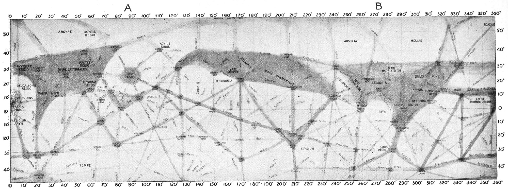
One of the best marked features of Mars is a large, dark, nearly circular spot, surrounded by white, which is called Lacus Solis, or the Lake of the Sun. All observers agree on this. They also agree in a considerable part as to certain faint streaks or channels extending from this lake. But when we go farther we find that they do not agree as to the number of these channels, nor is there an exact agreement as to the surrounding features. It will be interesting to study two drawings of this region made at the Lick Observatory, probably under the best possible conditions, by Campbell and Hussey, respectively.
It is not likely that any observatory is more favoured by its atmosphere for observations on this planet than the Lick on Mount Hamilton. Its telescope is the largest and finest in the world that has ever been especially directed to Mars, and Barnard is one of the most cautious observers. It is therefore very noteworthy that on the face of Mars, as presented to Barnard in the Lick telescope, the features do not quite correspond to the channels of Schiaparelli and Lowell. When the air was exceptionally steady he could see a vast number of minute and very faint markings, which were not visible in the smaller telescopes used by the other observers. These were so intricate that it was impossible to represent them on a drawing. They were not confined to the brighter regions of the planet, or the supposed continents, but were found to be more numerous on the so-called seas. They showed no such regularity that they could be considered as channels running from one region to another. The eye could indeed trace darker streaks here and there, and some of these corresponded to the supposed channels, but they were far more irregular than the features on Schiaparelli's and Lowell's maps.
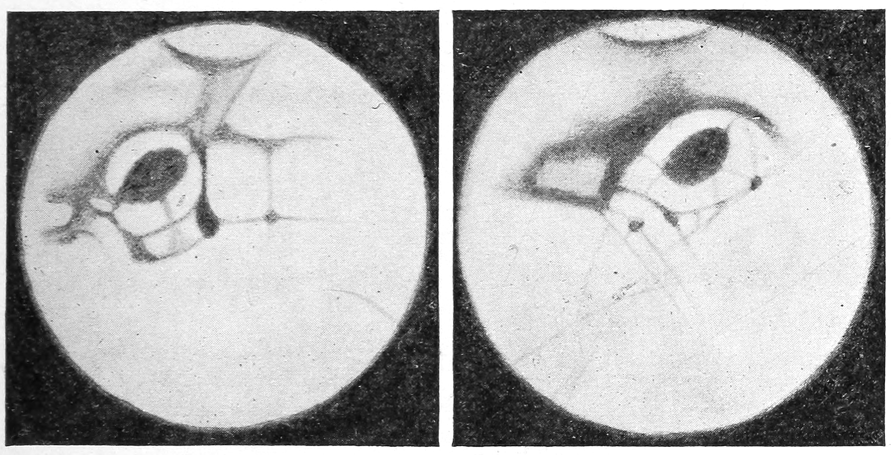
The matter was explained by Cerulli, a careful and industrious Italian observer, in a way which seems very plausible. He found that after he had been studying Mars for two years he was able, by looking at the moon through an opera glass, to see, or fancy he saw, lines and markings upon its surface similar to those of Mars. This phenomenon is not to be regarded as a pure illusion on the one hand, or an exact representation of objects on the other. It grows out of the spontaneous action of the eye in shaping slight and irregular combinations of light and shade, too minute to be separately made out, into regular forms.
The probable facts of the case may be summed up as follows:
1. The surface of Mars is extremely variegated by regions differing in shade, and having no very distinct outlines.
2. There are numerous dark streaks, generally somewhat indefinite in outline, extending through considerable distances across the planet.
3. In many cases the dark portions appear as if chained together to a greater or less extent, and thus give rise to the appearance of long dark channels.
The appearance on which this third phenomenon, which we may regard as identical with that observed by Cerulli, is based, may be well illustrated by looking, with a magnifying glass, at a stippled portrait engraved on steel. Nothing will then be seen but dots, arranged in various lines and curves. But take away the magnifying glass and the eye connects these dots into a well-defined collection of features representing the outlines of the human face. As the eye makes an assemblage of dots into a face, so may it make the minute markings on the planet Mars into the form of long, unbroken channels.
The features which we have hitherto described do not belong to the two polar regions of the planet. Even when the snowcaps have melted away, these regions are seen so obliquely that it would be difficult to trace any well-defined features upon them. The interesting question is whether the caps which cover them are really snow which falls during the Martian winter and melts again when the sun once more shines on the polar regions. To throw light on this question we have to consider some recent results as to the atmosphere of the planet.
All recent observers are agreed that, if Mars has any atmosphere at all, it is much rarer than our own, and contains little or no aqueous vapour. This conclusion is reached from observations both with the telescope and the spectroscope. The most careful eye observations of the planet show that the features are rarely, if ever, obscured by anything which can be considered as clouds in the Martian atmosphere. It is true that the features are not always seen with the same distinctness; but the variations in the appearance are no greater than would be due to the changes in the steadiness and purity of our own atmosphere, through which the astronomer necessarily makes his observations. Although, near the edge of the apparent disk of the planet, the features appear to be softened, as if seen through a greater thickness of the atmosphere, this appearance is, at least in part, due to the obliquity of the line of sight, which prevents our getting so good a view of the edge of the disk as of its centre. Something of the same sort may be noticed when the moon is viewed with the naked eye or an opera glass. Yet it is quite possible that a certain amount of the softening may be due to a rare atmosphere on Mars.
The most careful spectroscopic examination of the planet was made by Campbell, who compared its spectrum with that of the moon. He could not detect the slightest difference between the two spectra. Now, if Mars had an atmosphere capable of exerting a strong selective absorption on light, we should see lines in the spectrum due to this absorption or, at least, some of the lines would be strengthened. Our general conclusion therefore must be that, while it is quite probable that Mars has an atmosphere, it is one of considerable rarity, and does not bear much aqueous vapour. Now snow can fall only through the condensation of aqueous vapour in the atmosphere. It does not therefore seem likely that much snow can fall on the polar regions of Mars.
Another consideration is that the power of the sun's rays to melt snow is necessarily limited by the amount of heat that they convey. In the polar regions of Mars the rays fall with a great obliquity, and even if all the heat conveyed by them were absorbed, only a few feet of snow could be melted in the course of the summer. But far the larger proportion of this heat must be reflected from the white snow, which is also kept cool by the intense radiation into perfectly cold space. We therefore conclude that the amount of snow that can fall and melt around the polar regions of Mars must be very small, being probably measured by inches at the outside.
As the thinnest fall of snow would suffice to produce a white surface, this does not prove that the caps are not snow. But it seems more likely that the appearance is produced by the simple condensation of aqueous vapour upon the intensely cold surface, producing an appearance similar to that of hoarfrost, which is only frozen dew. This seems to me the most plausible explanation of the polar caps. It has also been suggested that the caps may be due to the condensation of carbonic acid. We can only say of this, that the theory, while not impossible, seems to lack probability.
The reader will excuse me from saying anything in this chapter about the possible inhabitants of Mars. He knows just as much of the subject as I do, and that is nothing at all.
No discovery more surprised the whole world than that of two satellites of Mars by Professor Asaph Hall, at the Naval Observatory, in 1877. They had failed of previous detection owing to their extreme minuteness. It was not considered likely that a satellite could be so small as these were found to be, and so no one had taken the trouble to make a careful search with any great telescope. But, when once discovered, they were found to be by no means difficult objects. Of course the ease with which they can be seen depends on the position of Mars both in its orbit and with respect to the earth. They are never visible except when the planet is near its opposition. At each opposition they may be observed for a period of three, four, or even six months, according to circumstances. At an opposition near perihelion they may be seen with a telescope of less than twelve inches diameter; how small a one will show them depends on the skill of the observer, and the pains he takes to cut off the light of the planet from his eye. Generally a telescope ranging from twelve to eighteen inches in diameter is necessary. The difficulty in seeing them arises entirely from the glare of the planet. Could this be eliminated they could doubtless be seen with much smaller instruments. Owing to the glare, the outer one is much easier to see than the inner one, although the inner one is probably the brighter of the two.
Professor Hall assigned the name Deimos to the outer and Phobos to the inner, these being the attendants of Mars in ancient mythology. Phobos has the remarkable peculiarity that it revolves around the planet in less than nine hours, making its period the shortest of any yet known in the solar system. This is little more than one third the time of the planet's rotation on its axis. The consequence of this is that, to the inhabitants of the planet, its nearest moon rises in the west and sets in the east.
Deimos performs its revolution in 30 hours 18 minutes. The result of this rapid motion is that some two days must elapse between its rising and setting.
Phobos is only 3,700 miles from the surface of the planet. It must therefore be an interesting object to the inhabitants of Mars, if they have telescopes.
In size these bodies are the smallest visible to us in the solar system, with the possible exception of Eros and possibly some others of the fainter asteroids. From Professor Pickering's photometric estimates their diameter was estimated to be not very different from seven miles. Their apparent size as we view them is therefore not very different from that of a small apple hanging over the city of Boston, and seen with a telescope from the city of New York. In this respect they form a singular contrast to nearly or quite all of the other satellites, which are generally a thousand miles or more in diameter. The one exception to this is the fifth satellite of Jupiter, to be described in the chapter on Jupiter and its satellites. Although this is much less than a thousand miles in diameter, it must considerably exceed the satellites of Mars in size.
The satellites have been most useful to the astronomer in enabling him to learn the exact mass of Mars. How this is done will be explained in a subsequent chapter, where the methods of weighing the planets are set forth.
The satellites also offer many curious and difficult problems in gravitation. Their orbits seem to have a slight eccentricity, and the position of the planes in which they revolve changes in consequence of the bulging of the planet at its equator, produced by its rotation. The calculation of these changes and their comparison with observations have opened up a field of research in which Professor Hermann Struve, now of the University of Koenigsberg, Germany, has taken a leading part.
The seeming gap in the solar system between the orbits of Mars and Jupiter naturally attracted the attention of astronomers as soon as the distances of the planets had been accurately laid down. It became very striking when Bode announced his law. There was a row of eight numbers in regular progression, and every number but one represented the distance of a planet. That one place was vacant. Was the vacancy real, or was it only because the planet which filled it was so small that it had escaped notice?
This question was settled by Piazzi, an Italian astronomer who had a little observatory in Palermo in Sicily. He was an ardent observer of the heavens, and was engaged in making a catalogue of all the stars whose positions he could lay down with his instrument. On January 1, 1801, he inaugurated the new century by finding a star where none had existed before; and this star soon proved to be the long-looked-for planet. It received the name of Ceres, the goddess of the wheat field.
It was a matter of surprise that the planet should be so small; and when its orbit became known it proved to be very eccentric. But new revelations were soon to come. Before the new planet had completed a revolution after its discovery, Dr. Olbers, a physician of Bremen, who employed his leisure in astronomical observations and researches, found another planet revolving in the same region. Instead of one large planet there were two small ones. He suggested that these might be fragments of a shattered planet, and that, if so, more would probably be found. The latter part of the conjecture proved true. Within the next three years two more of these little bodies were discovered, making four in all.
Thus the matter remained for some forty years. Then, in 1845, Hencke, a German observer, found a fifth planet. The year following a sixth was added, and then commenced the curious series of discoveries which, proceeding year by year, are now carrying the number known rapidly past five hundred.
Up to 1890 these bodies had been found by a few observers who devoted especial attention to the search, and caught the tiny stars as the hunter does game. They would lay traps, so to speak, by mapping the many small stars in some small region of the sky near the ecliptic, familiarise themselves with their arrangement, and then watch for an intruder. Whenever one appeared, it was found to be one of the group of minor planets, and the hunter put it into his bag.
Quite a succession of planet-hunters appeared, some of them little known for any other astronomical work. The most successful of these in the fifties was Goldschmidt, of Paris, a jeweller if I mistake not. Three were discovered by Professor James Ferguson at the Washington Observatory. Palisa, of Vienna, made a record for himself in this work. In this country Professors C. H. F. Peters, of Clinton, and James C. Watson, of Ann Arbor, were very successful. The last three observers carried the number above the two hundred mark.
About 1890 the photographic art was found to offer a much easier and more effective means of finding these objects. The astronomer would point his telescope at the sky and photograph the stars with a pretty long exposure, perhaps half an hour, more or less. The stars proper would be taken on the negative as small round dots. But if a planet happened to be among them it would be in motion, and thus its picture would be taken as a short line, and not as a dot. Instead of scanning the heavens the observer had only to scan his photographic plate, a much easier task, because the planet could be recognised at once by its trail.
Recently a dozen or more of these bodies have been found nearly every year. Of course the unknown ones are smaller and more difficult to find as the years elapse. But there is as yet no sign of a limit to the number. Most of those newly discovered are very minute, yet the number seems to increase with their smallness. Even the larger of these bodies are so small that they appear only as star-like points in ordinary telescopes, and their disks are hard to make out even with the most powerful instruments. So far as can be determined, the diameters of the largest ones, naturally the earliest discovered, are only three or four hundred miles. The size of the smallest can be inferred only in a rough way from their brightness. They may be twenty or thirty miles in diameter.
The orbits of these bodies are for the most part very eccentric. In the case of Polyhymnia, the eccentricity is about 0.33, which means that at perihelion it is one third nearer the sun than its mean distance, and at aphelion one third more. It happens that its mean distance is just about three astronomical units; its least distance from the sun is therefore two, its greatest four, or twice as great as the least.
The large inclination of most of the orbits is also noteworthy. In several cases it exceeds twenty degrees, in that of Pallas it is twenty-eight degrees.
Olbers' idea that these bodies might be fragments of a planet which had been shattered by some explosion is now abandoned. The orbits range through too wide a space ever to have joined, as they would have done if the asteroids had once formed a single body. In the philosophy of our time these bodies have been as we see them since the beginning. On the theory of the nebular hypothesis the matter of all the planets once formed rings of nebulous substance moving round the sun. In the case of all the other planets the material of these rings gradually gathered around the densest point of the ring, thus agglomerating into a single body. But it is supposed that the ring forming the minor planets did not collect in this way, but separated into innumerable fragments.
There is a curious feature of the orbits of these bodies which may throw some light on the question of their origin. I have explained that the planetary orbits are nearly exact circles, but that these circles are not centred on the sun. Now imagine ourselves to look down upon the solar system from an immense height, and suppose that the orbits of the minor planets were visible as finely drawn circles. These circles would appear to interlace and cross each other like an intricate network, filling a broad ring of which the outer diameter would be nearly or quite double the inner one.
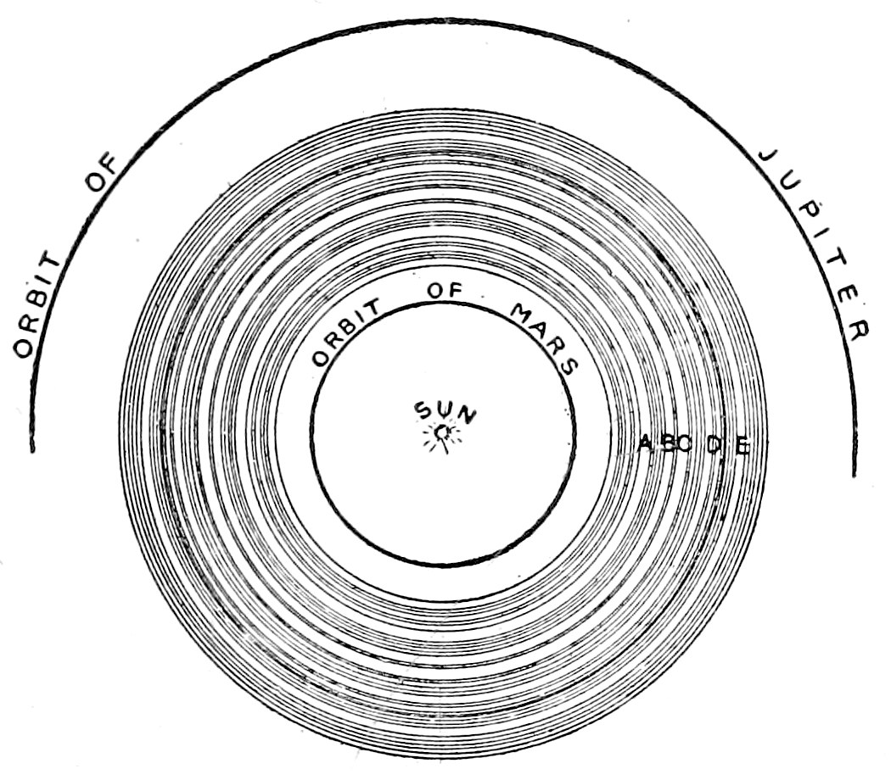
But suppose we could pick all these circles up, as if they were made of wire, and centre them all on the sun, without changing their size. The diameters of the larger ones would be double those of the smaller, so that the circles would fill a broad space, as shown in the figure. Now, the curious fact is that they would not fill the whole space uniformly, but would be collected into distinct groups. These groups are shown on the figures of their orbits, given above, and, on a different plan, and more completely, in the second figure, which is arranged on a plan explained as follows: Every planet performs its revolution in a certain number of days, which is greater the farther the planet from the sun. Since the complete circumference of the orbit measures 1,296,000″, it follows that if we divide this number by the time of revolution, the quotient will show through what angle, on the average, the planet moves along its orbit in one day. This angle is called the mean motion of the planet. In the case of the minor planets it ranges from 400″ to more than 1,000″, being greater the shorter the time of revolution and the nearer the planet is to the sun.
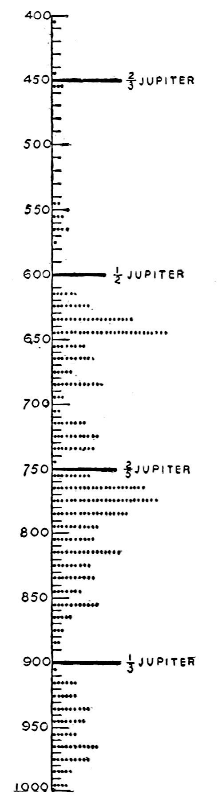
Now we draw a vertical line and mark off on it values of the mean motion, from four hundred to one thousand seconds, differing by ten seconds. Between each pair of marks we make as many points as there are planets having mean motions between the limits. For example, between 550″ and 560″ there are three dots. This means that there are three planets having mean motions between 550″ and 560″. There are also four planets between 560″ and 570″, and one between 570″ and 580″. Then there are no more till we pass 610″, when we find six planets between 610″ and 620″, followed by a multitude of others.
Examining the diagram we are able to distinguish five or six groups. The outermost one is between 400″ and 460″, and is nearest to Jupiter. The times of revolution are not far from eight years. Then there is a wide gap extending to 560″, when we have a group of ten planets between 540″ and 580″. From this point downwards the planets are more numerous, but we find very sparse or empty points at 700″, 750″, and 900″. Now the most singular feature of the case is that these empty spaces are those in which the motion of a planet would have a simple relation to that of Jupiter. A planet with a mean motion of 900″ would make its circuit round the sun in one third the time that Jupiter does; one of 600″ in half the time; one of 750″ in two fifths of the time. It is a law of celestial mechanics that the orbits of planets having these simple relations to another undergo great changes in the course of time from their action on each other. It was therefore supposed by Kirkwood, who first pointed out these gaps in the series, that they arose because a planet within them could not keep its orbit permanently. But it is curious that there is no gap, but on the contrary, a group of planets whose mean motion is nearly two thirds of that of Jupiter. Hence the view is doubtful.
One of these bodies is so exceptional as to attract our special attention. All the hundreds of minor planets known up to 1898 moved between the orbits of Mars and Jupiter. But in the summer of that year Witt, of Berlin, found a planet which, at perihelion, came far within the orbit of Mars—in fact within fourteen million miles of the orbit of the earth. He named it Eros. The eccentricity of its orbit is so great that at aphelion the planet is considerably outside the orbit of Mars. Moreover the two orbits, that of the planet and of Mars, pass through each other like two links of a chain, so that if the orbits were represented of wire they would hang together.
Owing to the inclination of its orbit, this planet seems to wander far outside the limits of the zodiac. When nearest the earth, as it was in 1900, it was for a time so far north that it never set in our middle latitudes, and passed the meridian north of the zenith. This peculiarity of its motion was doubtless one reason why it was not found sooner. During its near approach in the winter of 1900-‘01 it was closely scrutinised and found to vary in brightness from hour to hour. Careful observation showed that these changes went through a regular period of about two and a half hours. At this interval it would fade away a little with great uniformity. Some observers maintained that it was fainter at every alternate minimum of light, so that the real period was five hours. It was supposed that this indicated that the object was really made up of two bodies revolving round each other — perhaps actually joined into one. But it seems more likely that the variations of light were due to there being light and dark regions on the surface of the little planet, which therefore changed in brightness according as bright or dark regions predominated on the surface of the hemisphere turned toward us. The case was made perplexing by the gradual disappearance of the variations after they had been well established by months of observation. There seems to be some mystery in the constitution of this body.
From a scientific point of view Eros is most interesting because, coming so near the earth from time to time, its distance may be measured with great precision, and the distance of the sun as well as the dimensions of the whole solar system thus fixed with greater exactness than by any other method. Unfortunately, the nearest approaches occur only at very long intervals. What is most tantalising is that there was such an approach in 1892 before the object was recognised. At that time it was photographed a number of times at the Harvard Observatory, but was lost in the mass of stars by which it was surrounded. Its distance was, astronomically, only sixteen hundredths, or some fifteen millions of miles, while the nearest approaches of Mars are nearly forty millions. There will not be another approach so near for more than sixty, perhaps not for more than a hundred years.
In 1900 it approached the earth within about thirty millions of miles, and a combined effort was made at various observatories to lay down its exact position from night to night among the stars by photography, with a view to determining its parallax. But the planet was faint, the observations were difficult, and it is not yet known what measure of success was reached.
Variations of light which might be due to a rotation on their axes have been suspected in the case of other asteroids besides Eros, but nothing has yet been settled.
Jupiter, the "giant planet," is, next the sun, the largest body of the solar system. It is, in fact, more than three times as large, and about three times as massive as all the other planets put together. Yet, such is the preponderating mass of our central luminary that the mass of Jupiter is less than one thousandth part that of the sun.
This planet is in opposition in September, 1903, October, 1904, November, 1905, and so on for several years afterward, about a month later every year. Near the time of opposition it may easily be recognised in the evening sky, both by its brightness and its colour. It is then, next to Venus, the brightest star-like object in the heavens. It can easily be distinguished from Mars by its whiter colour. If we look at it with a telescope of the smallest size, even with a good ordinary spy-glass, we shall readily see that instead of being a bright point, like a star, it is a globe of very appreciable dimensions. We shall also see what look like two shadowy belts crossing the disk. These were noticed and pictured two hundred years ago by Huygens. As greater telescopic power was used it was found that these seeming belts resolved themselves into very variegated cloud-like forms, and that they vary, not only from month to month, but even from night to night. By careful observation on the aspect which they present from hour to hour, and from night to night, it was found that the planet rotates on its axis in about 9 hours 55 minutes. The astronomer may therefore in the course of a single night see every part of the surface of the planet presented to his view in succession.
Two features presented by the planet will at once strike the careful observer with the telescope. One of these is that the disk does not seem uniformly bright, but gradually shades off near the limb. The latter, instead of being bright and hard is somewhat soft and diffuse. In this respect the appearance forms quite a contrast to that presented by the moon or Mars. The shading off toward the edge is sometimes attributed to a dense atmosphere surrounding the planet. While this is possible, it is by no means certain.
The other feature to which we allude is an ellipticity of the disk. Instead of being perfectly round, the planet is flattened at the poles, like our earth, but in a much greater degree. The most careful observer, viewing the earth from another planet, would see no deviation from the spherical form, but, viewing Jupiter, the deviation is very perceptible. This is owing to its rapid rotation on its axis, which causes its equatorial regions to bulge out, as, to a smaller degree, in the case of the earth.
The features of Jupiter, as we see them with a telescope, are almost as varied as those of the clouds which we see in our atmosphere. There are commonly elongated strata of clouds, apparently due to the same cause that produces stratified clouds on the earth, namely, currents of air. Among these clouds round white spots are frequently seen. The clouds are sometimes of a rosy tinge, especially those near the equator. They are darkest and most strongly marked in middle latitudes, both north and south of the equatorial regions. It is this that produces the appearance of dark belts in a small telescope.
The appearance of Jupiter is, in almost every point, very different from that of Mars or Venus. Comparing it with Mars, the most strongly marked difference consists in the entire absence of permanent features. Maps of Mars may be constructed and their correctness tested by observations generation after generation, but owing to the absence of permanence, no such thing as a map of Jupiter is possible.
Notwithstanding this lack of permanence, features have been known to endure through a number of years, and some of them may be permanent. The most remarkable of these was the great red spot, which appeared in middle latitudes, on the southern hemisphere of the planet, about the year 1878. For several years it was a very distinct object, readily distinguished by its colour. After ten years it began to fade away, but not at a uniform rate. Sometimes it would seem to disappear entirely, then would brighten up once more. These changes continued but, since 1892, faintness or invisibility has been the rule. If the spot finally disappeared, it was in so uncertain a way that no exact date for the last observation of it can be given. Some observers with good eyes still report it to be visible from time to time.
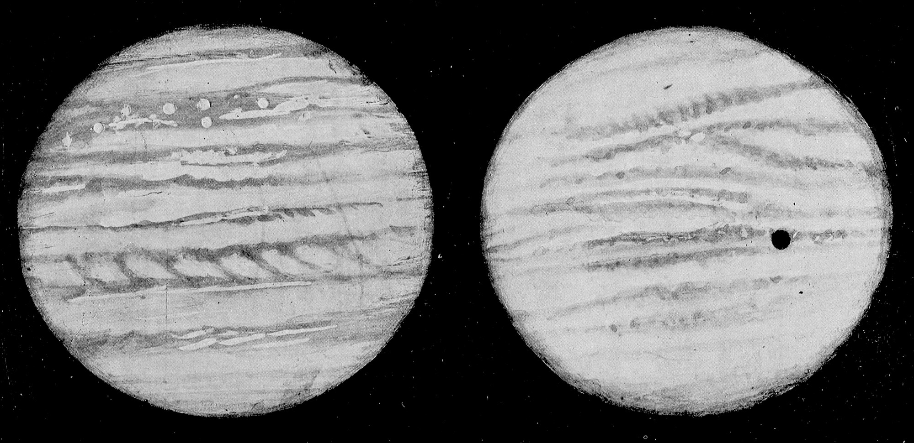
The question of the constitution of this curious planet is still an unsettled one. There is no one hypothesis that readily explains all the facts, which suggest many points, but prove few, unless negatively.
Perhaps the most remarkable feature of the planet is its small density. Its diameter is about eleven times that of the earth. It follows that, in volume, it must exceed the earth more than thirteen hundred times. But its mass is only a little more than three hundred times that of the earth. It follows from this that its density is much less than that of the earth; as a matter of fact, it is only about one third greater than the density of water. A simple computation shows that the force of gravity at its surface is between two and three times that at the surface of the earth. Under this enormous gravitation we might suppose its interior to be enormously compressed, and its density to be great in comparison. Such would certainly be the case were it made up of solid or fluid matter of the same kind that composes the surface of the earth. From this fact alone the conclusion would be that its outer portions at least were composed of aeriform matter. But how reconcile this form with the endurance of the red spot through twenty-five years? This is the real difficulty of the case.
Nevertheless, the hypothesis is one which we are forced to accept without great modification. Besides the evidence of vapour as shown by the constantly changing aspect of the planet, we have another almost conclusive piece of evidence in the law of rotation. It is found that Jupiter resembles the sun in that its equatorial region rotates in less time than the regions north of middle latitude, although the circuit they have to make is longer. This is probably a law of rotation of gaseous bodies in general. It seems, therefore, that Jupiter has a greater or less resemblance to the sun in its physical constitution, a view which quite corresponds with its aspect in the telescope. The difference in the time of rotation at the equator and in middle latitudes is, so far as we yet know, about five minutes. That is to say, the equatorial region rotates in nine hours fifty minutes and those in middle latitudes in nine hours fifty-five minutes. This corresponds to a difference of velocity of the motion between the two amounting to about two hundred miles an hour; a seemingly impossible difference were the surface liquid.
It is a singular fact that no well-defined law of rotation in different latitudes has yet been made out, as has been done in the case of the sun. Were we to accept the recults of the meagre observations at our disposal we might be led to the conclusion that the difference of time is not a gradually varying quantity, as we go from the equator toward the poles, but that the change of five minutes occurs very near a certain latitude and almost suddenly. But we cannot assume this to be the case without more observations than are yet on record. The subject is one of which an accurate investigation is greatly to be desired.
Yet another resemblance between Jupiter and the sun is that they are both brighter in the centre of their disk than toward the circumference. In the case of Jupiter, the shading off is very well marked. The extreme circumference especially is more softened than that of any of the other planets.
The apparent resemblance between the surfaces of these bodies, taken in connection with the brightness of the planet, has led to the question whether Jupiter may not be, in whole or in part, self-luminous. This again is a question which needs investigation. The idea that the planet can emit much light of its own seems to be negatived by the fact that the satellites completely disappear when they pass into its shadow. We may therefore say with entire certainty that Jupiter does not give enough light to enable us to see a satellite by that light alone. We can hardly suppose that this would be the case if the satellite received one per cent as much light from the planet as it does from the sun. It is also found that the light which Jupiter sends out is somewhat less than that which it receives from the sun. That is to say, all the light which it gives out, when estimated in quantity, may be reflected light, without supposing the planet brighter than white bodies on the surface of the earth. But this still leaves open the question whether the white spots, sometimes so much brighter than the rest of the planet, may not give us more light than can fall upon them. This also is a question not yet investigated.
The hypothesis which best lends itself to all the facts seems to be that the planet has a solid nucleus, of which the density may be as great as that of the earth or any other solid planet, and that the small average density of the entire mass is due to the vapourous character of the matter which surrounds this nucleus. In all probability the nucleus is at a very high temperature, even approximating that at the surface of the sun, but this temperature gradually diminishes as we ascend through the gaseous atmosphere, as we suppose to be the case with the sun; hence it may happen that, at the surface, none of the material that we see is at a high enough temperature to radiate a sensible amount of heat.
On the whole we may describe Jupiter as a small sun of which the surface has cooled off till it no longer emits light.
When Galileo first turned his little telescope on the planet Jupiter he was delighted and surprised to find it accompanied by four minute companions. Watching them from night to night, he found them to be in revolution around their central body as, upon the theory not fully accepted in his time, the planets revolve around the sun. This remarkable resemblance to the solar system was a strong point in favor of the Copernican Theory.
These bodies can be seen with a common spy-glass, or even a good opera glass. It has even been supposed that good eyes sometimes see them without optical assistance. They are certainly as bright as the smallest stars visible to the naked eye, yet the glare of the planet would seem to be an insuperable obstacle to their visibility, even to the keenest vision. A story has been told, by Arago, I think, of a woman who professed to be able to see them at any time and even pointed out their positions. It was found, however, that she described them as on the opposite side of the planet to that on which they were really situated. It was then found, or inferred, that she took the positions from an astronomical ephemeris, in which diagrams of them were given, but in which the pictures were made upside down in order that the satellites might be seen as in an ordinary inverting telescope. But it seems quite likely that, when the two outer satellites chance to be nearly in the same straight line, they may be visible by their combined light.
From the measures of Barnard it may be inferred that these bodies range somewhere between two and three thousand miles in diameter. Hence, they do not differ greatly from our moon in size.
Only four satellites were known until 1892; then Barnard, with the great Lick telescope, discovered a fifth, much nearer the planet than the four others. It makes a revolution in a little less than twelve hours, the shortest periodic time known except that of the inner satellite of Mars. Still, however, it is a little longer than the rotation time of the planet. The next outer one, or the innermost of the four previously known, still called the first satellite, revolves in about one day eighteen and a half hours, while the outer one requires nearly seventy days to perform its circuit.
In its visibility the fifth satellite is the most difficult known object in the solar system. Through only a few of the most powerful telescopes of the world has it ever certainly been seen by the human eye. Its orbit is decidedly eccentric. Owing to the ellipticity of the planet, it possesses the remarkable peculiarity that its major axis, and, therefore, the perihelion point of its orbit, performs a complete revolution in about a year.
It has sometimes been questioned whether these satellites are round bodies, like the planets and most other satellites. Some observers, especially Barnard and W. H. Pickering, noticed curious changes in the form of the first satellite as it was crossing the surface of the planet. At one time it looked like a double body. But Barnard, by careful and repeated study, showed that this appearance was partly due to the varying shade of the background on which the satellite was seen projected upon the planet, and partly to the differences in the shade of various parts of the satellite itself.
During their course around the planet these bodies present many interesting phenomena, which can be observed with a moderate sized telescope. These are their eclipses and transits. Of course Jupiter, like any other opaque body, casts a shadow. As the satellites make their round they nearly always pass through the shadow during that part of their course which is beyond the planet. Exceptions sometimes occur in the case of the fourth and most distant satellite, which may pass above or below the shadow, as our moon passes above or below that of the earth. When a satellite enters the shadow, it is seen to fade away gradually, and finally to disappear from sight altogether.
For the same reason the satellites generally pass across the disk of the planet in that part of their course which lies on this side of it. The general rule is that, when a satellite has impinged on the planet, it looks brighter than the latter, owing to the darkness of the planet's limb. But, as it approaches the central regions, it may look darker than the background of the planet. Of course this does not arise from any change in the brightness of the satellite, but only from the fact, already mentioned, that the planet is brighter in its central regions than at its limb.
Yet more interesting and beautiful is the shadow of a satellite which, under such circumstances, may often be seen upon the planet, looking like a black body crossing alongside the satellite itself. Such a shadow is shown in the picture of Jupiter, Figs. 37–38.
The phenomena of Jupiter's satellites, including their transits and those of their shadows, are all predicted in the astronomical ephemerides, so that an observer can always know when to look for an eclipse or transit.
The eclipses of the inner of the four older satellites occur at intervals of less than two days. By noting their times, an observer in unknown regions of the earth can determine his longitude more easily than by any other method. He has first to determine the error of his watch on local time by certain simple astronomical observations, quite familiar to astronomers and navigators. He thus finds the local time at which an eclipse of the satellite takes place. He compares this with the time predicted in the ephemeris. The difference gives his longitude according to the system set forth in our chapter on Time and Longitude.
The principal drawback of this method is that it is not very accurate. Observations of the time of such an eclipse are doubtful to a large fraction of a minute. This corresponds to 15 minutes of longitude, or 15 nautical miles at the equator. In the polar regions the effect of the error is much smaller, owing to the convergence of the meridians. The method is, therefore, most valuable to polar explorers.
Among the planets, Saturn is next to Jupiter in size and mass. It performs its revolution round the sun in twenty-nine and a half years. When the planet is visible the casual observer will generally be able to recognise it without difficulty by the slightly reddish tint of its light, and by its position in the heavens. During the next few years it will be in opposition first in summer and then in autumn, about twelve or thirteen days later each year. Starting from August, 1903, opposition will occur in August of 1904-'05, September of 1906-'08, October of 1909-'10, and so on. At these times Saturn will be seen each evening after dark in the eastern or southeastern sky, moving toward the south as the evening advances. It looks a good deal like Arcturus, which, for a few years to come, will be visible at the same seasons, only high up in the south or southwest, or lower down in the west.
Although Saturn is far from being as bright as Jupiter, its rings make it the most magnificent object in the solar system. There is nothing else like them in the heavens, and it is not surprising that they were an enigma to the early observers with the telescope. To Galileo they first appeared as two handles to the planet. After a year or two they disappeared from his view. We now know that this occurred because, owing to the motion of the planet in its orbit, they were seen edge-on, and are then so thin as to be invisible in a telescope as imperfect as Galileo's. But the disappearance was a source of great embarrassment to the Tuscan philosopher, who is said to have feared that he had been the victim of some illusion on the subject, and ceased to observe Saturn. He was then growing old, and left to others the task of continuing his observations. Of course the handles soon reappeared, but there was no way of learning what they were. After more than forty years the riddle was solved by Huyghens, the great Dutch astronomer and physicist, who announced that the planet was surrounded by a thin plane ring, nowhere touching it, and inclined to the ecliptic.
Besides his rings, Saturn is surrounded by a retinue of eight satellites—a greater number than any other planet. The existence of a ninth has been suspected, but awaits confirmation. They are very unequal in size and distance from the planet. One, Titan, may be seen with a small telescope; the faintest, only in very powerful ones.
Titan was discovered by Huyghens just as he had made out the true nature of the rings. And hereby hangs a little tale which has only recently come out through the publication of Huyghens's correspondence. Following a practice of the time, the astronomer sought to secure priority for his discovery without making it known, by concealing it in an anagram, a collection of letters which, when properly arranged, would inform the reader that the companion of Saturn made its revolution in fifteen days. A copy of this was sent to Wallis, the celebrated English mathematician. In his reply the latter thanked Huyghens for his attention, and said he also had something to say, and gave a collection of letters longer than that of Huyghens. When the latter interpreted his anagram to Wallis, he was surprised to receive in reply a solution of the Wallis anagram announcing the very same discovery, but, of course, in different language and at greater length. It turned out that Wallis, who was expert in ciphers, wanted to demonstrate the futility of the system, and had managed to arrange his own letters so as to express the discovery, after he knew what it was. Huyghens did not appreciate the joke.
The Paris Observatory was founded in 1666 as one of the great scientific institutions of France which adorned the reign of Louis XIV. Here Cassini discovered the division in the ring, showing that the latter was really composed of two, one outside the other, but in the same plane. The outer of these rings has somewhat the appearance of being again divided, by a line called the Encke division, after the astronomer who first noticed it, but the exact nature of this division is still in doubt. It certainly is not sharp and well defined like the Cassini division, but only a slight shade.
To understand the varying appearance of the rings we give a figure showing how they and the planet would look if we could see them perpendicularly (which we never can). We notice first the dark Cassini division, separating the rings into two, an inner and an outer one, the latter being the narrower. Then, on the outer ring, we see the faint and grey Encke division, which is much less marked and much harder to see than the other. Passing to the inner ring, the latter shades off gradually on the inner edge, where there is a grey border called the "crape ring." This was first described by Bond, of the Harvard Observatory, and was long supposed to be a separate and distinct ring. But careful observation shows that such is not the case. The crape ring joins on to the ring outside of it, and the latter merely fades away into the other.
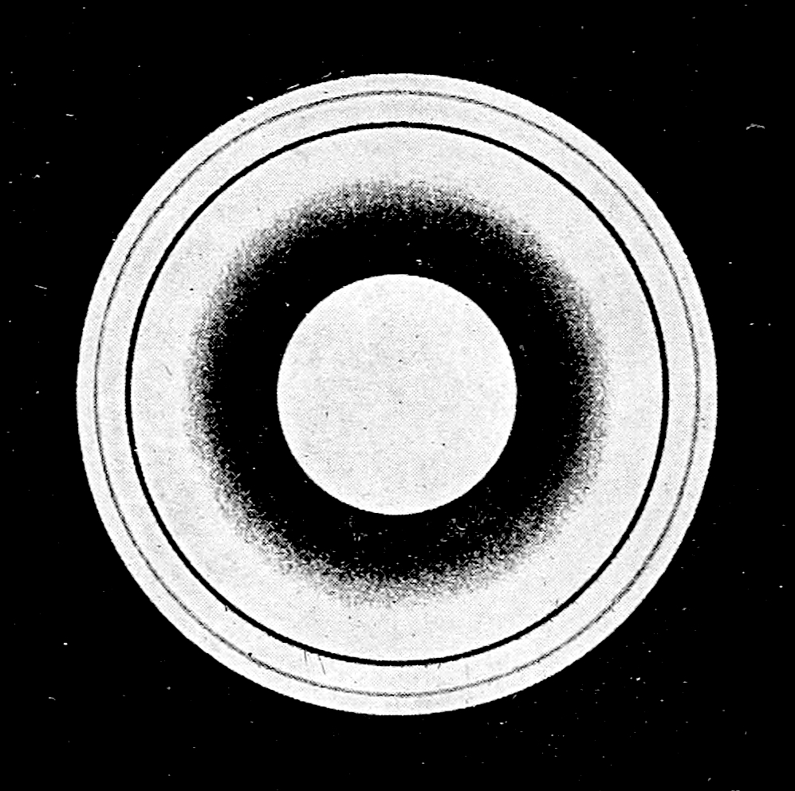
The rings of Saturn are inclined about twenty-seven degrees to the plane of its orbit, and they keep the same direction in space as the planet revolves round the sun. The effect of this will be seen by the figure, which shows the orbit of the planet round the sun in perspective. When the planet is at A the sun shines on the north (upper) side of the ring. Seven years later, when the planet is at B, the ring is presented to the sun edgewise. After passing B the sun shines on the south (lower) side at an inclination which continually increases till the planet makes C, when the inclination is at its greatest, twenty-seven degrees. Then it diminishes as the planet passes to D, at which point the edge of the ring is again presented to the sun. From this point to A and B the sun again shines on the north side.
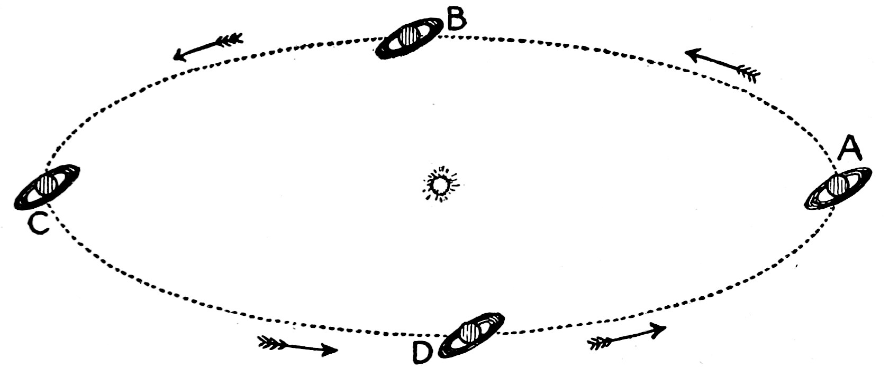
The earth is so near the sun in comparison with Saturn that the rings appear to us nearly as they would to an observer on the sun. There is a period of fifteen years, during which we see the north side of the ring, and at the middle of which we see them at the widest angle. As the years advance, the angle grows narrower and the rings are seen more and more edgewise till they close up into a mere line crossing the planet, or perhaps disappear entirely. Then they open out again, to close up in another fifteen years. A disappearance occurred in 1892 and another will take place in 1907.
With this view of what the shape of the rings really is, we may understand their appearance to us. The rings are always seen very obliquely, never at a greater angle than twenty-seven degrees. The general outline presented by the planet and rings is that seen in Figure 40. The best views are obtained when the rings are seen at a considerable angle. The divisions and the crape ring are then seen. The shadow of the globe of the planet on the ring will be seen as a dark notch. A dark line crossing the planet like a border to the inner ring is the shadow of the ring on the planet.
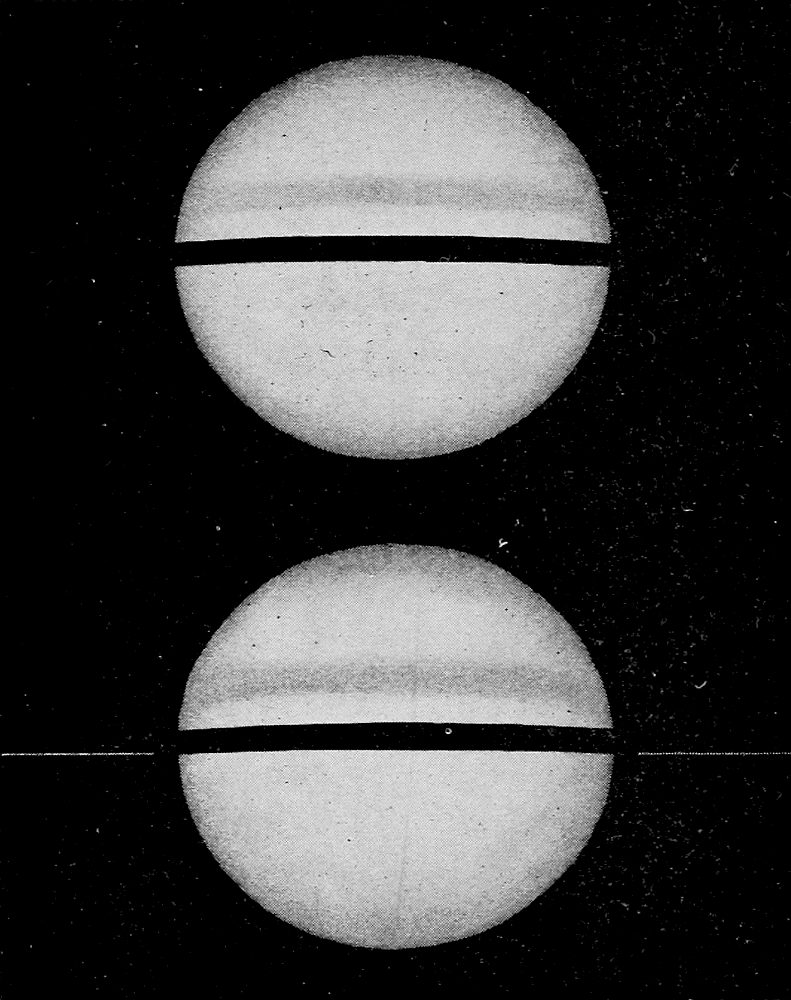
Very interesting are rather rare occasions when the plane of the ring passes between the earth and the sun. Then the sun shines on one side of the ring while the other side is presented to us, though, of course, at a very small angle. The chances for observing Saturn at such times are rather few, especially in recent times. At both the last occasions, 1877 and 1892, this only happened for a few days, when the planet was not well situated for these observations. Nevertheless, in October, 1892, Barnard got a look at it from the Lick Observatory, and found that the rings were totally invisible, though their shadow could be seen on the planet. This shows that the rings are so thin that their edges are invisible in a powerful telescope.
When it became accepted that the laws of mechanics, as we learn them on the earth, govern the motions of the heavenly bodies, another riddle was presented by the rings of Saturn. What keeps the rings in place? What keeps the planet from running against the inner ring and producing, to modify Addison's verse, a "wreck of matter and crush of worlds" that would lay the whole beautiful structure in ruins? It was for a time supposed that a liquid ring might be proof against such a catastrophe, and then it was shown that such was not the case. Finally it was made clear that the rings could not be cohering bodies of any kind, but were merely clouds of minute bodies, perhaps little satellites, perhaps only particles like pebbles or dust, or perhaps like a cloud of smoke. This view had to be accepted, but was long without direct proof. The latter was finally brought out by Keeler with his spectroscope. He found that when the light of the rings was spread out into a spectrum, the dark spectral lines did not go straight across it, but were bent and broken in such a way as to show that the matter of the rings was revolving round the planet at unequal speeds. At the outer edge it revolved most slowly; the speed continually increased toward the inner edge, and was everywhere the same that a satellite would have if it revolved round the planet at that distance. This most beautiful discovery was made at the Allegheny Observatory near Pittsburg, Pa.
In making known his discovery of the satellite Titan, Huyghens congratulated himself that the solar system was now complete. There were now seven great bodies and seven small ones, the magic number of each. But within the next thirty years Cassini exploded all this mysticism by discovering four more satellites. Then, after the lapse of a century, the great Herschel found yet two more. Finally, the eighth was found by Bond at the Harvard Observatory in 1848.
In 1898 photographs of the sky taken at the South American branch of the Harvard Observatory showed a star near Saturn, but farther than the outermost known satellite, which seemed to be in a different position each night. It has not yet been decided whether this was a satellite, because Saturn has been among the countless faint stars of the Milky Way, among which the satellite might be lost.
The following is a list of the eight satellites, with their distances from the planet in radii of the latter, their times of revolution, and the discoverer of each:
No. | Name. | Discoverer. | Date of Discovery. | Distance from Planet. | Time of Revolution. | | | | | d. h. 1 | Mimas | Herschel | 1789 | 3.3 | 0 23 2 | Enceledas | Herschel | 1789 | 4.3 | 1 9 3 | Tethys | Cassini | 1684 | 5.3 | 1 21 4 | Dione | Cassini | 1684 | 6.8 | 2 18 5 | Rhea | Cassini | 1672 | 9.5 | 4 12 6 | Titan | Huyghens | 1655 | 21.7 | 15 23 7 | Hyperion | Bond | 1848 | 26.8 | 21 7 8 | Japetus | Cassini | 1671 | 64.4 | 70 22
The most noteworthy features of this list are the wide range of distances among the satellites, and the relation between the times of revolution of the four inner ones. The five inner ones seem to form a group by themselves. Then there is a gap exceeding in breadth the distance of the innermost of the five, when we have another group of two, Titan and Hyperion. Then there is a gap wider than the distance of Hyperion, outside of which comes Japetus, the outermost yet known.
A curious relation among the periods is that the period of the third satellite is almost exactly twice that of the first; and that of the fourth almost twice that of the second. Also, four periods of Titan are almost exactly equal to three of Hyperion.
The result of the latter relation is a certain very curious action of these two satellites on each other, through their mutual gravitation. To show this we give a diagram of the orbits. That of Hyperion, the outer of the two, is very eccentric, as will be seen by the figure. Suppose the satellites to be in conjunction at a certain moment; Titan, the inner and larger of the two at a point A, Hyperion at the point a just outside. At the end of sixty-five days Titan will have made three revolutions and Hyperion four, which will bring them again into conjunction at very nearly, but not exactly, the same point. Titan will have reached the point B, and Hyperion b. At a third conjunction the two will be a little above the line Bb, and so on. Really the conjunctions occur closer together than we have been able to draw them in the figure. In the course of nineteen years the point of conjunction will have slowly moved all round the circle, and the satellites will again be in conjunction at A.
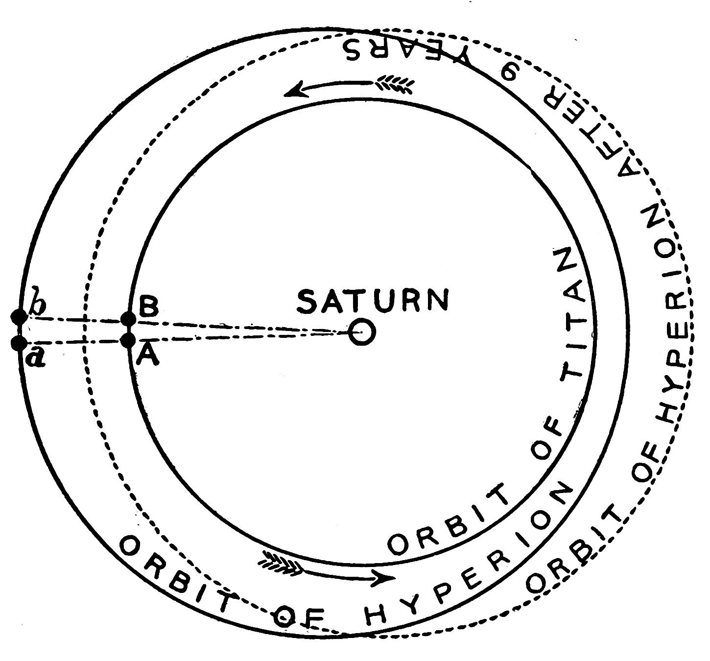
Now the effect of this slow motion of the conjunction-point round the circle is that the orbit of Hyperion, or, more exactly, its longer axis, is carried round with the conjunction-point, so that the conjunctions always occur where the distance of the two orbits is greatest. The dotted line shows how the orbit of Hyperion is thus carried halfway round in nine years.
An interesting feature of this action is that it is, so far as we know, unique, there being no case like it elsewhere in the solar system. But there may be something quite similar in the mutual action of the first and third, and of the second and fourth satellites of Saturn on each other.
A yet more striking effect of the mutual attraction of the matter composing the rings and satellites is that, excepting the outer satellite of all, these bodies all keep exactly in the same plane. The effect of the sun's attraction, if there were nothing to counteract it, would be that in a few thousand years the orbits of these bodies would be drawn around into different planes, all having, however, the same inclination to the plane of the orbit of Saturn. But, by their mutual attraction, the planes of the orbits are all kept together as if they were solidly attached to the planet.
There is a remarkable resemblance between the physical make-up of this planet and that of its neighbour Jupiter. They are alike remarkable for their small density, that of Saturn being even less than that of water. Another point of likeness is the rapid rotation, Saturn turning on its axis in 10 hours 14 minutes, a little more than the period of Jupiter. The surface of the planet also seems to be variegated with cloud-like forms, similar to those of Jupiter, but far fainter, so that they cannot be seen with any distinctness.
What has been said of the probable cause of the small density of Jupiter applies equally to Saturn. The probability is that the planet has a comparatively small but massive nucleus, surrounded by an immense atmosphere, and that what we see is only the outer surface of the atmosphere.
A curious fact which bears on this view is that the satellite Titan is far denser than the planet. Its cubical contents are about one ten-thousandth those of the planet. But its mass, as found from the motion of Hyperion, is one forty-three-hundredth that of the planet.
Uranus is the seventh of the major planets in the order of distance from the sun. It is commonly considered a telescopic planet; but one having good eyesight can easily see Uranus without artificial help, if he only knows exactly where to look for it, so as to distinguish it from the numerous small stars having the same appearance. Had any of the ancient astronomers made so thorough an examination of the sky from night to night as Dr. Gould did of the southern heavens after he founded the Cordoba Observatory, they would have upset the notion that there were only seven planets.
Uranus was discovered in 1782 by Sir William Herschel, who at first supposed it to be the nucleus of a comet. But its motion soon showed that this could not be the case, and before long the discoverer found that it was a new addition to the solar system. In gratitude to his royal benefactor, George III, he proposed to call the planet Georgium Sidus, a name which was continued in England for some seventy years. Some continental astronomers proposed that it should be called after its discoverer, and the name Herschel was often assigned to it. But by 1850 the name Uranus, originally proposed by Bode (author of the "Law"), and always used in Germany, became universal.
When the orbit of the planet was determined, so that its course in former years could be mapped out, the curious fact was brought to light that it had been seen and recorded nearly a century before, as well as a few years previously. Flamsteed, Astronomer Royal of England, while engaged in cataloguing the stars, had marked it down as a star on five occasions between 1690 and 1715. What was yet more singular, Lemonnier, at the Paris Observatory, had recorded it eight times in the course of two months, December, 1768, and January, 1769. But he had never reduced and compared his observations, and not till Herschel announced the planet did Lemonnier know how great a prize had lain for ten years within his grasp.
The period of revolution of Uranus is eighty-four years, so that its position in the sky changes but slowly from year to year. During the first ten years of our century it will be in or near the region of the Milky Way, which we see in summer and autumn, low down in the southern sky. This will make it difficult of detection by the naked eye.
The distance of Uranus is about twice that of Saturn. In astronomical units it is 19.2; in our familiar measures 1,790,000,000 miles, or 2,870,000,000 kilometres.
Owing to this great distance, it is hard to see with certainty any features on its surface. In a good telescope it appears as a pale disk with a greenish hue. Some observers have fancied that they saw faintly marked features on its surface, but this is probably an illusion. We may regard it as certain that it rotates on its axis; but no ocular evidence of this has ever been obtained, and of course the period is unknown. But the measures of Barnard showed a slight ellipticity of the disk which, if real, would prove a rapid rotation.
The spectroscope shows that the constitution of Uranus is materially different from that of any of the six planets which revolve between it and the sun. None of the latter gives a spectrum which is strikingly different from that of ordinary sunlight. But when the light of Uranus is spread out into a spectrum, a number of more or less shaded bands are seen, totally unlike the lines of an ordinary spectrum. Whether these bands are really what they appear, or whether they are composed of a multitude of fine dark lines invisible singly, owing to the faintness of the light, has not yet been ascertained; but the probabilities are that such is the case. Whether it is or not, the spectrum indicates that the light reflected from the planet has passed through a dense medium of a constitution quite different from that of our atmosphere. But it is as yet impossible to determine the nature of this medium.
There are four of these bodies moving round Uranus as he travels in his orbit. The two outer ones can be seen in a telescope of twelve inches aperture or more; the inner ones only in the most powerful telescopes of the world. The difficulty of seeing them does not arise from their small size, for they are probably nearly or quite as large as the others, but from their being blotted out by the glare of the planet. The history of these bodies is somewhat peculiar. Besides the two brighter ones, Herschel, before 1800, thought he caught glimpses from time to time of four others, and thus it happened that for more than half a century Uranus was credited with six satellites. This was because during all that time no telescope was made which could claim superiority over Herschel's.
Then about 1845, Lassell, of England, undertook the making of reflecting telescopes, and produced his two great instruments, one of two, the other of four feet aperture. The latter he afterwards took to the Island of Malta, in order to make observations under the fine sky of the Mediterranean. Here he and his assistant entered upon a careful examination of Uranus, and reached the conclusion that none of the additional satellites supposed by Herschel had any existence. But, on the other hand, two new ones were found so near the planet that they could not have been seen by any previous observer. During the next twenty years these newly found bodies were looked for in vain with the best telescopes then in use in Europe, and some astronomers professed to doubt their existence. But in the winter of 1878 they were found with the twenty-six-inch Washington telescope, which had just been completed, and were shown to move in exact accordance with the observations of Lassell.
The most remarkable feature of these bodies is that their orbits are nearly perpendicular to the orbit of the planet. The result is that there are two opposite points of the latter orbit where that of the satellite is seen edgewise. When Uranus is near either of these points, we, from the earth, see the satellites moving as if swinging up and down in a north and south direction on each side of the planet, like the bob of a pendulum. Then, as the planet moves on, the apparent orbits slowly open out. At the end of twenty years we see them perpendicularly. They then seem to us almost circular, but appear to close up again year after year as the planet moves on its course. The orbits were last seen edgewise in 1882, and will be again so seen about 1924. For several years to come the orbits are seen from a nearly perpendicular standpoint, which is the most favourable condition for observing the satellites.
It is quite possible that continued observations of these bodies will yet enable the astronomer to reach some conclusion to the hitherto unsolved problem of the rotation of Uranus on its axis. In the cases of Mars, Jupiter, and Saturn, the satellites revolve very nearly in the plane of the equators of the several planets to which they belong. If this is true of Uranus, it would follow that the equator of the planet was nearly perpendicular to its orbit, and that its north pole, at two opposite points in its orbit, would point almost exactly to the sun. Such being the case, the seasons would be vastly more marked than they are on our earth. Only on or near the equator of Uranus would a denizen of the planet see the sun every day. If he lived in middle latitudes there would be a period equal in length to five or ten of our years during which the sun would never reach his horizon. Then, moving rapidly upwards, it would rise and set, giving him day and night, but in time it would get so far up toward the north pole that it would never set during a period equal to that at which it never rose.
The fact that all the satellites revolve in almost exactly the same plane gives some colour to this view, but does not quite prove it, because it is not impossible that their planes are kept together by their mutual action. If, however, this is the case, and if the equator of Uranus does not coincide with the orbits, the latter will, in the course of centuries, undergo a change which our successors will be able to determine. In this way they will be enabled to learn something of the equator and poles of Uranus, even if their telescopes are not powerful enough to afford any visual evidence on the subject.
So far as yet known, Neptune is the outermost planet of our solar system. In size and mass it is not very different from Uranus, but its greater distance, 30 astronomical units, instead of 19.2, makes it fainter and harder to see. It is far below the limit of visibility by the naked eye, but quite a moderate-sized telescope would show it if one could only distinguish it from the numerous stars of similar brightness that stud the heavens. This needs astronomical appliances of a more refined and complex sort.
The disk of Neptune is to be made out only with a telescope of considerable power. It is then seen to be of a bluish or leaden tint, perceptibly different from the sea-green of Uranus. Of course nothing can be known by direct observation about its rotation on its axis. Its spectrum shows bands like those of Uranus, and it seems likely that the two bodies are much alike in their constitution.
The discovery of Neptune in 1846 is regarded as one of the most remarkable triumphs of mathematical astronomy. Its existence was made known by its attraction on the planet Uranus before any other evidence had been brought out. The history of the circumstances leading to the discovery is so interesting that we shall briefly mention its main points.
During the first twenty years of the nineteenth century Bouvard, of Paris, an eminent mathematical astronomer, prepared new tables of the motions of Jupiter, Saturn, and Uranus, then supposed to be the three outermost planets. He took the deviations of these planets, produced by their attraction on each other, from the calculations of Laplace. He succeeded fairly well in fitting his tables to the observed motions of Jupiter and Saturn, but found that all his efforts to make tables that would agree with the observed positions of Uranus were fruitless. If he considered only the observations made since the discovery by Herschel, he could get along; but no agreement could be obtained with those made previously by Flamsteed and Lemonnier, when the planet was supposed to be a fixed star. So he rejected these old observations, fitted his orbit into the modern ones, and published his tables. But it was soon found that the planet began to move away from its calculated position, and astronomers began to wonder what was the matter. It was true that the deviation, measured by a naked eye standard, was very small; in fact, if there had been two planets, one in the real and one in the calculated position, the naked eye could not have distinguished them from a single star. But the telescope would have shown them well separated.
Thus the case stood until 1845. At that time there lived in Paris a young mathematical astronomer, Leverrier, who had already made a name in his science, having communicated to the Academy of Sciences some researches which gave Arago a very high opinion of his abilities. Arago called his attention to the case of Uranus and suggested that he should investigate the subject. The idea occurred to Leverrier that the deviations were probably caused by the attraction of an unknown planet outside of Uranus. He proceeded to calculate in what orbit a planet should move to produce them, and laid his result before the Academy of Sciences in the summer of 1846.
It happened that, before Leverrier commenced his work, an English student at the University of Cambridge, Mr. John C. Adams, had the same idea and set about the same work. He got the result even before Leverrier did, and communicated it to the Astronomer Royal. Both computers calculated the present position of the unknown planet, so that, were it possible to distinguish it from a fixed star, it would only have been necessary to search in the region indicated in order to find the planet. Unfortunately, however, Airy was incredulous as to the matter, and did not think the chance of finding the planet sufficient to go through the laborious operation of a search until his attention was attracted by the prediction of Leverrier, and the close agreement between the two computers was remarked.
The problem of finding the planet was now taken up. Very thorough observations were made upon the stars in the region by Professor Challis at the Cambridge Observatory. I must explain that, as it was not easy with the imperfect instruments of that time to distinguish so small a planet from the great number of fixed stars which studded the heavens around it, it was necessary to proceed by determining the position of as many stars as possible several times, in order that, by a comparison of the observations, it could be determined whether any of them had moved out of its place.
While Mr. Challis was engaged in this work it occurred to Leverrier that the astronomers of Berlin were mapping the heavens. He therefore wrote to Encke, the director of the Berlin Observatory, suggesting that they should look for the planet. Now it happened that the Berlin astronomers had just completed a map of that part of the sky in which the planet was located. So, on the very evening after the letter was received, they took the map to the telescope and proceeded to search about to see if any object was seen in the telescope which was not on the map. Such an object was very soon found, and, by comparing its position with that of the stars around it, it seemed to have a slight motion. But Encke was very cautious and waited for the discovery to be confirmed on the night following. Then it was found to have moved so much that no doubt could remain, and he wrote Leverrier that the planet actually existed.
When this news reached England, Professor Challis proceeded to examine his own observations, and found that he had actually observed the planet on two occasions. Unfortunately, however, he had not reduced and compared his observations, and so failed to recognise the object until after it had been seen at Berlin.
The question of the credit due to Adams gave rise to much controversy, Arago in France claiming that, in the history of the affair, the name of Adams should not even be mentioned—the whole credit should go to Leverrier. This he did on the principle that it was not the person who first did a thing, but he who first published it, who should receive the credit. But the English claimed that, as Adams had actually preceded Leverrier and, if he had not printed his paper, had at least communicated it to public authorities, and had enabled Challis to see, although not to recognise, the planet, he should get his due share of credit. The whole question thus raised was one of honour, and subsequent astronomers have taken the very proper course of honouring both men all they could for so wonderful a work.
Of course the newly found planet was observed by astronomers the world over. The result was that Mr. Lassell soon found that Neptune was accompanied by a satellite. This object was observed at the few observatories then possessing telescopes of sufficient power to make it out. Its time of revolution was found to be nearly six days.
The most curious feature of this satellite is that, contrary to the rule in the case of all the bodies of the solar system except Uranus, it moves from east toward west. In the case of Uranus we cannot consider the motion as being east or west, we should rather call it a north and south motion.
It would be very interesting to know whether the planet Neptune revolves on its axis in the same direction as the satellite moves. But this cannot be determined, because it is so distant and its disk so faint and diffuse that no markings can be detected upon it. Indeed, if we reflect that the rotation of a planet so near us as Venus has never been certainly determined, we may easily see how hopeless is the prospect of determining that of Neptune.
But, in spite of this, there is remarkable evidence that the planet has a rapid rotation. It is found that the orbit of the satellite is very slowly changing its position from year to year. During the half century since observations commenced, this change amounts to several degrees. The only way in which it can be accounted for is by supposing that Neptune, like the earth and the other rapidly rotating planets, is an oblate ellipsoid, and that the plane of the planet's equator does not coincide with that of the orbit of the satellite. In time the astronomer will be able to learn from this motion the position of the poles and equator of the planet Neptune, but this may require a century of observation, or even several centuries.
Distances in the heavens may be determined by a method similar to that employed by an engineer in determining the distance of an inaccessible object—say a mountain peak. Two points, A and B, are taken as a base line from which to measure the distance of a third point, C. Setting up his instrument at A, the engineer measures the angle between B and C. Setting it up at B he measures the angle between A and C. Since the sum of the three angles of a triangle is always one hundred and eighty degrees, the angle at C is found by subtracting the sum of the angles at A and B from that quantity. It will readily be seen that the angle at C is that subtended by the base line as it would appear if viewed by an observer at C. Such an angle is, in a general way, called a parallax. It is the difference of direction of the point C as seen from the points A and B.
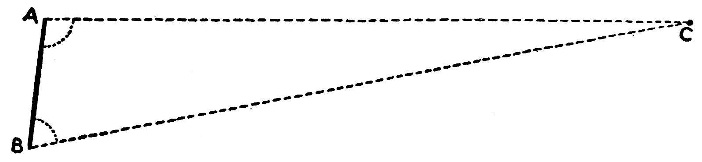
It will readily be seen that, with a given base line, the greater the distance of the object the less will be its parallax. At a sufficiently great distance the latter will be so small that the observer cannot get any evidence of it. To all appearance the lines B C and A C will then have the same direction. The distance at which the parallax cannot be made out depends, of course, on the accuracy of the measurement, and the length of the base line.
The moon being the nearest of all the heavenly bodies has the largest parallax. Its distance can therefore be determined with the greatest precision by measurement. Even Ptolemy, who lived only one or two centuries after Christ, was able to make an approximate measure of the distance of the moon. But the parallax of a planet is so small that it can be determined only with the most refined instruments.
The ends of the base line used in the determination may be any two points on the earth's surface—say the observatories of Greenwich and the Cape of Good Hope. In the case of the transits of Venus, which we have already described, there were a number of different stations at various points on the earth's surface, from which the direction of Venus at the beginning and end of its transit could be inferred. This method of determining distances is called triangulation.
The idea of a triangulation, as thus set forth, gives an understanding only of the general principle involved in the problem. One can readily see that it would be out of the question for two observers in distant parts of the earth to get the exact direction of a planet at the same moment of time. The actual determination of the parallax requires a combination of observations too complex to be set forth in the present book, but the fundamental principle is that just explained.
In order to get the dimensions of the whole solar system, it is only necessary to know the distance of any one planet from us at any given moment. The orbits and motions of all the planets are mapped down with the greatest possible exactness, but with the map before us we are in the position that one would be who had a very exact map of a country, only there was no scale of miles upon it. So he would be unable to measure the distance from one point to another on his map until he knew the scale. It is the scale of our map of the solar system which the astronomer stands in need of and which he has not, even with the most refined instruments, yet been able to determine as accurately as he could wish.
The fundamental unit aimed at is that already described—the mean distance of the earth from the sun. Measures of parallax are by no means the only method of determining this distance. Within the last fifty years other methods have been developed, some of which are fully as accurate as the best measures of parallax, perhaps even more so.
One of the most simple and striking of these methods makes use of the velocity of light. By observations of Jupiter's satellites, made when the earth was at different points of its orbit, it has been found that light passes over a distance equal to that of the earth from the sun in about eight minutes twenty seconds, or five hundred seconds. This determination has been more accurately made in another way by the aberration of the stars. This is a slight change in their position due to the combined motion of the earth and the ray of light by which we see the star. By accurate observations on the aberration, it is found that light travels from the earth to the sun in almost exactly 499.6 seconds. It follows that if we can find how far light will travel in one second, we can determine the distance of the sun by multiplying the result by 499.6. The measurement of the velocity of light is one of the most difficult problems in physics, as it requires the measurement of intervals of time only a few millionths of a second in duration. Those who are interested in the subject will see the method of doing this explained in special treatises; at present it is sufficient to say that light is found to travel 299,860 kilometres, or 186,300 miles in a second. Multiply this by 499.6 and we have 93,075,480 miles for the distance of the sun from the earth.
A third method rests on the measures of the sun's gravitation upon the moon. One effect of this is that, as the moon performs its monthly revolution round the earth, it is at its first quarter a little more than two minutes behind its average position, to which it catches up at full moon, and passes; so that at last quarter it is two minutes ahead of the mean position. Toward new moon it falls behind again to the average place. Thus a slight swing goes on in unison with the moon's motion around the earth. The amount of this swing is inversely proportional to the distance of the sun. Hence, by measuring this amount, its distance may be determined. As in other astronomical measurements, the difficulty of the determination is very great. A swing like this is very hard to measure without error; moreover, the problem of determining just how much swing the sun would produce at a given distance is one of the difficult problems of celestial mechanics, which has not yet been solved so satisfactorily as to leave no doubt whatever on the result.
The fourth method also rests on gravitation. If we only knew the exact relation between the mass of the earth and that of the sun; that is to say, if we could determine precisely how many times heavier the sun is than the earth, we could compute at what distance the earth must be placed from the sun in order to revolve around it in one year. The only difficulty, therefore, is to weigh the earth against the sun. This is most exactly done by finding the change in the position of the orbit of Venus produced by the earth's attraction. By comparing the positions of the orbit of Venus by its transits in 1761, 1769, 1874, and 1882, it is found that the orbit has a progressive motion, indicating that the mass of the sun is 332,600 times that of the earth and moon combined. Thus we are enabled to compute the distance of the sun by still another method.
We have described four methods of making this fundamental determination in astronomy, and in order that the reader may see just what degree of certainty and precision astronomical theory and measurements have reached, we give the separate results of these methods. The first column shows the parallax of the sun, which is the quantity actually used by astronomers. It is the same thing as the angle under which the equatorial radius of the earth would be seen by an observer at the distance of the sun from us. This is followed by the accompanying distance in miles.
Measures of parallax | 8.800; Dist. 92,908,000 miles Velocity of light | 8.778; Dist. 93,075,480 miles Motion of moon | 8.784; Dist. 92,958,000 miles Mass of the earth | 8.762; Dist. 93,113,000 miles
The difference between these results is no greater than the liability of error wherever mathematical demonstrations and instrumental measurements of such extreme minuteness and complexity as these are required. From the close agreement between results reached by methods so widely different in their principles, we have a striking proof of the correctness of the astronomical views of the universe. Yet discrepancies exceeding a hundred thousand miles will not be tolerated by astronomers longer than is absolutely necessary.
No work of the human intellect farther transcends what would seem possible to the ordinary thinker than the mathematical demonstrations of the motions of the heavenly bodies under the influence of their mutual gravitation. We have learned something of the orbits of the planets round the sun; but the following of the orbit is not the fundamental law of the planet's motion; the latter is determined by gravitation alone. This law, as stated by Newton, is so comprehensive that nothing can be added. The law that every particle of matter in the universe attracts every other particle, with a force which varies inversely as the square of the distance between them, is the only law of nature which, so far as we know, is absolutely universal and invariable in its action. All the other processes of nature are in some way varied or modified by heat and cold, by time or place, by the presence or absence of other bodies. But no operation that man has ever been able to perform on matter changes its gravitation in the slightest. Two bodies gravitate by exactly the same amount, no matter what we do with them, no matter what obstacles we interpose between them, no matter how fast they move. All other natural forces admit of being investigated, but gravitation does not. Philosophers have attempted to explain it, or to find some cause for it, but nothing has yet been added to our knowledge by these attempts.
The motions of the planets are governed by their gravitation. Were there only a single planet moving round the sun it would be acted on by no force but the sun's attraction. By purely mathematical calculation it is shown that such a planet would describe an ellipse, having the sun in one focus. It would keep going round and round in this ellipse forever. But in accordance with the law, the planets must gravitate towards each other. This mutual gravitation is far less than that of the sun, because in our solar system the planets are of much smaller mass than the central body. In consequence of this mutual attraction the planets deviate from the ellipse. Their orbits are very nearly, but not exactly, ellipses. Still, the problem of their motion is one of pure mathematical demonstration. It has occupied the ablest mathematicians of the world since the time of Newton. Every generation has studied and added to the work of the preceding one. One hundred years after Newton, Laplace and Lagrange showed that the ellipses near which the planets move gradually change their form and position. These changes can be calculated thousands, tens of thousands, or even hundreds of thousands of years in advance. Thus it is known that the eccentricity of the earth's orbit round the sun is now slightly diminishing, and that it will continue to diminish for about forty thousand years. Then it will increase so that in the course of many thousands more of years it will be greater than it now is. The same is true of all the planets. Their orbits gradually change their form back and forth through tens of thousands of years, like "great clocks of eternity which count off ages as ours count off seconds." The ordinary reader would be justified in some incredulity as to the correctness of these predictions for thousands of years to come, were it not for the striking precision with which the motions of the planets are actually predicted by the mathematical astronomer. This precision is reached by solving the very difficult problem of determining the effect of each planet on the motions of all the other planets. We might predict the motions of these bodies by assuming that each of them moves round the sun in a fixed ellipse, which, as I have just said, would be the case if it were not attracted by any other body. Our predictions would then, from time to time, be in error by amounts which might amount to large fractions of a degree; perhaps, in the course of a long time, to even more. To form an idea of this error we may say that one degree is the angle at which we see the breadth of an ordinary window frame at the distance of a hundred yards. The planet might then be predicted as in a line with one side of such a frame when in reality it would be at the other side or in the middle of the window.
But, taking account of the attraction of all the other planets, the prediction is so exact that the refined observations of astronomy hardly show any appreciable deviation. If we should mark on the side of a distant house a row of a hundred points, each apparently as far from the other as the average error of these predictions, the whole row would seem to the naked eye as a single point. The history of the discovery of Neptune, which was mentioned in the preceding chapter, affords the most striking example that we possess of the certainty of these predictions.
I shall now endeavour to give the reader some idea of the manner in which the mathematical astronomer reaches these wonderful results. To make them, he must, of course, know the pull each planet exerts upon the others. This is proportional to what the physicist and astronomer call the mass of the attracting planet. This word means quantity of matter, and around us on the surface of the earth, it has nearly the same meaning as the word weight. We may therefore say that, when the astronomer determines the mass of a planet, he is weighing it. He does this on the same principle by which the butcher weighs a ham in the spring balance. When the butcher picks the ham up he feels a pull of the ham toward the earth. When he hangs it on the hook, this pull is transferred from his hand to the spring of the balance. The stronger the pull the farther the spring is pulled down. What he reads on the scale is the strength of the pull. You know that this pull is simply the attraction of the earth on the ham. But, by a universal law of force, the ham attracts the earth exactly as much as the earth does the ham. So what the butcher really does is to find how much or how strongly the ham attracts the earth, and he calls that pull the weight of the ham. On the same principle, the astronomer finds the weight of a body by finding how strong is its attractive pull on some other body.
In applying this principle to the heavenly bodies, you meet at once a difficulty that looks insurmountable. You cannot get up to the heavenly bodies to do your weighing; how then will you measure their pull? I must begin the answer to this question by explaining more exactly the difference between the weight of a body and its mass. The weight of objects is not the same all over the world; a thing which weighs thirty pounds in New York would weigh an ounce more than thirty pounds in a spring balance in Greenland, and nearly an ounce less at the equator. This is because the earth is not a perfect sphere, but a little flattened. Thus weight varies with the place. If a ham weighing thirty pounds were taken up to the moon and weighed there, the pull would only be five pounds, because the moon is so much smaller and lighter than the earth. But there would be just as much ham on the moon as on the earth. There would be another weight of the ham on the planet Mars, and yet another on the sun, where it would weigh some eight hundred pounds. Hence, the astronomer does not speak of the weight of a planet, because that would depend on the place where it was weighed; but he speaks of the mass of the planet, which means how much planet there is, no matter where you might weigh it.
At the same time we might, without any inexactness, agree that the mass of a heavenly body should be fixed by the weight it would have at some place agreed upon, say New York. As we could not even imagine a planet at New York, because it may be larger than the earth itself, what we are to imagine is this: Suppose the planet could be divided into a million million million equal parts, and one of these parts brought to New York and weighed. We could easily find its weight in pounds or tons. Then multiply this weight by a million million million and we shall have a weight of the planet. This would be what the astronomers might take as the mass of the planet.
With these explanations, let us see how the weight of the earth is found. The principle we apply is that round bodies of the same specific gravity attract small objects on their surface with a force proportional to the diameter of the attracting body. For example, a body two feet in diameter attracts twice as strongly as one of a foot, one of three feet three times as strongly, and so on. Now, our earth is about forty million feet in diameter; that is, ten million times four feet. It follows that if we made a little model of the earth four feet in diameter, having the average specific gravity of the earth, it would attract a particle with one tenmillionth part of the attraction of the earth. We have shown in our chapter on the earth how the attraction of such a model has actually been measured, with the result of showing that the total mass of the earth is five and one half times that of an equal bulk of water. Thus this mass becomes a known quantity.
We come now to the planets. I have said that the mass or weight of a heavenly body is determined by its attraction on some other body. There are two ways in which the attraction of a planet may be measured. One is by its attraction on the planets next to it, causing them to deviate from the orbits in which they would move if left to themselves. By measuring the deviations, we can determine the amount of the pull, and hence the mass of the planet.
The reader will readily understand that the mathematical processes necessary to get a result in this way must be very delicate and complicated. A much simpler method can be used in the case of those planets which have satellites revolving round them, because the attraction of the planet can be determined by the motions of the satellite. The first law of motion teaches us that a body in motion, if acted on by no force, will move in a straight line. Hence, if we see a body moving in a curve, we know that it is acted on by a force in the direction toward which the motion curves. A familiar example is that of a stone thrown from the hand. If the stone were not attracted by the earth it would go on forever in the line of throw, and leave the earth entirely. But under the attraction of the earth it is drawn down and down, as it travels onward, until finally it reaches the ground. The faster the stone is thrown, of course, the farther it will go, and the greater will be the sweep of the curve of its path. If it were a cannon ball, the first part of the curve would be nearly a right line. If we could fire a cannon ball horizontally from the top of a high mountain with a velocity of five miles a second, and if it were not resisted by the air, the curvature of the path would be equal to that of the surface of our earth, and so the ball would never reach the earth, but would revolve round it like a little satellite in an orbit of its own. Could this be done the astronomer would be able, knowing the velocity of the ball, to calculate the attraction of the earth. The moon is a satellite, moving like such a ball, and an observer on Mars would be able, by measuring the orbit of the moon, to determine the attraction of the earth as well as we determine it by actually observing the motion of falling bodies around us.
Thus it is that when a planet like Mars or Jupiter has satellites revolving around it, astronomers on the earth can observe the attraction of the planet on its satellites and thus determine its mass. The rule for doing this is very simple. The cube of the distance between the planet and satellite is divided by the square of the time of revolution. The quotient is a number which is proportional to the mass of the planet. The rule applies to the motion of the moon round the earth and of the planets round the sun. If we divide the cube of the earth's distance from the sun, say ninety-three millions of miles, by the square of three hundred and sixty-five and a quarter, the days in a year, we shall get a certain quotient. Let us call this number the sun-quotient. Then, if we divide the cube of the moon's distance from the earth by the square of its time of revolution, we shall get another quotient, which we may call the earth-quotient. The sun-quotient will come out about three hundred and thirty thousand times as large as the earth-quotient. Hence it is concluded that the mass of the sun is three hundred and thirty thousand times that of the earth; that it would take this number of earths to make a body as heavy as the sun.
I give this calculation to illustrate the principle; it must not be supposed that the astronomer proceeds exactly in this way and has only this simple calculation to make. In the case of the moon and earth, the motion and distance of the former vary in consequence of the attraction of the sun, so that their actual distance apart is a changing quantity. So what the astronomer actually does is to find the attraction of the earth by observing the length of a pendulum which beats seconds in various latitudes. Then by very delicate mathematical processes he can find with great exactness what would be the time of revolution of a small satellite at any given distance from the earth, and thus can get the earth-quotient.
But, as I have already pointed out, we must, in the case of the planets, find the quotient in question by means of the satellites; and it happens, fortunately, that the motions of these bodies are much less changed by the attraction of the sun than is the motion of the moon. Thus, when we make the computation for the outer satellite of Mars, we find the quotient to be 13,093,500 that of the sun-quotient. Hence we conclude that the mass of Mars is 13,098,500 that of the sun. By the corresponding quotient, the mass of Jupiter is found to be about 11,047 that of the sun; Saturn, 13,500; Uranus, 122,700; Neptune, 119,500.
I have set forth only the great principle on which the astronomer has proceeded for the purpose in question. The law of gravitation is at the bottom of all his work. The effects of this law require mathematical processes which it has taken two hundred years to bring to their present state, and which are still far from perfect. The measurement of the distance of a satellite is not a job to be done in an evening; it requires patient labor extending through months and years, and then is not as exact as the astronomer would wish. He does the best he can and must be satisfied with the result until he can devise an improvement on his work, which he is always trying to do with varying success.
Comets differ from the heavenly bodies which we have hitherto studied in their peculiar aspects, their eccentric orbits, and the rarity of their appearance. Some mystery still surrounds the question of their constitution, but this does not detract from the interest of the phenomena which they present. When one of these objects is carefully examined we find it to embody three features which, however, are not separate and distinct, but merge into each other.
First we have what, to the naked eye, appears to be a star of greater or less brilliancy. This is called the nucleus of the comet.
Surrounding the nucleus is a cloudy nebulous mass, like a little bunch of fog, shading off very gradually toward the edge, so that we cannot exactly define its boundary. This is called the coma (Latin for hair). Nucleus and coma together are called the head of the comet, which looks like a star shining through a patch of mist or fog.
Stretching away from the comet is the tail, which may be of almost any length. In small comets the tail may be ever so short, while in the greatest it stretches over a long arc of the heavens. It is narrow and bright near the head of the comet and grows wider and more diffuse as it recedes from the head. It is therefore always more or less fan-shaped. Toward the end it fades away so gradually that it is impossible to say how far the eye can trace it.
Comets differ enormously in brightness, and, notwith standing the splendid aspect which the brighter ones assume, the great majority of these objects are quite invisible to the naked eye. Such are called telescopic comets. There is, however, no broad distinction to be drawn between a telescopic comet and a bright one, there being a regular range of brightness from the faintest of these objects to the most brilliant. Sometimes a telescopic comet has no visible tail; this, however, is the case only when the object is extremely faint. Sometimes, also, the nucleus is almost wholly wanting. In such a case all that can be seen is a small hairy mass, like a very thin cloud, which may be a little brighter in the centre.
From the historical records it would appear that from twenty to thirty comets visible to the naked eye generally appear in the course of a century. But when the telescope was employed in sweeping the heavens it was found that these objects were more numerous than had been supposed. Quite a number are now found every year by diligent observers. Doubtless the number depends very largely on accident, as well as on the skill applied in the search. Sometimes the same comet will be found independently by several observers. The credit is then given to the one who first accurately fixes the position of the comet at a given time, and telegraphs the fact to an observatory.
Soon after the invention of the telescope it was found that comets resembled the planets in moving in orbits around the sun. Sir Isaac Newton showed that their motions were ruled by the sun's gravitation in the same way as the motions of the planets. The great difference was that, instead of the orbits being nearly circular, like those of the planets, they were so elongated that, in most cases, it could not be determined where the aphelion, or farther end, was. As many of our readers may desire an exact statement of the nature of cometary orbits, and the laws governing them, we shall enter into some explanations of the subject.
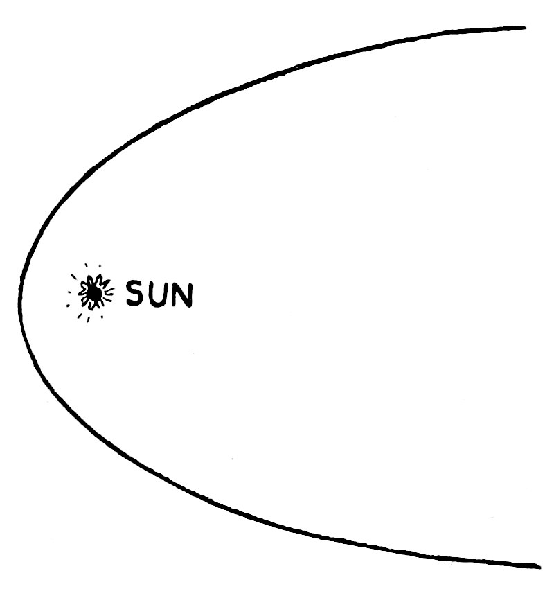
It was shown by Newton that a body moving under the influence of the sun's attraction would always describe a conic section. This curve is of three kinds, an ellipse, a parabola, and a hyperbola. The first, as we all know, is a closed curve returning into itself. But the parabola and the hyperbola are not such; each of them extends out without end in two branches. In the case of the parabola these two branches approach more nearly to having the same direction as we get out farther, but in the case of the hyperbola they always diverge from each other.
Having these curves in mind, let us imagine the earth to leave us hanging in space at some point of its orbit, our planet pursuing its course without us, until, at the end of a year, it returns to pick us up again. During the interval of its absence we, hanging in midspace, amuse ourselves by firing off balls to perform their revolutions around the sun like little planets. The result will be that all the balls we send off with a velocity less than that of the earth, that is to say, less than eighteen and six tenths miles per second, will move around the sun in closed orbits, smaller than the orbit of the earth, no matter what direction we send them in. A very simple and curious law is that these orbits will always have the same period if the velocity is the same. All the balls sent with the velocity of the earth will be one year in making their revolution and will, therefore, come together, at the point from which they started, at the same moment. If the velocity exceeds eighteen and six tenths miles a second, the orbit will be larger than that of the earth and the period of revolution will be longer the greater the velocity. With a speed exceeding about twenty-six miles a second, the attraction of the sun could never hold in the ball, which would fly away for good in one of the branches of a hyperbola. This would happen no matter in what direction we threw the object. There is, therefore, at every distance from the sun, a certain limiting velocity which, if a comet exceeds, it will fly off from the sun never to return; while, if it falls short, it will be sure to get back at some time.
The nearer we are to the sun, the greater is this limiting velocity. It varies inversely as the square root of the distance from the sun, hence, four times away from the sun, it is only half as great. The rule for finding the limiting velocity at any point in space is very simple. It is to take the speed of a planet passing through that point in a circular orbit, and multiply it by the square root of 2. This is 1.414. . . .
It follows that if the astronomer, by means of his observations, can find the velocity with which a comet is passing a known point of its orbit, he can determine the distance to which it will fly from the sun and the period of its return. By a careful comparison of observation made during the whole period of visibility of the comet he can generally reach a definite conclusion on the subject.
It is a curious fact that no comet has yet been seen of which the speed certainly exceeds the limit which we have described. It is true that, in many cases, a slight excess has been calculated from the observations, but this excess was no greater than might result from the necessary errors of observations on bodies of this kind. Commonly the speed is so near the limit that it is impossible to say whether it exceeds it or not. It is then certain that the comet will fly out to an immense distance, not returning for hundreds, thousands, or tens of thousands of years. There are also cases in which the speed of the comet is found to be less than the limit by a considerable amount. Such comets complete their revolutions in shorter periods and are called periodic comets.
So far as we know, the history of the motion of the large majority of the comets is this. They appear to us as if falling toward the sun from some great distance, we know not what. If a comet fell exactly toward the sun, it would fall into it, but this is a case which has not been known to occur and which, for reasons to be explained later, cannot be expected ever to occur. As it approaches the sun, it acquires greater and greater velocity, speeds around the central body in a great curve, and, by the centrifugal force thus generated, flies off again, returning to the abyss of space nearly in the direction from which it came.
Owing to the faintness of these objects they are visible, even in powerful telescopes, only in that part of their orbit which is comparatively near the sun. This is what makes it so difficult in many cases to determine the exact period of a comet which has only been seen once.
The first of these objects which was found to return in a regular period is celebrated in the history of astronomy under the name of Halley's comet. It appeared in August, 1682, and was observed for about a month, when it disappeared from view. Halley was able, from the observations made upon it, to compute the position of the orbit. He found that the latter was in the same position as that of a bright comet observed by Kepler in 1607.
It did not seem at all likely that two comets should move precisely in the same orbit. Halley therefore judged that the real orbit was an ellipse, and that the comet had a period of about seventy-five years. If this were the case, it should have been visible at intervals of about seventy-five years in the past.
So he subtracted this period from the several dates in order to determine whether any comets were recorded. Subtracting seventy-five from 1607 we have 1532. He found that a comet had actually appeared in 1531, which he had reason to believe was moving in the same orbit. Again subtracting seventy-five from this year we have the year 1456. A comet really did appear in 1456, which spread such horror throughout Christendom that Pope Calixtus III ordered prayers to be offered for protection against the comet as well as against the Turks, who were at war against Europe. It is probable that the myth of "the Pope's Bull against the comet" refers to this circumstance.
Other possible appearances of the comet were found in past history, but Halley was not able to identify the comet with exactness, owing to the absence of any precise description of the body. But the four well-observed dates, 1456, 1531, 1607, and 1682, afforded ample ground for predicting that the comet would again return to the sun about 1758. Clairaut, one of the most eminent mathematicians then in France, was able to calculate what effect would be produced by the action of Jupiter and Saturn on the period of the comet. He found that this action would so delay its return that it would not reach perihelion until the spring of 1759. It appeared according to the prediction, and actually passed perihelion on March twelfth of that year.
The next predicted return was in 1835. Several mathematicians now made computations of the effect of the planets in changing its period. So exact was their work that two of them hit the time within five days: Professor Rosenberger assigned November eleventh as the date of return, and Pontécoulant predicted it for November thirteenth. It actually passed perihelion on November sixteenth. After being observed for several months it disappeared from view and has not since been seen. But so exact is astronomical science that an astronomer could, at any time during the intervening interval, have pointed his telescope exactly at the object, after making the necessary calculations to determine its position.
Its next return is now approaching, but the exact date has not yet been computed. It will probably be some time between 1910 and 1912.
The most striking discovery of a comet after Halley announced the one which bears his name, was made by the French astronomer Lexell, in June, 1770. The object soon became visible to the naked eye. On laying down the orbit in which it moved, it was found, to the surprise of astronomers, that the orbit was an ellipse, with a period of only about six years. Its return was, therefore, confidently predicted, but it never reappeared. The cause was, however, speedily discovered. When it returned at the end of six years, it was on the opposite side of the sun, and therefore could not be seen. Passing out to complete its revolution, it was found by calculation that it must have gone into the immediate neighbourhood of the planet Jupiter, which, by its powerful attraction, started the comet off into some new orbit, so that it never again came within reach of the telescope. This, also, explained why the comet had not been seen before. Three years before Lexell found it, it had come from the neighbourhood of the planet Jupiter, which had thrown it into an orbit different from its former one. Thus the giant planet of our system had, so to speak, given the comet a pull about 1767 so that it should pass into the immediate neighbourhood of the sun, and having allowed it to make two revolutions around the sun, again encountered it in 1779, and gave it a new swing off, no one knows where. Since that time twenty or thirty comets, found to be periodic, have been observed, most, but not all of them, at two or more returns.
The most remarkable fact brought out by the study of these objects has been that they do not appear to be of seemingly infinite duration, like the planets, but are, as a general rule, subject to dissolution and decay, like living beings. The most curious case of a comet being completely disintegrated is that of Biela's comet. This was first observed in 1772, but was not known to be periodic. It was again seen in 1805, and again the astronomer did not notice the identity of the orbit in which it was moving with that of the comet of 1772. In 1826 it was discovered a third time, and now, on computing the orbit by the improved methods which had been invented, its identity with the former comets was brought out. The time of revolution was fixed at six and two thirds years. It should, therefore, appear in 1832 and 1839. But on these returns the earth was not in a position to admit of its being seen. Toward the end of 1845 it again appeared and was observed in November and December. In January, 1846, as it came nearer to the earth and sun, it was found to have separated into two distinct bodies. At first the smaller of these was quite faint, but it seemed to increase in brightness until it became equal to the other.
The next return was in 1852. The two bodies were then found to be far more widely separated than before. In 1846 their distance apart was about two hundred thousand miles; in 1852 more than a million miles. The last observations were made in September, 1852. Although since that time the comet should have completed seven revolutions, it has never again been seen. From the former returns it was possible to compute the position where it should appear with a good deal of precision, and from its non-appearance we conclude that it has been completely disintegrated. We shall, in the next chapter, learn a little more about the matter which composed it.
Two or three comets have disappeared in the same way. They were observed for one or more revolutions, growing fainter and more attenuated on each occasion, and finally became completely invisible.
Of the periodic comets the one that is most frequently and regularly observed bears the name of Encke, the German astronomer who first accurately determined its motion. Its first discovery was made in 1786, but, as was often the case then, its orbit could not at first be determined. It was again seen in 1795 by Miss Caroline Herschel. It was found again in 1805 and 1818. Not until the latter date was the accurate orbit determined, and then the periodic character of the comet and its identity with the comet observed in previous years was established.
Encke now found the period to be about three years and one hundred and ten days, varying a little according to the attraction of the planets, especially of Jupiter. In recent times it has been observed somewhere at almost every return. Its last return was in September, 1901.
What has given this comet its celebrity is the theory of Encke that its orbit was continually becoming smaller, probably through its motion being resisted by some medium surrounding the sun. A number of able mathematicians have investigated this subject on the various returns of the comet. Sometimes there appears to be evidence of a retardation, like that found by Encke, and sometimes not. The question is, therefore, still in an unsettled condition. The computations are so intricate and difficult, and, indeed, the whole problem of the motion of a comet under the influence of the planets is so complicated, that it is almost impossible to secure a solution which can be guaranteed as absolutely correct.
A remarkable case, in which a new comet was made a member of the solar system, occurred in the years 1886-1889. In the latter year a comet was observed by Brooks of Geneva, New York, which proved to be revolving in an orbit with a period of only seven years. As it was quite bright, the question arose why it had never been observed before. This question was soon answered by the discovery that in the year 1886 the comet had passed close to Jupiter. The attraction of the planet had so changed its course as to throw the comet into the orbit which it now describes. Several other periodic comets pass so near to Jupiter that there is little doubt that they were brought into the system in this way.
The question therefore arises whether this may not be true of all periodic comets. This question must be answered in the negative, because Halley's comet does not pass near any planet. The same is true of Encke's comet, which does not come near enough to the orbit of Jupiter to have been drawn into its present orbit. Without the action of that planet, so far as we know, these comets always have been members of the system.
It was supposed, until a recent time, that comets might come into the solar system from the vast spaces between the stars. This view, however, seems to be set aside by the fact that no comet has been proved to move with a much higher speed than it would get by falling to the sun from a distance, which, though far outside the solar system, is much less than the distance of the stars. We shall see hereafter that the sun itself is in motion through space. Even if we grant that comets come from space far outside the solar sj^stem, the fact that we have just cited still shows that they partook of the motion of the sun and solar system through space while tliey were still outside that system.
The view which now seems established by a study of the whole subject is that these objects have their regular orbits, differing from those of the planets in their great eccentricities. Their periods of revolution are generally thousands, and sometimes tens of thousands, and even hundreds of thousands of years. During this long interval they fly out to an enormous distance beyond the confines of the system. If, as they return to the sun, they chance to pass very near a planet, two things may happen: Either the comet may be given an additional swing that will accelerate its speed, throw it out to a greater distance than it ever had before or possibly to a distance from which it can never return, or the speed may be retarded and the comet made to move in a smaller orbit. Thus it is that we have comets of so many different periods. If comets come from the regions of the fixed stars, there is no reason why the motion of one might not be directly toward the sun, so that it would fall into our central luminary. But such an occurrence is hardly possible when the comet belongs to our system, because one of these bodies nearing an orbit passing through the sun would have fallen into the sun on its first round, long ages ago, and never could have a chance to fall in again.
The very bright comets which appear from time to time are of the greatest interest to every beholder. It is purely a matter of chance, so far as our knowledge ex tends, when one shall appear. Of what are called great comets, there were, five or six during the nineteenth century. The most remarkable and brilliant of all appeared in 1858, and bears the name of Donati, its discoverer, an astronomer of Florence, Italy. Its history will show the changes through which such a body goes. It was first seen on June second, but was then only a faint nebulosity, visible in the telescope like a minute white cloud in the heavens. No tail was then visible, nor was there the slightest indication of what the little cloud would grow into until the middle of August. Then a small tail gradually began to form. Early in September the object became visible to the naked eye. From that time it increased at an extraordinary rate, growing larger and more conspicuous night after night. Its motions were such that it seemed to move but little for the period of a whole month, floating in the western sky night after night. It attained its greatest brilliancy about October tenth. Careful drawings of it were made from time to time by George P. Bond, of the Harvard Observatory. We give two of these, one a naked eye view, the other a telescopic one showing what the head of the comet looked like. After October tenth it rapidly faded away. It soon travelled toward the south, and passed below our horizon, but was followed by observers in the southern hemisphere until March, 1859. Before the comet had passed out of sight, computers began to calculate its orbit. It was soon found not to move in an exact parabola, but in a very elongated ellipse. The period was not far from nineteen hundred years, but may have been a hundred years more or less than this. It must therefore have been visible at its preceding return sometime in the first century before Christ, but there is no record by which it could be identified. It may be expected again in the thirty-eighth or thirty-ninth century.
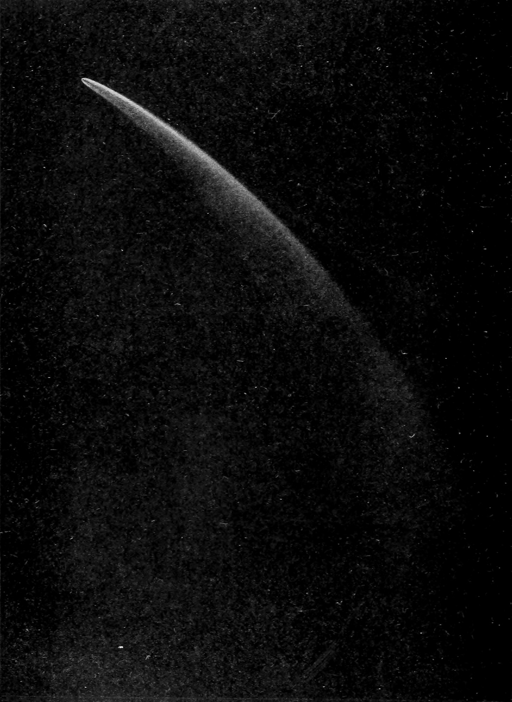
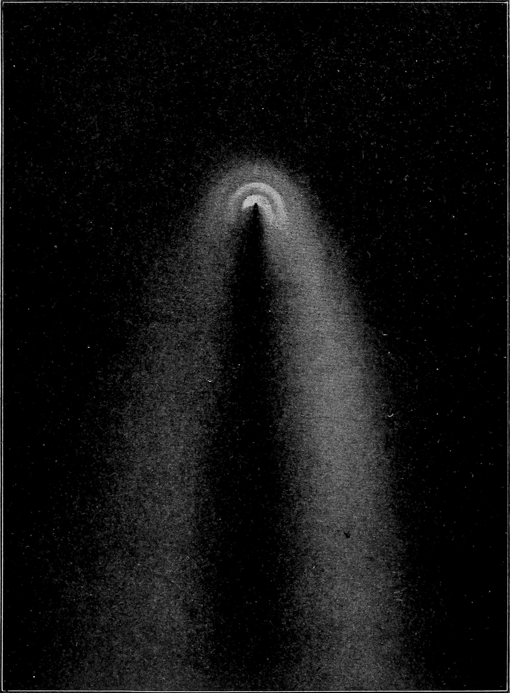
A very remarkable case of several comets moving in very nearly the same orbit is afforded by the comets of 1843, 1880, and 1882. The first of these was one of the most memorable comets on record, as it passed so near the sun as almost to graze the surface. In fact, it must have passed quite through the outer portions of the solar corona. It came into view with remarkable suddenness in the neighbourhood of the sun, about the end of February. It was visible in full daylight. By a singular coincidence it appeared shortly after the well-known prediction of Miller that the end of the world was to come in the year 1843. Those who had been alarmed by this prediction saw in the comet an omen of the approaching catastrophe.
The comet disappeared from view in April, so that the time of observation was rather short. The period of revolution now became a subject of interest. It was found, however, that its orbit did not differ sensibly from the parabola. But the time of observation was so brief that any estimate of the period would be somewhat uncertain. All that could be said was that the comet would not return for several centuries.
Great, therefore, was the surprise when, thirty-seven years later, a comet was seen by observers in the southern hemisphere and found to be moving in almost the same orbit. The first sign which it gave of its approach was its long tail rising above the horizon. This was seen in the Argentine Republic, at the Cape of Good Hope, and in Australia. Not until the fourth of February did the head become visible. It swept around the sun, again passed to the south, and disappeared without observers in the northern hemisphere seeing it.
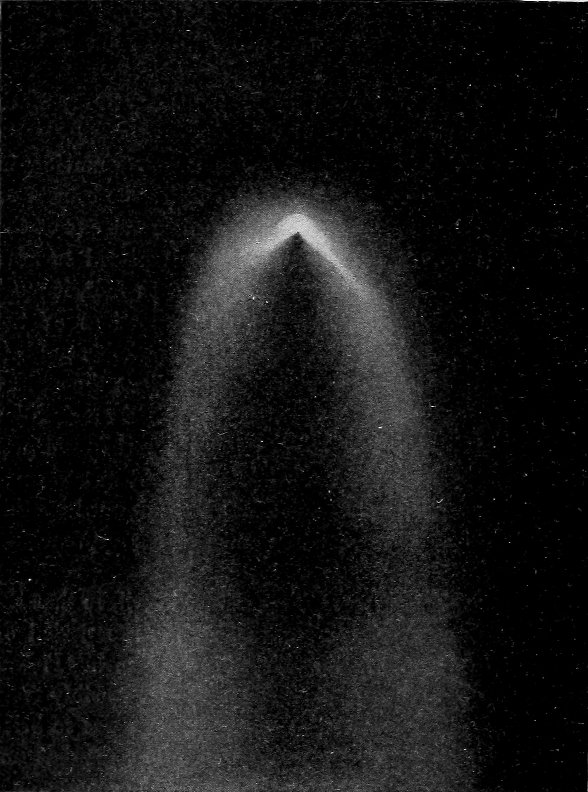
The question now arose whether this could possibly be the same comet that had appeared in 1843. Previously it had been supposed that when two such bodies moved in the same orbit with a long interval between they must be the same. In the present case, however, the hypothesis of identity seemed to be incompatible with the observations. The question was set at rest by the appearance in 1882 of a third comet moving in about the same orbit. This certainly could not be a return of the comet which had appeared a little more than two years before. The remarkable spectacle was therefore offered of three bright comets all moving in the same orbit at varying intervals of time. Possibly there were more even than these three, for, in 1680, a comet had passed very near the sun. Its orbit, however, was somewhat different from those of the three comets already mentioned.
The most probable explanation of the case seems to be that these comets were parts of some nebulous mass which gradually broke up, its different members pursuing their courses independently. The result would be that, for many ages, the objects would all continue in nearly the same orbit.
Besides these, brilliant comets appeared in 1859, 1860, and 1881. How long we may have to wait for another no one can say. It is probable that Halley's comet, when it appears eight or ten years hence, will at least be visible to the naked eye, but no one can predict even its apparent brightness. At its return in 1835 it was so small an affair that it was difficult to explain the excitement it caused in 1456 and later, except by supposing a great diminution in the dimensions, at least of its tail.
The question of the exact nature of a comet is still in doubt. In the case of large and bright comets, it is possible that the nucleus may be a solid body, though probably much smaller than it looks. Some light on the question is thrown by an observation, which is unique, made at the Cape of Good Hope when the great comet of 1882 made a transit across the sun's disk, as Mercury and Venus are sometimes known to do. Unfortunately, astronomers generally were not prepared for such a phenomenon, as the comet had been visible only in the southern hemisphere, and the transit occurred only a week or two after its first discovery. Hence it happened that the Cape Observatory was the only one at which an observation of the greatest interest in astronomy could be made; and here the circumstances were extremely unfavourable. The sun was about to set behind Table Mountain as the comet approached it. By careful watching, two of the astronomers, Messrs. Finlay and Elkin, were enabled to keep sight of the comet until it actually disappeared at the limb of the sun. This happened fifteen minutes before the sun disappeared from view. During this time, if the nucleus were a solid body, it ought to have been seen as a black spot projected against the sun. Nothing of the sort could be made out. The conclusion is either that the substance of the comet was transparent to the sun's rays, or that the solid nucleus was too small to be distinguished under the circumstances. Unfortunately, owing to the low altitude of the sun and the bad condition of the air, it was impossible to be quite sure how small the nucleus must have been to be invisible. It seemed certain, however, that the solid portion, if any such the comet had, was much smaller than the apparent nucleus as seen in the telescope.
There seems also to be some reason for suspecting that a comet is nothing but a collection of meteoric matter, consisting perhaps of separate objects, of sizes ranging anywhere from that of grains of sand to masses as large as the meteorites which sometimes fall from the sky. The question then is to explain how the parts are kept together through so many revolutions of the comet. The changes of shape which the nucleus often undergoes as it is passing near to the sun seem to show that this hypothesis may be near the truth.
The spectra of those comets whose light has been analysed by the spectroscope are remarkable in showing that this light is not merely reflected sunlight. The principal feature is three bright bands, which bear a striking resemblance to those given by the compounds of carbon and hydrogen. Taking this fact by itself, the conclusion would be that the comet is a glowing gas, shining as incandescent gases do in our chemical laboratories. That such should be the case and the whole case seems impossible for two reasons. The comet cannot be hot enough to glow; and its light fades out to nothing as it recedes from the sun. The most likely conclusion seems to be that the action of the sun's rays causes a glow through some process which has not yet been made clear to us.
What seems certain is that the matter of which a bright comet is composed is volatile. When a bright comet is carefully scrutinised with a telescope, masses of vapour can be seen from time to time slowly rising from its head in the direction of the sun, then spreading out and moving away from the sun so as to form the tail. The latter is not an appendage which the comet carries as animals carry their tails, but is like a stream of smoke issuing from a chimney.
It frequently happens that when a comet is first discovered it has no tail at all. The latter begins to form when the sun is approached. The nearer the comet approaches the sun, and the greater the heat to which it is exposed, the more rapidly the tail develops. All this shows that the matter which composes a great comet is, in part volatile. When warmed by the heat of the sun it begins to evaporate, just as water would under the same circumstances. The steam or vapour thus arising is repelled by the sun, so as to form a stream of matter issuing from the comet.
Every reader of this book must frequently have seen what is familiarly called a "shooting star"—an object like a star, which darts through the heavens a greater or less distance, and then disappears. These objects are, in astronomy, called by the generic name of meteors. They are of every degree of brightness, but the brighter they may be, the more rarely they appear. One who is out much at night will seldom pass a year without seeing such a meteor of striking brilliancy. Once or twice in a lifetime he will see one that illuminates the whole sky with its light.
On almost any clear night in the year a watcher may see three or four or even more meteors in the course of an hour. Sometimes, however, they are vastly more numerous, for example, between the tenth and fifteenth of August, more and brighter ones than usual will be seen. On a number of occasions in history they have coursed the heavens in such numbers as to fill the beholders with surprise and terror. There were remarkable cases of this kind in 1799 and 1833. In the latter year, especially, the negroes of the South were so terrified that the recollection of the phenomenon is brought down by tradition to the present day.
The cause of meteors was unknown until after the beginning of the nineteenth century. It is now, however, well made out. Besides the known objects of the solar system—planets, satellites, and comets—there are, coursing through space, and revolving around the sun, countless millions of particles, or minute collections of matter, too small to be seen with the most powerful telescope. Quite likely the greater number of these objects are scarcely larger than pebbles, or even grains of sand. The earth, in its course around the sun, is continually encountering them. One in the line of motion of the earth may have a velocity amounting to many miles a second; perhaps ten, twenty, thirty, or even forty. Meeting the atmosphere with this immense velocity causes the body to be immediately heated to so high a temperature that its substance dissolves away with a brilliant effusion of light no matter how solid it may be. What we see is the course of a particle thus burning away as it darts through the rare regions of the upper atmosphere.
Of course, a meteor will appear brighter and last longer the larger and solider it is. Sometimes it is so large and solid that it comes within a few miles of the earth before being finally melted and dissolved away. Then, the people in the region over which it is passing, see a remarkably bright meteor. In such a case it frequently happens that in a few minutes after the meteor has passed a loud explosion, like the firing of a cannon, is heard coming from the region through which it passed. This arises from the concussion of the air compressed by the rapid flight.
In rare cases the mass is so large that it reaches the earth without being melted or evaporated. Then we have the fall of a meteoric stone, as it is called, which commonly occurs several times a year in some part or another of the world. There is at least one case on record in which a man was killed by the fall of such a body. When these stones are dug up they are found to be composed mostly of iron. Specimens of them are kept in our museums, where they may be examined by anyone who wishes to see them. Some remarkable ones are found at the Smithsonian Institution, Washington, D. C.
How these objects originated we cannot say, and even a guess on the subject would be hazardous. When found they bear marks on their surface of having been melted; this, however, is a natural result of their passage through the air, by which the surface is always heated far above the melting point.
The greatest discovery of our times on the subject of meteors is connected with the meteoric showers already referred to, which occur at certain seasons of the year. The most remarkable of these occur in November, and the meteors of the shower are called Leonides, because their lines of apparent motion all diverge from the constellation Leo. It was found by historical research on the subject that this shower had recurred at intervals of about one third of a century for at least thirteen hundred years. The earliest account is the following from an Arabian writer:
In the year 599, on the last day of Moharren, stars shot hither and thither, and flew against each other like a swarm of locusts; people were thrown into consternation and made supplication to the Most High; there was never the like seen except on the coming of the messenger of God; on whom be benediction and peace.
The first well-described shower of this class occurred on November 12, 1799. It was seen by Humboldt, then on the Andes. He seems to have considered it as a very remarkable display, but made no exact investigation as to its cause.
The next recurrence was in 1833, which seems to have been the most remarkable one ever observed. The astronomer Olbers suggested from this that the shower had a period of thirty-four years, and predicted a possible return in 1867, which actually appeared in 1866. In 1866 and 1867 the observations were more carefully made than ever before, and led to the remarkable astronomical discovery, just alluded to, that of the relation between meteors and comets. To explain this we must define the radiant point of meteors.
It is found that if, during a meteoric shower, we mark the course of each meteor by a line on the celestial sphere, and continue these lines backward, we shall find them all to meet at a certain point in the heavens. In the case of the November meteors this point is in the constellation Leo; in the August meteors it is in Perseus. It is called the radiant point of the shower. The lines in which the meteors move are the same as if they were all shot out from this one point, but it must not be supposed that the meteors are actually seen at this point; they may begin to show themselves at any distance from it less than ninety degrees; but when they are seen they are moving from the point. This shows that the meteors are all moving in parallel lines when they encounter our atmosphere. The radiant point is what, in perspective, is called the vanishing point.
The period of the November meteors, thirty-three years, being known, and the exact position of the radiant point determined, it became possible to calculate the orbit of these objects. This was done by Leverrier soon after the shower of 1866. Now it happened that, in December, 1865, a comet appeared which passed its perihelion in January, 1866. Careful study of its motion showed that its period was about thirty-three years. This orbit was computed by Oppolzer, who published it without noticing its resemblance to that of the meteors. Then it was noticed by Schiaparelli that there was an almost perfect resemblance between the orbit of Oppolzer's comet and the Leverrier orbit of the November meteors. So near together were they that no doubt could be felt that the two orbits were identical. The evident fact was that the bodies which produced these November meteors were following the comet in its orbit. It was therefore concluded that these objects had originally formed part of the comet and had gradually separated from it. When a comet is disintegrated in the manner described in the last chapter, those portions of its mass which are not completely dissipated continue to revolve around the sun as minute particles, which get gradually separated from each other in consequence of there being no sufficient bond of attraction, but they still follow each other in line in nearly the same orbit.
The same thing was found to be true of the August meteors. They are found to move in an orbit very near to that of a comet observed in 1862. The period of this comet could not be exactly determined, but it is supposed to be between one and two hundred years.
The third remarkable case of this kind occurred in 1872. We have already spoken of the disappearance of Biela's comet. It happens that the orbit of this body nearly intersected that of the earth at the point which the latter passes toward the end of November. From the observed period of this comet it should have passed this point about the first of September, 1872, between two and three months before the passage of the earth through the same point. From the analogy of the other cases it was therefore judged that there would be a meteoric shower on the evening of November 27, 1872, and that the radiant point would be in the constellation Andromeda. This prediction was fulfilled in every respect. The Andromedes, as these meteors are called, now recur with great regularity.
There are now some disappointing circumstances to narrate. The comet of 1866 should have reappeared sometime during the years 1898-1900, but it was not seen. Probably it was missed, not because of its complete disintegration, but because it happened to pass its perihelion at a time when the earth was too far away to admit of the comet being visible. But, what is still more curious is that the meteors themselves, a shower of which was expected in 1899-1900, did not reappear in great numbers at either date. The probable reason for this is that the swarm was deflected from its course by the attraction of the planets, which continually changes the orbit of every object of this kind.
The general conclusion is that the countless thousands of comets which in time past have coursed around the sun, leave behind minute fragments of their mass, which follow in their orbits like stragglers from an army, and that, when the earth encounters a swarm of these fragments a meteoric shower is produced. But it is still an open question whether all these meteoric particles can be fragments of comets, with the probabilities in favor of a negative answer. If we are to accept the conclusions drawn by Professor Elkin from recent photographs of meteors, the velocities of these bodies sometimes exceed the parabolic limit described in the last chapter. If this be so, they must be wanderers through the infinite stellar spaces, having no connection with our system.
This is a very soft, faint light, surrounding the sun, extending out to about the orbit of the earth, and lying nearly in the plane of the ecliptic. In tropical latitudes it may be seen on any clear evening about an hour or less after sunset. In our latitudes it is best seen in the spring, when, about an hour and a half after sunset, it may always be seen in the west and southwest, extending upward toward the Pleiades. It is best seen at this season because, lying in the plane of the ecliptic, it makes a greater angle with the horizon then than at other seasons. In autumn it may be seen in the morning before daybreak, rising from the east and extending toward the south.
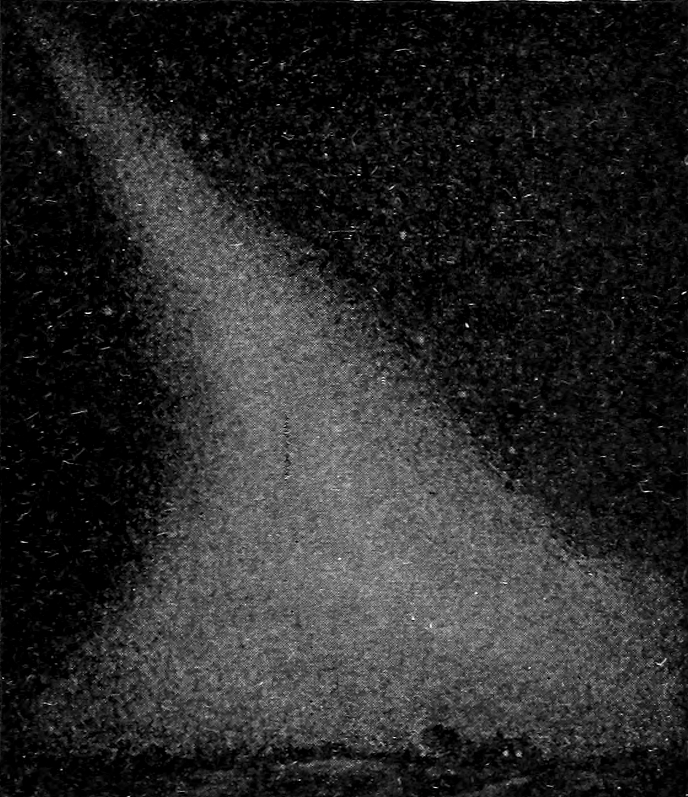
It is said that in regions where the atmosphere is clearer than with us, it may be seen all night, spanning the heavens like a complete circle. If so, the light is so faint as to elude ordinary vision, and this continuity does not seem to be well established.
But there is associated with it a phenomena which is still one of the mysteries of astronomy. In the heavens, immediately opposite the sun, there is always a faint light, to which the term Gegenschein is applied. This is a German word, of which the best English equivalent is counter-glow. The light is so faint that it can be seen only under the most favourable conditions. When it falls in the Milky Way the light of that body is sufficient to drown it out, as is that of the moon, if the latter is above the horizon.
It passes through the Milky Way in June and December of each year, and can therefore not be seen during these months. Nor is it likely to be seen during the first part of January or July. At other times it must be looked for when the sun is considerably below the horizon, the sky perfectly clear and the moon not in sight. It may then be seen as an extremely faint impression of light, to which no exact outline can be assigned. The observer will find it by sweeping his eye over the region of the spot exactly opposite the sun.
There can be little doubt that the zodiacal light is caused by the reflection of the light of the sun from a swarm of very minute bodies, perhaps in the nature of meteors, continually revolving around it. We might naturally attribute the Gegenschein to the same cause, but the question would then arise why it is only seen opposite the sun. It has been suggested that possibly the earth has a tail, like a comet, and that the Gegen schein is simply this tail seen endwise. This is not an impossibility, but there is no proof that it is true.
Facts are now being discovered, and physical theories developed, the ultimate outcome of which may be an explanation of a number of mysterious phenomena associated with the earth and the universe. These phenomena are presented by the corona of the sun, the tails of comets, the aurora, terrestrial magnetism and its variations, nebulae, the Gegenschein, and the zodiacal light. The theories in question belong rather to the physicist than the astronomer, and the writer does not feel competent to explain them fully in their latest form, nor to define where established facts end and speculation begins. He must therefore limit himself to a few points.
First in order we have a pressure exerted by light, which was pointed out by Maxwell thirty years ago, but which seems to have been very generally overlooked, by astronomers at least. This principle was deduced by Maxwell from the electro-magnetic theory of light, and may be stated as follows:
When a pencil of light impinges perpendicularly on an opaque object, it produces a pressure upon the surface of that object, determined by the condition that if the object were set in motion with the velocity of light, and the force against it were kept up, the power required to keep up the pressure would be equal to that carried by the ray of light.
Another way of expressing the principle is this: Supposing the rays of light to be parallel, the work done by the pressure upon a surface moving through any length of the pencil is equal to the energy of the light contained in that length.
By the aid of this principle and a knowledge of the heat or energy contained in the rays of the sun, it is possible to calculate the pressure in question. It is found to be too slight to be detected by any ordinary mode of measurement. The great difficulty arises from the fact that, if the experiment is not tried in a vacuum, the pressure will be confused with that exerted by the surrounding air. A vacuum so nearly perfect that the slight residuum of air still contained within it shall not exert a force comparable with the light has not yet been attained. Our conclusion must therefore depend on observations made on minute particles contained in the celestial spaces; and we cannot ascend into these spaces to make the experiments, nor can we send matter up there to be experimented upon. All we can do is to observe matter already at hand. Here, then, is a wide gap which we cannot bridge over in practice.
The other element in the case is the discovery that particles smaller than atoms, called corpuscles or ions are thrown off with high velocity from intensely heated bodies. The sun being such a body, it follows that such ions must be shot out from it.
On Maxwell's theory, the explanation of a comet's tail is simple in the extreme. Being in the vacuum of celestial space, the matter of the comet evaporates on the side next to the sun, and, there being no pressure to hinder its expansion, it begins by flying off in all directions, especially toward the sun. It condenses into very minute particles, which are acted upon by the sun's rays and thus tlirown in the direction away from the sun. That the tail of the comet was produced by a repulsion like this has been evident ever since observations were made, but not until Maxwell's law was understood could any explanation be given of the seeming repulsion of the matter of the tail by the sun.
The explanations of the other phenomena we have mentioned are not yet so simple and satisfactory that they may be clearly stated in a short space. The reader who is interested in the subject must therefore be referred to special papers and treatises.
Footnote: The papers to which the present writer is principally indebted for the views in question are by Prof. J. J. Thompson, in the Popular Science Monthly for August, 1901, and to the article by Prof. John Cox in the number for January, 1902. These papers again set forth the investigations of Arrhenius, the Swedish physicist, who seems to have made the most successful endeavour to explain the phenomena in question on the principles which we have mentioned.
Having completed our survey of that small section of the universe in which we have our dwelling, our next task is to fly in imagination to those distant parts of space occupied by the thousands of stars which stud our sky. This is the field of astronomy in which the most wonderful discoveries have been made in recent times. We now know things about many stars which, even to such an observer as Sir William Herschel, would have seemed far beyond the possibilities of human ken. But the very vastness of the field and the minuteness of the details into which recent research has gone render it impossible to undertake anything like a comprehensive survey within the limits of the present little book. All we can do is to point out the more salient features of the universe of stars as they have been brought to light by observers and investigators of the past and present. The reader who desires further details and a wider idea of the methods and results of recent research relating to the stars may find them in a volume which the present author has recently devoted to the subject.
Footnote: The Stars, a Study of the Universe. G. P. Putnam's Sons, New York.
From the childhood of the race men have inquired: "What is a star?" To this question no answer was possible until recent times. Even within the last century little more could be said than that they were shining bodies whose nature was to us a mystery. At the present time we may define the stars as immense globes of matter, generally millions of times the size of the earth, so intensely hot that they shine by their own light, and so massive that they may continue to give light and heat for unknown millions of years without cooling off. What we have said of the sun probably applies in a greater or less degree to the great majority of the stars. It is true that we cannot study their surfaces because, even in the most powerful telescopes, they appear as mere points of light. But the analogy with our sun and with other heavenly bodies leads us to believe that each of them revolves on its axis as the sun does, and that, could we see it at the proper distance, it would present much the same appearance as our sun. We have abundant evidence that rotation is the order of nature in the case of all the heavenly bodies. In the few cases where it is possible to decide whether a star does or does not rotate, the question has been answered in the affirmative.
There are innumerable differences of detail among the stars. Indeed it would seem that no two are exactly alike in their physical constitution, any more than two men are alike in their personal appearance and make-up. In the chapter on the sun we tried to give an idea of the enormous temperature of that body, which far exceeds any degree of heat we can produce on the earth. We have good reason to believe that, while the stars differ widely in temperature, the great majority of them are far hotter even than the sun. This is true of their surfaces and must be still more true of their vast interiors.
Stars are not the only bodies which fill these distant regions of space. Scattered over the sky are immense masses of exceedingly rare matter which, from their cloud-like appearance, are called nebulæ. In size these bodies far exceed the sun or stars. A nebula only as large as our solar system would probably be invisible in the most powerful telescope, and could never be impressed even on the most delicate photograph of the sky unless above the ordinary brightness. Those that we know have probably hundreds or thousands of times the extent of our whole solar system. We may therefore classify those bodies of the universe which shine by their own light as stars and ebulæ.
When we read of astronomical discoveries, we commonly think of them as being made by looking through a telescope. But this is no longer the case. The greatest astronomical development of recent times consists in proving the existence of dark bodies of the nature of planets, revolving around many stars. These objects are absolutely invisible in any telescope which it would be possible to construct. Such an instrument could tell us nothing about the constitution of a star. The great engine of progress has been the spectroscope, which is described in a previous chapter. From what has there been said the reader will see that, using words in their ordinary sense, we do not see anything by the aid of a spectroscope. What we do with it is to analyse the rays of light into their component parts, just as a chemist analyses a compound body into its simple elements. A spectroscopic analysis is more complicated from the fact that the number of elements which compose a ray of light is generally indefinite. The great advantage of spectroscopic analysis arises from the fact that it is independent of distance. The farther a star is away, the more difficult it is to see, whether we look at it with the naked eye or through a telescope. Its light diminishes as the square of the distance increases; twice as far away it gives us only one fourth the light; three times as far away, only one ninth the light, and so on. But if enough light comes from the star to enable its spectrum to be analysed, the result can be reached equally well no matter how great the distance. As the chemist could analyse a mineral brought from the planet Mars, were such a thing possible, as easily as he could if he found it on the earth, so, when a ray of light reaches the spectroscope, the fact that it may have been hundreds of years on its way, does not interfere with the drawing of conclusions from it.
When the spectrum of a star is formed it is always found to be crossed by numerous dark lines. This shows that all the stars, like our sun, are surrounded by atmospheres which are not as hot as the central body. But this does not imply that the atmosphere is cold. On the contrary, it is probably hotter than the flame of any furnace we have on earth, even in the case of the cooler stars.
When the spectra of stars are carefully compared, it is always found that hardly any two are exactly alike. This shows that their atmospheres all differ in their physical constitution, or in the temperature of the substances which compose them. A great number of the dark lines of their spectra are found to be identical with those produced by known substances on earth. This shows that the substances of which the stars are made up are identical, in at least a great part, with those on the earth.
One of the most abundant of these substances is hydrogen. Several lines of hydrogen are found in nearly all the stars. Another substance which seems to be almost universal throughout the universe is iron. Yet another is calcium, the metallic base of lime. We all know that this substance abounds on the earth, and we have, in its diffusion among the stars, an example of the unity of nature in its widest extent.
Yet, variety is also the rule. Besides lines due to known substances, many stars show lines which have not yet been identified with those of any element that we know of. This is especially the case in the class known as Orion stars, because many of them are found in the constellation Orion. These stars are mostly very white or even blue in colour, and show a number of fine dark lines which are to a greater or less extent the same in all Orion stars, but are not those produced by any known chemical element. We therefore have reason to believe that there are in the stars other chemical elements than those with which we are acquainted.
There is a very curious case in which an element first excited interest through its being found in the sun and stars. For some time after the study of the sun's spectrum had been commenced, it was known that certain well-marked lines in it were not produced by any substance then known. But continued research led to the discovery that this substance existed in a Norwegian mineral, cleveite, and perhaps elsewhere on the earth. From its existence on the sun it was called helium. Its spectrum was no sooner made known than it was found that helium existed in many stars which are, for that reason, called "helium stars."
In many cases some idea can be obtained of the density of a star, or, in ordinary language, of its specific gravity. It is very remarkable that, in nearly all such cases the density is found to be far less than that of our ordinary solid or liquid substances; frequently no greater than that of air, sometimes even less. In this respect our sun, although its density is so small, seems to be an exception, and it is likely that only a very small proportion of the stars are as dense as the sun. This affords one proof of the high temperature of these bodies, which must be such that all liquid or solid substances exposed to it would boil away as water boils when put on a fire, thus changing its substance into a vapour. We have reason to believe that the stars are for the most part masses of this intensely hot vapour, surrounded perhaps by a somewhat colder surface. Possibly many of the stars may be of the nature of bubbles, but this is far from being established.
A star, like the sun, must be hotter in the interior than at its surface. From the latter alone can heat be radiated; hence the surface is continually cooling off, and if the matter composing the body were at rest, the cooling would soon go so far that a crust would form, as it does on a mass of molten iron. The only way in which this can be prevented is that, as the superficial portions cool, the greater density which they thus acquire causes them to sink down into the seething mass below, portions of which arise to take their place, cool off, and sink in their turn. Thus there is a continual interchange of matter between the inside and the surface, much as in a boiling pot the water at the bottom is continually being forced up to the top, while that on the top continually sinks down.
It follows from this that there must be a limit to the smallness of a star. If such a body were no larger than the moon, it would, in a few thousand years, so far cool off that a crust would form over its surface. This would cut off the currents by which the hot matter is brought to the surface and the star would soon cease to shine. As there can be little doubt that the age of most of the stars is to be reckoned by millions of years, it follows that they must be so large that they can lose heat for millions of years and yet a cool crust not form on their surface.
We have said that our sun is among the colder of the stars and also that it is among the smaller. These two facts fit well together. The smaller a star is the more rapidly it cools off, just as a cup of water cools off faster than a pot full.
The revelations of the spectroscope makes it very probable that every star has a life history. It began as a nebula, which, in the course of ages, slowly condensed into an intensely hot, blue-coloured star. The condensation going on, the star becomes yet hotter, until it reaches its highest temperature. Then, cooling off, its colour changes to white, yellow, and red, and the lines in its spectrum become darker and more numerous. Finally, its light dies away, as a fire flickers out when the supply of fuel is exhausted, and the star becomes a dark opaque body,—its life has ended. The greater the mass of the star the longer its life. Thus it is that the stars we observe seem to be of all ages, from the infantile nebula to the star dying of old age.
Not only to the ordinary beholder, but to the learned student of the heavens, the most wonderful feature of the sky is the Milky Way. This is a girdle apparently spanning the sky and perhaps, in reality, spanning the entire universe of stars, uniting them, as it were, into a single system—one "stupendous whole." It may be seen at some time of the night every day of the year, and at some convenient hour in the evening of every month except May. During this month it extends round the horizon in the early evening, and is invisible through the denser strata of the air. Of course it will even then become visible in the east and northeast later at night.
The smallest telescope will show the Milky Way to be formed of immense congeries of stars, too faint in their light to be separately visible at their great distance from us. Careful observation, even with the naked eye, will show that these stars are not equally scattered along the whole extent of their course, but are frequently collected in great masses or clusters, with comparatively empty spaces around or between them. These are especially marked in the portions of the belt visible in the south in the evenings of summer and autumn.
A remarkable fact connected with the universe is that the stars are not equally thick in all directions, there being more in a given space around the belt of the Milky Way, and the number growing smaller as we pass away from that belt. This is true even of the brightest stars, and yet more true of the fainter ones. The poles of the Milky Way are those two points in the heavens which are ninety degrees from every point of the Milky Way. If we imagine one to hold a rod in his hand, so that the Milky Way shall be at right angles to it, the two ends of the rod will point to the two poles in question. To give an idea of the thickness of the stars we may say that, near the poles of the Milky Way, a round circle of the sky one degree in diameter will commonly contain two or three stars visible in quite a small sized telescope. In the region of the Milky Way, such a circle may contain eight, ten, perhaps even fifteen or twenty such stars.
No one can look at the sky without seeing that the stars differ enormously in their brightness, or, in the language of astronomy, in their magnitude. They resemble men in that a very few far outshine all their fellows, a greater number are less bright, and, as we come down to smaller and smaller stars, we find the number to continually increase. Those visible to the naked eye were classified by the ancient astronomers as of six orders of magnitude. About twenty of the brightest in the sky were designated as of the first magnitude. The forty next in order of brightness were called of the second magnitude; a larger number were of the third, and so on to the sixth magnitude, which included the faintest stars that the best eye could see under a clear sky.
Modern astronomers carry this system down to the telescopic stars. Those which are one degree fainter than the smallest visible to the naked eye are called of the seventh magnitude; the next in brightness are of the eighth, and so on. The faintest that can be seen or photographed with the largest telescopes are probably of the fifteenth, sixteenth, or seventeenth magnitude.
The reader will of course understand that the magnitude of a star does not express its real brightness, because a shining body looks brighter the nearer it is to us. No matter how bright a star may be, if it were removed far enough away it would grow so faint as to be invisible. The smallest star in the heavens if brought near enough to us would shine as of the first magnitude.
It was formerly believed that the actual brightness of the different stars was nearly the same, and that some looked brighter than others only because they were nearer to us. But the case is now known to be different. Estimates of the distance of the stars show that among the nearest to us are many quite invisible to the naked eye, while some of the first magnitude are so far away that their distance is immeasurable. The brightest ones probably emit hundreds of thousands of times as much light as the smallest ones.
The whole number of stars in the heavens which can be seen by the ordinary eye is between five and six thousand. Possibly a very keen eye might see more than six thousand, but most eyes will see even less than five thousand. Of these only one half can be above the horizon at the same time, and of this half a great number will be so near the horizon as to be obscured by the great thickness of the atmosphere in that direction. The number which can readily be seen on a clear evening by an ordinarily good eye will probably range between fifteen hundred and two thousand. Stars visible to the naked eye are called lucid stars, to distinguish them from telescopic stars, which can be seen only by the aid of a telescope.
It is impossible to make even an estimate of the total number of telescopic stars. It is commonly supposed that between fifty and one hundred million can be seen with large telescopes, and it is now possible, with specially arranged telescopes, to photograph stars which are fainter than the smallest the eye can see in any telescope. There is no sign of any limit to the number. As we pass to fainter and fainter degrees of brightness the stars are found to be more and more numerous. All that we can say of the total number is that it must be counted by hundreds of millions.
We have, in fact, some reason for inferring that the great majority of the stars are invisible in the most powerful telescope we can make, owing to their distance. The distance of the great majority is such that only the brightest of them can become known to us.
Minute stars are here and there collected into clusters in various parts of the sky. Some of these clusters are visible to the naked eye. Those in and near the Milky Way frequently contain hundreds or even thousands of stars too small to be seen separately without a telescope. The stars differ from each other in colour, although not in so marked a degree as terrestrial objects. The most casual observer cannot fail to note the difference between the bluish white of Alpha Lyrae and the reddish light of Arcturus. There seems to be a regular gradation in the colour of the stars from blue, through yellow, to red. These differences of colour are connected with differences in the spectra of the stars. As a general rule, the redder a star is, the greater the number and intensity of the dark lines that can be seen in the green and blue parts of its spectrum.
A slight examination of the heavens shows that the stars are not scattered equally over the sky, but that there is more or less of a tendency to collect into constellations. This is especially the case with the brighter stars. But no well-marked dividing line between the constellations is possible; that is, we cannot draw a line showing exactly where one constellation ends and another begins. Nevertheless a division into constellations was made in ancient times and has been followed by astronomers down to the present time.
How and by whom the constellations were first mapped out and named no one knows. The Chinese had their asterisms—collections of stars smaller than what we call constellations—in the earliest years of their history. What we know of the constellations dates from Ptolemy, who lived in the second century after Christ. His names are still in use. As many of them are those of the gods, goddesses, and heroes of Grecian mythology—Perseus, Andromeda, Cepheus, Hercules, etc.—it seems likely that they were assigned during or after the heroic age.
In modern times quite a number of new constellations have been carved out of or drawn between the older ones. This is especially the case in the southern hemisphere, which was imperfectly known to the ancient Greeks.
The present chapter is intended for those who wish to be able to recognise the principal constellations, and to know where to look for the several planets. The problem of pointing out the constellations is complicated by the effect of the twofold motion of the earth; on its axis and around the sun. In consequence of the former the constellations change their apparent position in the course of the night, and the result of the latter is that different constellations are seen at different seasons.
We explained in a former chapter how, in consequence of the motion of the earth in its orbit round the sun, the latter seems to us to perform an annual circuit among the constellations. Hence, if a star is east of the sun, we shall see it approach nearer to the sun every day. If we look out night after night at the same hour we shall find it farther and farther advanced toward the west. In consequence of this change it must rise and set earlier every day than it did the day before. More exactly, the time between two risings and settings of the same star is twenty-three hours fifty-six minutes four and a half seconds. While in the course of a year the sun rises three hundred and sixty-five times, a star rises three hundred and sixty-six times. The latter will therefore during the year have risen at every hour of the day and night.
Astronomers avoid all confusion from this cause by the use of sidereal time, that is star-time, or time measured by the stars. As already explained, a sidereal day is the interval between two successive pasages of a star over the meridian, and is three minutes fifty-six seconds less than our ordinary day. It is divided into twenty-four sidereal hours, and each hour into sidereal minutes and seconds. A sidereal clock gains three minutes fifty-six seconds daily on an ordinary clock and thus shows the same time at the same position of the stars the year around.
One who wishes to keep the run of the stars will find it very convenient to have some idea of sidereal time. This may be had by the following rule: Double the number of the month; the product will be the sidereal time at six o'clock in the evening. At seven o'clock it will be one hour later, and at eight it will be two hours later, and so on.
Suppose, for example, that one looks at the sky in November at nine o'clock in the evening. This is the eleventh month; multiplying by two gives twenty-two, adding three gives twenty-five, from which we drop twenty-four, giving one hour as the sidereal time. The time thus obtained will not often be more than an hour in error, except during the first week or ten days of the month, when it may be an hour or more too great. It may then be diminished by one hour.
Applying the same rule in January we have five hours as the sidereal time at nine in the evening. But early in the month the sidereal time at nine in the evening will be four hours instead of five.
At 0 hours sidereal time the equinoctial colure is on the meridian; at six hours, the solstitial colure, and so on.
With this preliminary explanation let us proceed to the study of the constellations. I assume the reader to be somewhere in the latitude of the United States. Then the principal northern constellations will never set, and will be visible in whole or in part every evening in the year. With them, therefore, we begin.
A figure, showing these constellations, is found in the first part of the present book (Fig. 2). To see how they will appear hold the cut with the month at top; we then have the position at eight o'clock in the evening. For a later hour turn it a little in the direction of the arrows. For example, in July, at ten o'clock, we hold it so as to have August at the top. The Roman numerals on top give the sidereal time without the trouble of calculating it.
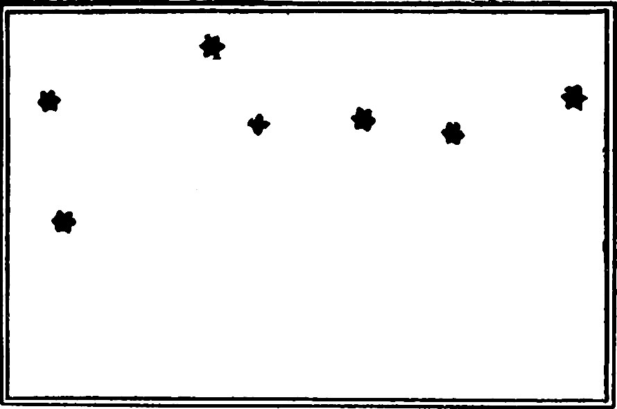
First find Ursa Major, the Great Bear, generally called the Dipper, an implement which the constellation resembles much more than it does a bear. This you can always do except perhaps in autumn when, if you are far south, it may be more or less below the northern horizon. Notice the pair of stars forming the outside of the bowl of the dipper. They are called the Pointers, because they point toward the pole star, as shown by the dotted line. This is the central star of the map. It is called Polaris.
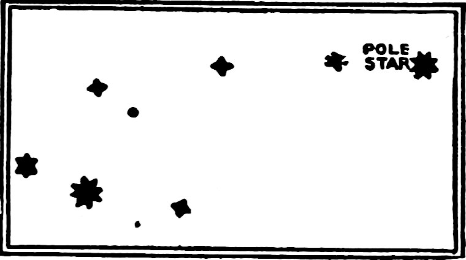
The pole star belongs to the constellation Ursa Minor, the Lesser Bear; the rest of the constellation you will see by following a curved line of stars from the pole toward XVI hours. You will thus fall on another star as bright as Polaris but a little redder in colour. This is Beta Ursæ Minoris.
If you cannot see the pointers you will still easily find Polaris if you know the exact north, because it is nearly midway between the zenith and the northern horizon—nearer the latter, however, the farther south we are. It can be easily distinguished from its neighbour, Beta, by its whiter colour, Beta being slightly red or dingy in comparison.
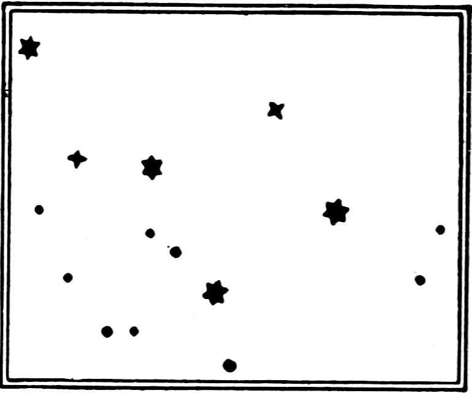
On the opposite side of the pole, at the same distance as Ursa Major, is Cassiopeia, the Lady in the Chair. The chair has a very crooked back but could be made comfortable by a cushion in the hollow.
There are several other constellations in the region around the pole, but they have few bright stars and are of less interest than those we have mentioned. Among them is Draco, the Dragon, whose form coils itself up between the Bears, and whose head is represented by a triangle of stars in XVIII hours, near the August zenith.
The zenithal and southern constellations to be looked for will vary with the season. We begin with the position of the sphere at 0 hours sidereal time, which occurs at ten o'clock in October, eight in November, and six in December.
The equinoctial colure is first to be imagined. It passes from the pole upward near the westernmost bright star of Cassiopeia and can be traced south through the eastern side of the square of Pegasus. The latter easily recognised landmark of the sky is formed by four stars of the second or third magnitude. The square is fifteen degrees on a side.
Northeast from the northeast corner of the square is the Great Nebula of Andromeda. It is plainly visible to the naked eye as a whitish, ill-defined patch of light, and is a fine object when seen in a telescope.
The Milky Way now spans the heavens like a slightly inclined arch, resting on the east and west regions of the horizon, and having its keystone a little north of the zenith, in Cassiopeia. Tracing it from this constellation toward the east, we first have Perseus, which stands in the Milky Way itself. The brightest star in this constellation is Alpha Persei, of the second magnitude.
East of Alpha is a white mass like a httle cloud. With a small telescope, even with a good field glass, we see this mass to be a collection or cluster of small stars. It is the Great Cluster of Perseus and, in the figure of the constellation, forms the hilt of the hero's sword.
In a sort of offshoot toward the south (or southeast as the constellation is now situated) lies a row of three stars. The middle and brightest of these is the wonderful variable star, Algol, whose changes will be described in a later chapter. It is also called Beta Persei.
Below Perseus, the first large constellation is Auriga, the Charioteer. It is marked by Capella, the Goat, a star of the first magnitude and one of the brightest now above the horizon—indeed, one of the four or five brightest in the sky. But it has no other striking stars.
In the southeast are Aldebaran and the Pleiades, which will be described later. Meanwhile let us follow the course of the Milky Way from the zenith toward the west.
The first collection of bright stars west of Cassiopeia is now Cygnus, the Swan, lying centrally in the Milky Way. Five stars are arranged somewhat in the form of a cross and mark the body, neck, and extended wings of the bird. The brightest of the group is Alpha Cygni, or Deneb, nearly, but not quite, of the first magnitude.
Low and to the right of Cygnus, and a little outside of the Milky Way, is the constellation Lyra, the Harp, marked by the beautiful and very bright bluish star, Vega. It has no other star of greater magnitude than the third, but what it has will repay careful study. In the figure given here, notice the star to the left of Vega; Epsilon Lyræ it is called. A keen eye will, on careful examination, see that this star is really composed of two, lying so close together that it is not easy to distinguish them. With an opera glass this will more easily be accomplished. But the most curious fact is that if a telescope be pointed at the pair, each of the stars will be found to be double, so that Epsilon Lyræ is really composed of four stars.
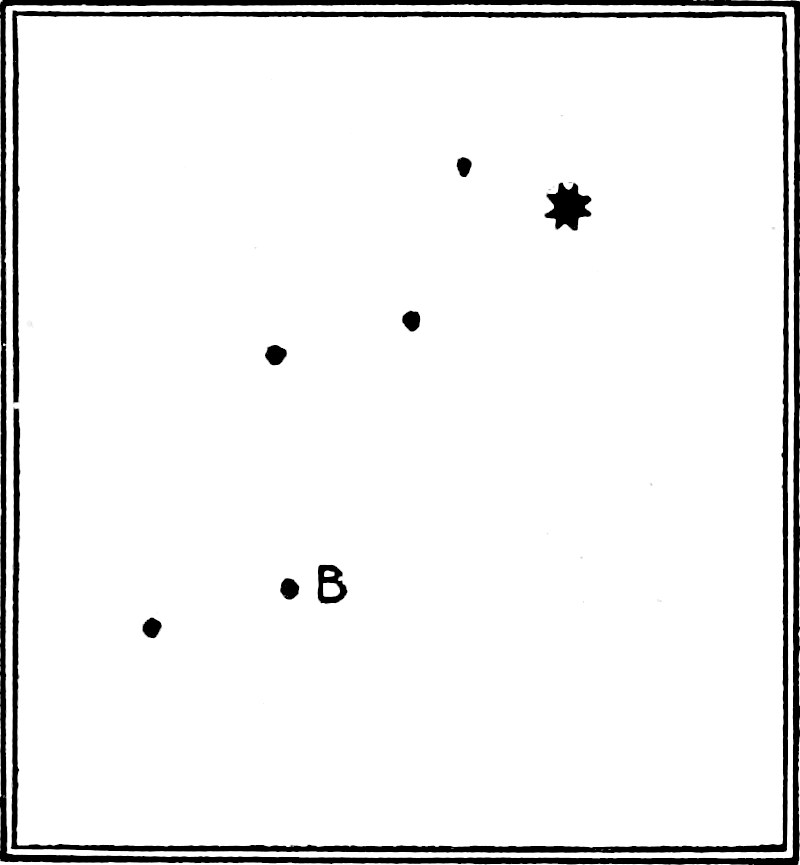
Another star, about as near to Vega as Epsilon is, lies at one corner of a parallelogram or elongated diamond, which stretches south of Vega., At the farther blunt corner of the diamond lies Beta Lyræ, marked B in the figure, a remarkable variable star. To the left of it is Gamma. The law of variation will be described in a later chapter.
To the right of Lyra, and In the Milky Way, lies Aquila, the Eagle. It will be described later.
The other constellations low in the west will be described later. At present we shall pass rapidly over the constellations of the Zodiac.
If the ecliptic were painted on the sky we should now see it rising to the north of the east point of the horizon, passing in the south to mid-sky, where it would cross the equator at a small angle, and then, passing to the west, reach the western horizon twenty-three degrees south of west. At the time we suppose, Sagittarius, the Archer, is mostly below the western horizon. Capricornus, the Goat; Aquarius, the Water Bearer, and Pisces, the Fishes, fill up the space to the meridian. The stars of these constellations are mostly faint, few or none exceeding the third magnitude.
Reaching the meridian, we see the square of Pegasus above the Zodiac, not far south of the zenith. East of it is the constellation Aries, the Ram. Three of its principal stars, of the second, third, and fourth magnitudes, form an obtuse triangle. The brightest is Alpha Arietis.
Two thousand years ago this constellation marked the first sign of the zodiac, and the equinox was just below Alpha Arietis, as explained in speaking of the precession of the equinoxes.
Southeast from the square of Pegasus is a widely extended constellation, Cetus, the Whale. Its two brightest stars. Alpha and Beta, are of the second magnitude. The latter lies nearly below the southeast star of the square of Pegasus and is quite by itself. Alpha is some distance farther east. West of Alpha, and a little south, is a remarkable star, Mira Ceti, the wonderful star of Cetus, which is invisible to the naked eye except for a month or two in each year, when it attains the fourth, third, and often the second magnitude.
A little west of south, quite low down, is Fomalhaut, nearly of the first magnitude, in the constellation Pisces Australis, the Southern Fish.
The next position of the stars we shall describe comes six hours after the preceding one; that is at two o'clock A. M. in November and at eight o'clock P. M. in February. During this six-hour interval another section of the Milky Way has risen in the east and passed over toward the south. The Milky Way now passes nearly through the zenith, resting on the horizon near the north and south points.
Near its course and east of the meridian we see the constellation Taurus, the Bull, of which the brightest star is Aldebaran, forming the eye of the bull in the mythological figure. Aldebaran is easily recognised by its red colour. It lies on the end of one branch of a V-shaped cluster called Hyades. Notice the pretty pair of stars in the middle of one leg.
Near by is the best known cluster in the sky, the Pleiades, or "seven stars." Only six stars are made out by ordinary unaided vision, but to a good eye five others are visible, making eleven in all. The term "seven stars" is therefore a misnomer; as a reason for it, it was said in ancient times that the number was originally seven but that one faded away. This "lost Pleiad" is probably a myth, as we do not find stars fading away permanently. With a telescope we find the cluster to contain quite a number of yet smaller stars, as can be seen by the telescopic view which we give.
The central and brightest star of the group is called Alcyone, and was supposed by Maedler to be the central star of the universe. But this notion is quite baseless.
East of Taurus and near the zenith is Gemini, the Twins, marked by two stars nearly of the first magnitude, Castor and Pollux. The latter is the northernmost and a little the brighter of the two.
The next zodiacal constellation is Cancer, the Crab, but it contains no conspicuous stars. Its most noticeable feature is Prœsepe, a cluster of stars, which are singly invisible to the naked eye, and look collectively like a small patch of light. The smallest telescope will show a dozen stars in the patch.
Leo, the Lion, is also well up in the east. It may be recognised by Regulus, a star nearly of the first magnitude, and a curved row of stars in the form of a sickle, of which Regulus is the handle.
In the south we now have the most brilliant constellation in the heavens, the beautiful Orion. The three stars of the second magnitude in a row forming the belt of the warrior are familiar from childhood to all who watch the sky. Below them hangs another row of three stars, the upper one quite faint. The middle one of these has a hazy aspect, and is really not a star at all, but one of the most splendid objects in the sky, the Great Nebula of Orion. A mere spy-glass will show its character, but a large telescope is required to bring out the magnificence of its form.
The corners of the constellation are marked by four stars. The brighter of the two uppermost, Alpha Orionis, or Betelguese, is reddish in colour. At the opposite corner is Rigel, blue in colour and also of the first magnitude. The two upper stars are in the shoulders of the figure. Midway and above them a triangle of small stars forms the head.
East of Orion is Canis Minor, the Little Dog, containing Procyon, of the first magnitude. Below it and southeast of Orion is another collection of bright stars forming the constellation Canis Major, the Great Dog, containing Sirius, the Dog Star, the brightest fixed star in the heavens.
The third position of the sphere, sidereal time twelve hours, occurs in February at two A. M.; in May at eight P. M. Lyra has now risen in the northeast and Capella is going downward in the northwest. The Milky Way may not be visible at all unless the air is very clear. It will then be seen skirting the northern and western horizon. Regulus has passed the meridian, and Orion and Canis Major have set, or are low down in the southwest.
In mid-heaven, southeast of the zenith, is Arcturus, of a dingy yellow colour, but one of the brightest first magnitude stars.
East of Arcturus (now below it) is Corona Borealis, the Northern Crown, a beautiful semicircle of stars, of which the brightest is of the second magnitude.
Near the zenith is Coma Berenices, the Hair of Berenice, a collection of faint stars mostly of the fifth magnitude. East of south across the meridian from Leo is Virgo, the Virgin, conspicuous only by Spica, a white star of nearly the first magnitude. Libra, the Balance, east and southeast of Virgo, has no conspicuous stars.
The fourth position of the sphere, eighteen hours sidereal time, occurs in May at two A. M.; in August at eight P. M. Capella has now set, Lyra is near the zenith, Cassiopeia is in the northeast, and the most splendid portion of the Milky Way is near the meridian. We have described all the constellations that lie near its course north of Lyra; let us now trace it to the south.
One of the noticeable features of the Milky Way now to be seen is the great bifurcation, or separation into two branches. The split can be traced from Cygnus, where it begins, past Lyra and halfway to the southern horizon. Here we see Aquila, the Eagle, in the cleft, marked by Altair, of the first magnitude. It is in a line between two other stars of the third and fourth magnitudes.
At this point the westernmost branch of the Milky Way diverges yet farther and seems to terminate, but if the air is clear we shall see that it recommences near the horizon.
East of Aquila is a small but very pretty constellation of which the scientific name is Delphinus, the Dolphin, but which is popularly known as Job's Coffin.
Between Lyra and the beautiful Corona, now some distance west of the zenith, lies the widely extended constellation, Hercules. Alpha, its brightest star, is below the second magnitude and may be known by its reddish colour and by a white star, Alpha Ophiuchi, a little farther east. The most remarkable object in this constellation is the Great Cluster of Hercules which, to the naked eye, is a very faint patch, but which a great telescope resolves into a universe of stars.
Near the horizon, west of south, is the zodiacal constellation Scorpius, the Scorpion. Its western boundary is a curved row of stars forming the claws of the animal; east of them is Antares, or Alpha Scorpii, reddish in colour, and nearly of the first magnitude.
In the Milky Way, due south, and therefore east of Scorpius, is Sagittarius, the Archer, with quite a collection of stars of the second and third magnitudes. The bow and arrow of the archer are easily imagined.
Next toward the east are Capricornus and Aquarius, already mentioned. The brightest star in the former has a companion so close to it that it is a sign of not bad eyesight to be able to distinguish it.
The principles on which distances in the heavens are determined was set forth in our chapter explaining how the heavens are measured. For distances of the moon and nearer planets, we use, as a base line for measurement, the radius of the earth, or the line joining two points of observation on its surface. But this is entirely too short to serve for measuring a distance so great as that even of the nearest star. For this purpose we take as a base line the whole diameter of the earth's orbit. As the earth moves from one side of the orbit to the other, the stars must seem to have a slight motion in the opposite direction. But this motion is found to be almost immeasurably small. It can be made out with sufficient precision only by comparing the stars among themselves in the following way:
Let the little circle on the left of the following figure represent the orbit of the earth. Let S be the star, supposed to be near us, of which we wish to measure the distance. Let the dotted lines almost parallel to each other show the direction of a star T many times farther away. When the earth is at one side of its orbit, say at P, we measure the small angle SPT, which seems to us to separate these two stars. When the earth goes to the opposite side, it is readily seen that the corresponding angle SQT will be greater. We again measure it. The difference between these two angles will furnish a basis for computing, by trigonometric methods, the distance of the nearest star when that of the farthest is known. Practically we have to assume that the star T is at an infinite distance, so that the dotted lines are parallel. Then the measured difference between the angles will enable us to calculate the angle subtended by the radius of the earth's orbit, as seen from the star S. This angle is what astronomers habitually use in their computations, not the distance of the star. It is called the Parallax of the star. If we wish to obtain the distance of the star, we have to divide the number 206,265 by the parallax of the star expressed as a fraction of a second. This will give its distance in terms of the radius of the earth's orbit as a unit of measure. One second is the angle subtended by an object one inch in diameter at a distance of 206,265 inches, or more than three miles. It is, of course, completely invisible to the naked eye.
It will be seen that this method of measurement implies that we know which of the two stars is the nearer; in fact, that we know the farther star to be at an almost infinite distance. The question may be asked how this knowledge is obtained, and how a star is selected as being near to us. The most careful measures that can be made with the finest instruments show that the great mass of small telescopic stars do not have the slightest change in their relative positions, but remain as if fixed on the celestial sphere from year to year. Now and then, however, an exception is found. A very bright star is probably nearer to us than the fainter ones, and if a star shows any change in its position, the astronomer may proceed to measure and determine its parallax.
So far as has yet been determined, the nearest star to us is Alpha Centauri, a star of nearly the first magnitude, in the southern hemisphere. The parallax of this star is 0.75". By the rule we have given, its distance will be nearly 275,000 times that of the sun. Such a distance transcends all our power of conception over and over again. A crude idea of it may be obtained by reflecting that light itself, the speed of which we have already described, would require more than four years to reach us from this star. We see the latter, not as it is now, but as it was more than four years ago. At such a distance not only does the earth's orbit itself vanish away to a point, but a ball as large as the whole body of Neptune would be barely visible to the naked eye as the minutest possible point.
The next star in the order of distance is supposed to be about one half as far again as Alpha Centauri, and there are some half dozen others, within three or four times its distance. In all, the parallaxes of about one hundred stars have been determined with more or less exactness; but even in these cases the parallax is sometimes so small that we cannot be sure it is real. It seems likely that only about fifty stars are within seven times the distance of Alpha Centauri. The distance of the stars whose parallaxes are too small to be measured is a matter of judgment rather than calculation. The probability seems to be that at least the brighter stars are scattered through space with some approach to uniformity. If this is the case, many of the fainter telescopic stars, perhaps the large majority of the smallest ones found on photographs of the heavens, must be more than one thousand times the distance of Alpha Centauri. The light by which their presence is made known to us must have been on its way to our system during the whole period of human history.
If I were asked what is the greatest fact that the intellect of man has ever brought to light I should say it was this:
Through all human history, nay, so far as we can discover, from the infancy of time, our solar system—sun, planets, and moons—has been flying through space toward the constellation Lyra with a speed of which we have no example on earth. To form a conception of this fact the reader has only to look at the beautiful Lyra and reflect that for every second that the clock tells off, we are ten miles nearer to that constellation. Every day that we live we are nearer to it by almost, perhaps quite, a million of miles. For every sentence that we utter, for every step that we take in the streets we are miles nearer to this star. We approached it by tens of thousands of miles while the writer has been penning these lines, and the reader has been carried nearer by a thousand miles while perusing them. This has been going on through all human history, and we have reason to believe that it will remain true for our remotest posterity. One of the greatest problems of astronomy is, when and how did this journey begin and when and how will it end? Before this question our science stands dumb. The astronomer can tell no more about the beginning or the end of the journey than can the untutored child. He can only impress upon the mind of his followers the magnitude of the problem.
Nothing can give us a better conception of the enormous distance of the stars than the reflection that notwithstanding the rapid motion, carrying us unceasingly forward through all the ages that the human race has existed on earth, ordinary observation would fail to show any change in the appearance of the constellation toward which we are travelling. From what we know of the distance of Vega we have reason to suppose that our solar system will not reach the region in which that star is now situated until the end of a period ranging somewhere between half a million and a million of years from the present time.
It does not follow, however, that our posterity, if any such shall then live on the earth, will find Vega when they arrive at its present place. It also is going on its own journey and is passing away from its present location almost as rapidly as we are approaching it.
What is true of our sun and of Vega is true, so far as we know, of every star in the heavens. Each of these bodies is flying straight ahead through space like a ball shot out from a cannon, with a speed which in most cases is almost inconceivable. It would be a very slow moving star of which the velocity did not exceed that of a cannon shot. In the great majority of cases it ranges from five to thirty miles per second—frequently more than fifty miles. Indeed there are two stars, of which Arcturus is one, whose speed we have reason to believe approaches two hundred miles a second. These motions of the stars are called their proper motions.
We have described the proper motions as so many miles per second. But owing to the enormous distance of the stars, rapid as the proper motions are in reality, they seem slow indeed when we observe them. So slow are they that if Ptolemy should come to life after his sleep of nearly eighteen hundred years, and be asked to compare the heavens as they are now with those of his time, he would not be able to see the slightest difference in the configuration of a single constellation. Even to the oldest Assyrian priests, the constellation Lyra and the star Vega looked exactly as they do to us to-day, notwithstanding the immeasurable distance by which we have approached them.
To resuscitate an inhabitant of the ancient world who would be able to perceive any change, we should have to go back four thousand years perhaps, to the time of Job, and we should have to take one of the swiftest moving stars in the heavens, Arcturus. Bringing Job to life and showing him the constellation Bootes, of which Arcturus is the brightest star, he would perceive the latter to have moved through about half of the distance in the accompanying diagram between the stars marked "1" and "2."
In considering these motions, the most natural thought to present itself is that the stars are describing vastly extended orbits around some centre, as the planets are moving round the sun, and that the motions we see are simply the motions in these orbits. But the facts do not support this view. The most refined observations yet made do not show the slightest curvature in the path of any star. Every one seems to be going straight ahead on its own account, never swerving to the right or left. It does not seem possible to admit the existence of bodies large and massive enough to control such rapid motions. A body massive enough to attract Arcturus from its headlong course would throw all that part of the universe in which we live into disorder. The problem where the rapidly moving stars came from and whither they are going is therefore for us insoluble. What makes the case yet more difficult is that different stars move in different directions, without any seeming order, so that one motion seems to have no connection with another, unless in a few very rare cases.
As a general rule the starry heavens may be taken as a symbol of eternal unchangeability. The proverb-makers have told us in all time how everything on the earth is subject to alternation and decay, while the stars of heaven remain as we see them, age after age. But it is now known that, although this is true of the great majority of the stars, there are some exceptions. These are so little striking that they were never noticed by the ancient astronomers.
The first person in history to observe a change in a star was one Daniel Fabritius, a diligent watcher of the heavens, who lived three centuries ago.
In August, 1596, he noticed a star of the third magnitude before unknown in the constellation Cetus, which soon faded away again, and disappeared from view in October. In subsequent years it was found to show itself at regular intervals of about eleven months.
Two centuries elapsed before another case of the kind was known. Then it was found that the star Algol, in Perseus, faded away from the second to the fourth magnitude for a few hours at intervals of a little less than three days.
Early in the nineteenth century other stars were found to be subject to a more or less regular variation of their light. As observers studied the heavens with greater care, more and more of such stars were found, until at the present time the list of them numbers four or five hundred, and is constantly increasing. Of these some vary in an irregular way, but a large majority go through a regular period.
The easiest of these objects to notice is Beta Lyra, which is marked B on the figure of that constellation already given. It can be seen at some hour of any clear evening, spring, summer, or autumn. If the reader as he takes his evening walk will, night after night, compare this star with the one nearest to it and nearly of the same magnitude, he will see that while on some evenings the two appear perfectly equal, on others Beta will be of a magnitude fainter than the other. Careful and continued watching will show that the change takes place in a period of about six days and a half. That is to say, if the two stars are equal on a certain evening, they will again appear equal at the end of six or seven days, and so on indefinitely. Midway between the two times of equality the variable one will be at its faintest. If the observer notes the magnitudes at this time with the greatest precision, a curious fact will be brought out. Every alternate minimum, as the phase of least light is called, is slightly fainter than that preceding or following. The actual period is therefore nearly thirteen days, during which time there are two maxima of equal brightness and two slightly different minima.
It is now known that the variation of light in this case is not really inherent in the star itself, but arises from the fact that the star is a double one, composed of two stars revolving around each other, and so near together as almost to touch. As they revolve, each one in succession wholly or partially hides the other. This fact is not brought out by the telescope, because the most powerful telescope that could be made would not show the two stars separately. It is the result of long and careful study of the spectrum of the star, which is found to be a double one, the lines in one of which alternately cover and recede from the lines of the other.
In the extent of variation of its light the most remarkable of the more conspicuous variable stars is Omicron Ceti, already mentioned as seen by Fabritius. It is now found to go through a regular period in three hundred and thirty days. During about two weeks of this time it is at its brightest, and is then sometimes of the second magnitude and sometimes much fainter—occasionally only of the fifth. After each maximum it gradually fades away for a few weeks and disappears from view to the naked eye. But with a telescope it can be seen all the year round.
The period of eleven months makes the maximum occur about a month earlier every year. During some years it will occur when the star is so near the sun that it cannot be easily observed. This will be the case during the years 1903-'05.
Algol, also called Beta Persei, being in northern declination, can be seen in our latitudes at some time on almost every night of the year. In autumn and winter it is visible in the early evening. The peculiarity of its variation is that it remains of the same brightness nearly all the time, but fades away for a few hours at intervals of about two days and twenty-one hours. It is now known that this is due to the partial eclipse of the star by a dark body nearly as large as itself, revolving round it. It is true that this body has never been seen by human eye and never will be. Its existence is made known by its causing the star to revolve in a small orbit. It is true that this motion of the bright star is too small to be observed with the telescope, but it is made certain by means of the spectroscope, which shows a change in the wave length of the light coming from the star.
Different variable stars differ very widely in the extent of their variation. In most cases the latter is so slight that only an expert observer would notice it. Frequently it cannot be determined until after a long study by various observers whether a "suspected variable" is really such.
These objects form a very interesting subject of observation for those who have at command little or no instrumental facilities. No telescope is needed unless the star is, at some of its phases, invisible to the naked eye. The points to be noticed and recorded are the exact magnitude of the star from minute to minute or hour to hour, as it is going through its most rapid change, in order to learn at what moment its brightness is greatest or least.
What adds to the interest of the astronomer in these objects is the evidence now being gathered that many, perhaps most of the stars, are not single bodies, but more or less complex systems of bodies having the widest diversity in their construction. Double stars have been familiar to every observer of the heavens since the time of the great Herschel. But it is only in the time of our generation that the spectroscope has begun to make known to us pairs of stars revolving round each other, of which the components are so close together that the most powerful telescope can never separate them. The history of science offers no greater marvel than the discoveries of invisible planets moving round many of the stars which are now being made, and in which the Lick observatory has recently taken the lead.
It now seems more or less probable that the changes of light in all stars having a regular and constant period is due to the revolution of large planets or other stars around them. Sometimes the variation is slight and is caused in the way we have described, by one body partially eclipsing the other as it passes across it. In this case there may be no real variation in the light; the star eclipsed shines just as bright behind the eclipsing body as when it is not eclipsed. But it now seems that, if the darker body revolves in a very eccentric orbit, so as to be much nearer the bright body at some times than at others, its attraction produces such a change in the other as to greatly increase its light. Just how this effect is produced it is as yet impossible to say.